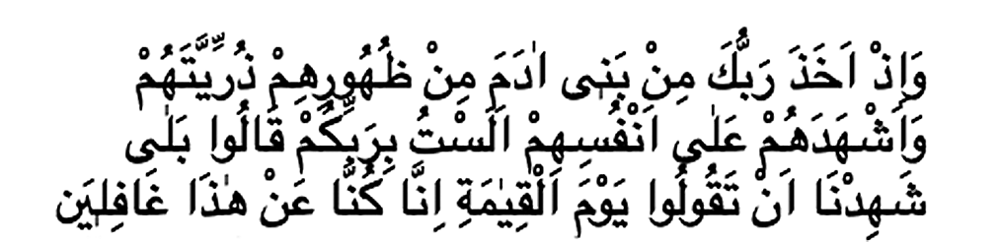

ATATÜRK VE GENÇLİK
ADNAN OKTAR (HARUN YAHYA)
Yazar ve Eserleri Hakkında
Harun Yahya müstear ismini kullanan yazar Adnan Oktar, 1956 yılında Ankara'da doğdu. İlk, orta ve lise öğrenimini Ankara'da tamamladı. Daha sonra İstanbul Mimar Sinan Üniversitesi Güzel Sanatlar Fakültesi'nde ve İstanbul Üniversitesi Felsefe Bölümü'nde öğrenim gördü. 1980'li yıllardan bu yana, imani, bilimsel ve siyasi konularda pek çok eser hazırladı. Bunların yanı sıra, yazarın evrimcilerin sahtekarlıklarını, iddialarının geçersizliğini ve Darwinizm'in kanlı ideolojilerle olan karanlık bağlantılarını ortaya koyan çok önemli eserleri bulunmaktadır.
Harun Yahya'nın eserleri yaklaşık 45.000 resmin yer aldığı toplam 65.000 sayfalık bir külliyattır ve bu külliyat 73 farklı dile çevrilmiştir.
Yazarın müstear ismi, inkarcı düşünceye karşı mücadele eden iki peygamberin hatıralarına hürmeten, isimlerini yad etmek için Harun ve Yahya isimlerinden oluşturulmuştur. Yazar tarafından kitapların kapağında Resulullah'ın mührünün kullanılmış olmasının sembolik anlamı ise, kitapların içeriği ile ilgilidir. Bu mühür, Kuran-ı Kerim'in Allah'ın son kitabı ve son sözü, Peygamberimiz (sav)'in de hatem-ül enbiya olmasını remzetmektedir. Yazar da, yayınladığı tüm çalışmalarında, Kuran'ı ve Resulullah'ın sünnetini kendine rehber edinmiştir. Bu suretle, inkarcı düşünce sistemlerinin tüm temel iddialarını tek tek çürütmeyi ve dine karşı yöneltilen itirazları tam olarak susturacak "son söz"ü söylemeyi hedeflemektedir. Çok büyük bir hikmet ve kemal sahibi olan Resulullah'ın mührü, bu son sözü söyleme niyetinin bir duası olarak kullanılmıştır.
Yazarın tüm çalışmalarındaki ortak hedef, Kuran'ın tebliğini dünyaya ulaştırmak, böylelikle insanları Yüce Allah'ın varlığı, birliği ve ahiret gibi temel imani konular üzerinde düşünmeye sevk etmek ve inkarcı sistemlerin çürük temellerini ve sapkın uygulamalarını gözler önüne sermektir.
Nitekim Harun Yahya'nın eserleri Hindistan'dan Amerika'ya, İngiltere'den Endonezya'ya, Polonya'dan Bosna Hersek'e, İspanya'dan Brezilya'ya, Malezya'dan İtalya'ya, Fransa'dan Bulgaristan'a ve Rusya'ya kadar dünyanın daha pek çok ülkesinde beğeniyle okunmaktadır. İngilizce, Fransızca, Almanca,
İtalyanca, İspanyolca, Portekizce, Urduca, Arapça, Arnavutça, Rusça, Boşnakça, Uygurca, Endonezyaca, Malayca, Bengoli, Sırpça, Bulgarca, Çince, Kishwahili (Tanzanya'da kullanılıyor), Hausa (Afrika'da yaygın olarak kullanılıyor), Dhivelhi (Mauritus'ta kullanılıyor), Danimarkaca ve İsveçce gibi pek çok dile çevrilen eserler, yurtdışında geniş bir okuyucu kitlesi tarafından takip edilmektedir.
Dünyanın dört bir yanında olağanüstü takdir toplayan bu eserler pek çok insanın iman etmesine, pek çoğunun da imanında derinleşmesine vesile olmaktadır. Kitapları okuyan, inceleyen her kişi, bu eserlerdeki hikmetli, özlü, kolay anlaşılır ve samimi üslubun, akılcı ve ilmi yaklaşımın farkına varmaktadır. Bu eserler süratli etki etme, kesin netice verme, itiraz edilemezlik, çürütülemezlik özellikleri taşımaktadır. Bu eserleri okuyan ve üzerinde ciddi biçimde düşünen insanların, artık materyalist felsefeyi, ateizmi ve diğer sapkın görüş ve felsefelerin hiçbirini samimi olarak savunabilmeleri mümkün değildir. Bundan sonra savunsalar da ancak duygusal bir inatla savunacaklardır, çünkü fikri dayanakları çürütülmüştür. Çağımızdaki tüm inkarcı akımlar, Harun Yahya Külliyatı karşısında fikren mağlup olmuşlardır.
Kuşkusuz bu özellikler, Kuran'ın hikmet ve anlatım çarpıcılığından kaynaklanmaktadır. Yazarın kendisi bu eserlerden dolayı bir övünme içinde değildir, yalnızca Allah'ın hidayetine vesile olmaya niyet etmiştir. Ayrıca bu eserlerin basımında ve yayınlanmasında herhangi bir maddi kazanç hedeflenmemektedir.
Bu gerçekler göz önünde bulundurulduğunda, insanların görmediklerini görmelerini sağlayan, hidayetlerine vesile olan bu eserlerin okunmasını teşvik etmenin de, çok önemli bir hizmet olduğu ortaya çıkmaktadır.
Bu değerli eserleri tanıtmak yerine, insanların zihinlerini bulandıran, fikri karmaşa meydana getiren, kuşku ve tereddütleri dağıtmada, imanı kurtarmada güçlü ve keskin bir etkisi olmadığı genel tecrübe ile sabit olan kitapları yaymak ise, emek ve zaman kaybına neden olacaktır. İmanı kurtarma amacından ziyade, yazarının edebi gücünü vurgulamaya yönelik eserlerde bu etkinin elde edilemeyeceği açıktır. Bu konuda kuşkusu olanlar varsa, Harun Yahya'nın eserlerinin tek amacının dinsizliği çürütmek ve Kuran ahlakını yaymak olduğunu, bu hizmetteki etki, başarı ve samimiyetin açıkça görüldüğünü okuyucuların genel kanaatinden anlayabilirler.
Bilinmelidir ki, dünya üzerindeki zulüm ve karmaşaların, Müslümanların çektikleri eziyetlerin temel sebebi dinsizliğin fikri hakimiyetidir. Bunlardan kurtulmanın yolu ise, dinsizliğin fikren mağlup edilmesi, iman hakikatlerinin ortaya konması ve Kuran ahlakının, insanların kavrayıp yaşayabilecekleri şekilde anlatılmasıdır. Dünyanın günden güne daha fazla içine çekilmek istendiği zulüm, fesat ve kargaşa ortamı dikkate alındığında bu hizmetin elden geldiğince hızlı ve etkili bir biçimde yapılması gerektiği açıktır. Aksi halde çok geç kalınabilir.
Bu önemli hizmette öncü rolü üstlenmiş olan Harun Yahya Külliyatı, Allah'ın izniyle, 21. yüzyılda dünya insanlarını Kuran'da tarif edilen huzur ve barışa, doğruluk ve adalete, güzellik ve mutluluğa taşımaya bir vesile olacaktır.
Birinci Baskı:Aralık 2002
İkinci Baskı: Mart 2006
Üçüncü Baskı: Kasım 2009
Dördüncü Baskı: Mayıs 2016
Beşinci Baskı: Kasım 2016
Altıncı Baskı: Kasım 2017
ARAŞTIRMA YAYINCILIK
Kayışdağı Mah. Değirmen Sokak No: 3
Ataşehir - İstanbul / Tel: (0 216) 660 00 59
Baskı: Acar Matbaacılık
Promosyon ve Yayıncılık San. ve Tic. Ltd Şti.
Osmangazi Mah. Mehmet Deniz Kopuz Cad. No:20/1
Esenyurt - İstanbul / Tel: (0 212) 886 56 56
www.harunyahya.org - www.a9.com.tr
www.harunyahya.tv - www.harunyahya.net
İçindekiler
Giriş 8
Atatürk'ün Türk Gençliğine Bakışı 11
Cumhuriyet Dönemi’nde Türk Gençliği 22
Atatürk'ün İdealindeki Gençlik 40
Örnek Türk Genci: Atatürk 80
Sonuç 103
Evrim Yanılgısı 105
Giriş
Gençlik her millet için önemli bir kuvvettir. Bilinçli ve sorumluluk sahibi bir gençlik, o milletin umududur, geleceğinin güvencelerindendir. Özellikle de genç bir nüfusa sahip olan Türkiye için -ülkemizde nüfusun yarısı yirmi yaşın altındadır- bu imkanın iyi değerlendirilmesi, Türk Milleti'nin hak etmiş olduğu medeni toplumlar seviyesine ulaşması için gereklidir. İçinde yer aldığı coğrafya ve sahip olduğu tarihi miras Türk Milleti'nin üzerine çok önemli sorumluluklar yüklemektedir. Aydın, milli değerlerini koruyan, ileri görüşlü genç bir neslin yetişmesi, sahip olduğumuz şanlı tarihle birleştirildiğinde, Türkiye yalnızca ileri toplumlar seviyesine ulaşmakla kalmayacak, oldukça geniş bir coğrafyada pek çok ülkeye liderlik yapabilecek konuma gelecektir.
Geçtiğimiz yüzyılın en büyük devlet adamlarından biri olarak kabul edilen Mustafa Kemal Atatürk de, "Gelecek gençlerin, gençler ise öğretmenlerin eseridir."1 sözleri ile gençliğe özel önem verdiğini vurgulamış, gençlerin eğitimi ve bilinçlendirilmesi konularına dikkat çekmiştir. Türk gençliğine çok güvenen ve bunu her fırsatta vurgulayan Atatürk, ülke topraklarının bölünmez bütünlüğünü ve Cumhuriyeti koruma görevini de bu nedenle gençlere vermiştir.
Atatürk'ün Türk gençliğine duyduğu güvenin temelinde, gençlerin Milli Mücadele'nin ilk dönemlerinden itibaren kendisine verdikleri destek bulunmaktadır. Bununla birlikte Cumhuriyetin kuruluş yıllarında da gençler, Atatürk ilkelerinin korunup ayakta tutulmasında önemli roller üstlenmişlerdir. Günümüzde ise gerek ülkemizin içinde bulunduğu siyasi ve ekonomik koşullar, gerekse uluslararası ilişkilerde yaşanan önemli gelişmeler Türk gençliğinin yine önemli sorumluluklar almasını gerektirmektedir. Ne var ki gençlerimizin bir kısmı bu sorumluluğu yüklenebilecek bir birikime sahip değildir, bir kısmı da sorumluluğa talip olmakla birlikte ne yapması gerektiğini bilememektedir. Dolayısıyla gençlerimize doğru hedefler belirlemek, bu hedeflere ulaşabilmeleri için yol göstermek çok büyük önem taşımaktadır. Bu, hem gençlerimizin kişisel gelişimleri hem de ülkemizin geleceği açısından herkesin üstlenmesi gereken bir görevdir.
Bu görevi yerine getirmek için yola çıkanların ilk yapması gereken, Atatürk'ün yaşamına, gençler için belirlemiş olduğu yola bakmak olmalıdır. Yapılacak basit bir araştırma dahi, Atatürk'ün bu alanda temel hedefleri ve bu hedeflere ulaşacak en vurucu yolları tespit etmiş olduğunu gösterecektir. Atatürk'ün Türk gençliğinin eğitimi, gelişimi, sahip olması gereken ahlaki özellikleri, karakteri ve sorumlulukları üzerine yaptığı açıklamalar rehber niteliği taşımaktadır. Ancak bunun için öncelikli olarak Atatürk'ün doğru tanınması ve gösterdiği yolun doğru anlaşılması şarttır. Tarihin en önemli dehalarından biri olan Atatürk, milli ve manevi değerlerine bağlı, dürüst, vicdanlı, akılcı, ileri görüşlü, cesur, mert, mütevazı, adil, gerçek bir Türk milliyetçisiydi. Atatürk vatan ve millet sevgisini öncelikli tutan, medeni toplumlar seviyesine ulaşmayı hedefleyen, aynı zamanda da bu toplumları taklit etmekten kaçınan, kendi kültürümüze ve tarihimize sahip çıkmamız gerektiğini vurgulayan, birleştirici ve bütünleştirici bir hayat görüşüne sahipti. Atatürk, Cumhuriyeti emanet ettiği gençlerin de hem kendisinin sahip olduğu özellikleri taşımalarını, hem de hedeflediği gençliğin sahip olması gereken karakteri tam anlamı ile kavrayıp uygulamaya geçirmelerini amaçlamıştı.
Bu kitabın amaçlarının başında bir yandan Atatürk'ün gençliğe bakış açısını ele alırken bir yandan da gençlerin Atatürk'ü doğru anlamalarına yardımcı olmak vardır. Günümüz gençliğinin hayati sorunlarının başında Atatürk'ü gereği gibi tanımamak, milli ve manevi değerlerimizden uzaklaşmak ve millet olma bilincini göz ardı etmek gelmektedir. Atatürkçülüğü kendi çarpık ideolojilerine kılıf olarak kullanmak ve bu şekilde gençleri doğru yoldan uzaklaştırmak isteyen çevrelerin sarf ettikleri çaba göz önünde bulundurulursa, gençliğin Atatürk'ü ve Atatürk'ün kendileri için belirlemiş olduğu ideali doğru kavramalarının ne kadar acil bir ihtiyaç olduğu daha iyi anlaşılacaktır. Unutulmamalıdır ki Türkiye'nin geleceği, Mustafa Kemal Atatürk'ün hepimize vasiyet etmiş olduğu gibi, vicdanlı, sağduyulu, güzel ahlaklı, dindar, çağdaş, ilerici, vatansever, milliyetçi, itaatli, kişilikli bir neslin yetiştirilmesine ve bu neslin azmine, şevkine ve çalışmalarına bağlıdır.
Atatürk'ün Türk Gençliğine Bakışı
Atatürk'ün hayatını inceleyen ve dünya görüşünü bilen herkes, gençlerin Atatürk için özel bir anlamı olduğunu da bilir. Atatürk için gençlik, aydınlık bir gelecek için önemli bir güç, Cumhuriyetin üzerine inşa edildiği tüm değerleri koruyup yaşatacak olan bir kuvvettir. Bu nedenle Atatürk gençliğe çok büyük değer vermiş ve onlara her zaman güvenmiştir. Milli Mücadele için yola çıktığı ilk günlerden itibaren kendisinin en önemli destekçilerinin gençler olacağını sık sık belirten Atatürk, bağımsızlığın kazanılıp Cumhuriyetin kurulmasının ardından da gençlik konusuna özel önem göstermiştir. Yurt gezilerinde genelde öncelikli olarak liseleri ziyaret edip gençlere doğrudan hitap etmiş, gençlerle sürekli diyalog içinde olmaya özen göstermiştir. Konuşmalarında sık sık gençlerden beklentilerini ve nasıl bir gençlik istediğini dile getiren Atamız, Büyük Nutuk'un son bölümünde yer alan "Gençliğe Hitabe" ile de gençliğin her türlü sorunun üstesinden gelebileceğine duyduğu inancı vurgulamıştır.
Atatürk'ün liderliğini yapmış olduğu bağımsızlık mücadelesi, bu mücadelenin yapıldığı koşullar ve yeni kurulan Türkiye Cumhuriyeti'ni bekleyen iç ve dış tehlikeler göz önünde bulundurulduğunda, Atatürk'ün gençliğe neden bu kadar önem verdiği daha iyi anlaşılacaktır. Ülkenin dört bir yanının düşman işgali altında olduğu, devlet otoritesinin neredeyse tamamen ortadan kalktığı, bencil ve durumdan kendi menfaatlerine pay çıkarmaya çalışan kişilerin aleyhte faaliyetler gösterdiği bir ortamda birlik ve beraberliğin sağlanması, tüm imkanların Milli Mücadele bayrağı altında birleştirilmesi bağımsızlık savaşının en büyük zorluklarından olmuştur. Böyle bir dönemde gençler, Atatürk'e, aldığı tüm kararlarda bağlılık göstermiş, savaş sırasında da cephede ve cephe gerisinde önemli başarılar elde etmişlerdir. Bununla birlikte Atatürk açısından gençlerin en önemli sorumluluğu Cumhuriyet'in ilan edilmesi ile başlamıştır. Gerek dünyanın içinde bulunduğu siyasi belirsizlik, gerekse yeni Cumhuriyet'e karşı iç veya dış kaynaklı kurulan çeşitli komplolar en az Milli Mücadele dönemi kadar zor bir dönemin yaşanmasına neden olmuştur. Bir yandan ekonomik zorluklar, bir yandan savaş sonrası yaşanan sosyal problemler gibi yeni kurulan bir devletin karşılaştığı çeşitli sorunların aşılmasında Atatürk gençlerin dinamizmine, enerjilerine ve hepsinden önemlisi Atatürk ilkelerine duydukları sadakate güvenmiştir. Bu nedenledir ki, Türkiye'nin geleceğinin en önemli dayanaklarından biri olarak gördüğü gençliğe şöyle seslenmektedir:
Gençler! Cesaretimizi takviye ve devam ettiren sizsiniz. Siz almakta olduğunuz eğitim ve kültür ile, insanlık meziyetinin, vatan, fikir hürriyetinin en kıymetli sembolü olacaksınız. Ey yükselen yeni nesil! ‹stikbâl sizindir. Cumhuriyet'i biz kurduk; onu yükseltecek ve devam ettirecek sizsiniz.2
Bu sözleri ile Cumhuriyet'i yalnızca korumak değil, yükseltmek görevini de gençlere veren Atatürk, bunun ancak güzel ahlakı, adaleti, haksızlıkla ve zulümle mücadele etmeyi, milli ve manevi değerlerimize bağlı kalmayı, tarihimizle gurur duymayı bununla birlikte yüzümüzü de sürekli geleceğe dönük tutmayı öngören ilkelerinin ayakta tutulması ile sağlanacağına dikkat çekmiştir. "İsterim ki, daima idealimi gençlere aşılayasınız ve daima korumak hususunda çalışasınız."3 sözleri ile dile getirilen bu istek, bir anlamda Atamızın bizlere en önemli miraslarından biridir. Bunu yerine getirebilmek için çaba göstermek, Atatürk'ü anlamak ve anlatmak için faaliyette bulunmak gençliğin bilinçlenmesinde önemli bir rol oynayacak, böylece Atatürk'ün başlatmış olduğu reformlar tam olarak hedefine ulaşacaktır.
Atatürk Genç Nesile Güveniyordu
"Milletin bağrından temiz bir kuşak yetişiyor. Bu eseri ona bırakacağım ve gözüm arkada kalmayacak"4 diyen Mustafa Kemal Atatürk, Türk gençliğine her zaman için büyük güven duymuştur:
Gençlikle iftihar ediyorum ve gençliğe güveniyorum!5
Atatürk'ün Türk gençliğine duyduğu güven, 1918'de Mondros Mütarekesi'nin imzalandığı günlere dayanır. İşgalin en ağır günlerinin yaşandığı ve ülke genelinde belirsizliğin hakim olduğu günlerde, Atatürk gençlerin kendisine umut verdiğini şöyle ifade etmektedir:
Her şeye rağmen muhakkak bir nura doğru yürümekteyiz. Bende bu inancı yaşatan kuvvet yalnız azim memleket ve millet hakkındaki sonsuz sevgim değil, bugünün karanlıkları, ahlaksızlıkları, şarlatanları içinde, sırf vatan ve hakikat aşkı ile ışık serpmeye ve aramaya çalışan bir gençlik gördüğümdür.6
1919 yılında yaptığı bir başka konuşmasında ise içinde bulunulan koşulların gelecekte asla unutulmaması gerektiğini belirtirken, genç nesile duyduğu güveni bir kez daha dile getirmişti:
Başımıza neler örülmek istenildiği ve nasıl mukavemet ettiğimiz ve daha doğrusu milletin arzu ve emellerine uyarak ve onun yardımıyla nasıl çalıştığımız görülmeli ve gelecek kuşaklar için ibret ve uyanıklığı gerektirmelidir. Zaten her şey unutulur. Fakat biz her şeyi gençliğe bırakacağız, o gençlik ki hiçbir şeyi unutmayacaktır; geleceğin ışık saçan çiçekleri onlardır. Bütün ümidim gençliktedir.7
Atatürk'ün gençliğe bu derece güvenmesinin temelinde doğru eğitim almış, kişiliği tam anlamı ile gelişmiş bir gençliğin nelere güç yetirebileceğini biliyor olması bulunmaktadır. Atatürk gençliğin toplumdaki yerini ve toplumsal değişimdeki önemini kavramış ve genç neslin üstleneceği dinamizme inanmıştır. Zeki, doğruyu yanlıştan ayırabilecek vicdana sahip, manevi olarak güçlü, ahlaklı, kütürlü, ülkenin sorunları ile ilgili, bu sorunlara kalıcı çözümler üretebilen, milli karakteri temsil eden, çalışkan, vatansever, tarihi bilince sahip bir gençliğin ülke nasıl bir duruma düşerse düşsün her zorluğu aşabileceği bir gerçektir. Bu nitelikte bir genç nesil topluma cesaret ve güç verecek, o toplumu sürekli daha ileriye taşıyacaktır. Atatürk de "Gençler, cesaretimizi pekiştiren ve sürdüren sizsiniz"8 derken, Türk gençliğinin bu özelliklere sahip olan asil bir gençlik olduğuna inanmıştır. Başkumandanlık Meydan Savaşı'nın ikinci yıldönümünde söylenen bu sözlerde Atatürk'ün gençliğe inancı ve güveni açıkça görülmektedir.
Gençleri, "bugünün teminatı, yarının garantisi" olarak gören Atatürk'e göre Türk gençliği "terbiye ve kültürü ile vatan sevgisinin, düşünce özgürlüğünün en değerli simgesi olacaktır." Bunun için gençliğin sorumluluklarının bilincinde, Atatürk ilkelerinin fikirlerini ve ideolojisini benimsemiş ve onun yolundan ayrılmamaya azmetmiş bir gençlik olması şarttır. Bu azim ve şevkin ölçüsünü, kendisini yorulmadan izleyeceklerini söyleyen bir grup gence Atatürk şöyle tarif etmiştir:
Siz genç arkadaşlar, yorulmadan beni izlemeye söz vermişsiniz. ‹şte ben bu sözden çok duygulandım. Yorulmadan beni izleyeceğinizi söylüyorsunuz. Fakat arkadaşlar yorulmak ne demek? Elbette yorulacaksınız. Benim sizden istediğim şey yorulmamak değil, yorulduğunuz zaman bile durmadan yürümek, yorulduğunuz dakikada dinlenmeden beni izlemektir. Yorgunluk insan için doğal bir durumdur. Fakat insanda yorgunluğu yenebilecek manevi bir güç vardır ki, işte bu güç yorulanları dinlendirmeden yürütür.
Sizler, yani yeni Türkiye'nin genç evlatları, yorulsanız bile beni izleyeceksiniz. Ben bu akşam buraya yalnız bunu anlatmak için gelmiş bulunuyorum. Dinlenmemek üzere yürümeye karar verenler hiçbir zaman yorulmazlar. Türk gençliği hedefe, bizim yüksek idealimize durmadan, yorulmadan yürüyecektir.9
Kurtuluş Savaşı'nda Gençlerin Üstlendiği Büyük Sorumluluk
Atatürk'ün başlattığı bağımsızlık savaşının sonucunda, "hasta adam" teşhisi konulan bir yönetim, çağdaş, güçlü ve bağımsız yepyeni bir devlet kurmuştur. Atatürk bu mücadelesi ile insanlığa zorluklar karşısında yılmamanın önemini, azmin ve inancın gücü ile her türlü zorluğun aşılabileceğini, Türk Milleti'nin sahip olduğu asıl gücün nasıl büyük başarılar kazanabileceğini göstermiştir. Türk Milleti'nin 1918 yılında içinde bulunduğu karanlık tablonun değiştirilmesinde, vatan topraklarının düşman işgalinden kurtulup Cumhuriyet'in temellerinin atılmasında Türk gençlerinin büyük katkısı olmuştur.
Gençler Kurtuluş Savaşı öncesinde ve sonrasında hep aktif olarak Milli Mücadele'nin içinde yer almışlardır. Atatürk, Milli Mücadele'nin kazanılmasında gençlerin ne denli önemli bir sorumluluk yüklendiklerini görerek şöyle demiştir:
Gençler! Vatanın bütün ümit ve istikbali size, genç nesillerin anlayış ve enerjisine bağlanmıştır. (1919)10
Atatürk'ün gençlere duyduğu güven, özellikle Milli Mücadele boyunca gençlerin kararlılıklarına, bağımsızlık konusunda gösterdikleri iradeye, fedakarlıklarına ve cesaretlerine şahit olması ile pekişmiştir. Gençlerin bağımsızlıklarına düşkünlükleri, özgürlük ve bağımsızlığın kendisinin karakteri olduğunu söyleyen Atatürk için çok önemlidir. Bir ulusta şerefin, haysiyetin, namusun varlığının ve sürekliliğinin, o ulusun özgürlük ve bağımsızlığa sahip olmasıyla mümkün olduğuna inanan Atatürk, bu konudaki düşüncelerini şöyle dile getirmektedir:
Ben yaşayabilmek için kesinlikle bağımsız bir ulusun çocuğu olarak kalmalıyım. Bu nedenle, ulusal bağımsızlık bence bir yaşam sorunudur. Ulus ve ülke yararlarının gerektirdiği, insanlığı oluşturan uluslardan her biriyle uygarlık gereği olan dostluk ve siyaset ilişkilerine büyük bir duyarlılıkla değer veririm. Ancak benim ulusumu tutsak etmek isteyen herhangi bir ulusun, bu arzusundan vazgeçinceye kadar amansız düşmanıyım.11
Milli birlik ve beraberliğin sağlanmaya ve ülkenin geleceğinin belirlenmeye çalışıldığı ilk günlerde ise, tam bağımsızlıktan yana olmayan çevrelerin varlığı, manda yönetimi ihtimalini gündeme getirmiştir. Gerek ülkenin içinde bulunduğu koşulların ağırlığı, gerekse özveriden kaçınan kimi çevrelerin telkinleri, manda teklifinin ülkenin geleceğinin tartışıldığı en önemli toplantılardan biri olan Sivas Kongresi'nde ele alınmasına neden olmuştur. İşte bu dönemde gençlerin büyük çoğunluğunun, tek çözümü tam bağımsızlılığı savunan Atatürk'e destek olmakta bulmaları, Cumhuriyet tarihinin önemli gelişmelerindendir. Sivas Kongresi'ne tıp öğrencileri adına katılan bir sözcünün Mustafa Kemal'e hitaben yaptığı şu konuşma, Türk gençliğinin bağımsızlık mücadelesinde her yönüyle yer alacağını ortaya koymuştur:
Paşam, üyesi bulunduğum tıbbiyelilier beni buraya istiklal davamızı başarmak yolundaki göreve katılmak üzere göndermişlerdir. Mandayı kabul edemem. Eğer kabul edecek olanlar varsa, bunlar her kim olursa olsun şiddetle red ve takbih ederiz. Farz edelim, manda fikrini siz kabul ederseniz, sizi de reddeder, Mustafa Kemal'i tel'in ederiz.12
Atatürk gençlerin bu tavrından çok memnun kalmış, bağımsızlık için göze aldıkları fedakarlıkları ve gösterdikleri cesareti takdirle karşılamıştır:
Arkadaşlar, gençliğe bakın, Türk milli bünyesinde asil kanın ifadesine dikkat edin. Evlat, müsterih ol. Gençlikle iftihar ediyorum ve gençliğe güveniyorum. Biz azınlıkta olsak dahi mandayı kabul etmeyeceğiz... Parolamız tektir ve değişmez: Ya istiklal ya ölüm.13
Türk gençliğinin gösterdiği bu kararlı tavır, bağımsızlık savaşı boyunca da devam etmiştir. Cephede vatan için savaşan gençlerin yanı sıra, cephe gerisinde yer alanlar da yaptıkları organizasyonlarla ve düzenledikleri mitinglerle, halkın bağımsızlık fikri etrafında kenetlenmesini sağlamışlardır. Yoksulluk, açlık, imkansızlıklar, işgal, iç isyanlar, düşmanla iş birliği yapan hainler ve ölüm tehlikesi gençleri yıldırmamış, bağımsızlık onlar için en değerli ideal olmuştur. Tüm bunlar Atamızın, bağımsızlığın muhakkak kazanılacağına dair inancını daha da güçlendirmiştir:
Vatan mutlaka kurtulacak, millet mutlaka mutlu olacaktır. Çünkü kendi kurtuluşunu, kendi mutluluğunu memleketin ve milletin mutluluk ve kurtuluşu için feda edebilen vatan evlatları çoktur.14
Cumhuriyet Dönemi’nde Türk Gençliği
Kurtuluş Savaşı'nın zaferle sona ermesinin ardından, yurt içinde çok daha önemli bir mücadele başladı: Bağımsızlığını kazanan bu yeni devleti güçlendirmek ve yükseltmek. Bu dönemde kültürel, ekonomik ve toplumsal pek çok reformun aciliyetle yapılması ve bu reformların toplum tarafından kabul görmesinin sağlanması gerekiyordu. Atatürk bu dönemde genç nesil üzerinde önemle durmuş, gençliğin eğitimi ve bilinçlendirilmesi öncelikli konular arasında olmuştur. Cumhuriyet'in ilk yılları, başta Atatürk olmak üzere, devlet adamları ve aydınlar için "gençliğin Cumhuriyet'in koruyucuları" olduğu anlayışının hakim olduğu yıllardır. Cumhuriyet gençlere emanet edilmiş ve bu konuda gençliğe büyük ümit bağlanmıştır. Atatürk bu büyük hedefini ise şu şekilde tarif etmişti:
Benim için bir tek hedef vardır. Cumhuriyet hedefi. Bu hedefe varmak için, belirli yoldan yürüyen arkadaşların başarılı olması için, tutulan doğru yolda, namuslu yolda çok çalışmak ve etkin olmak gerekir.15
Atatürk, Kurtuluş Savaşı sırasında kazanılan başarıların, Türkiye'nin geleceğinin çok aydınlık olacağının en önemli işaretleri olduğuna inanıyordu:
Sizin gibi gençlere malik bulundukça, bu vatan ve milletin, şimdiye kadar elde etmeyi başardığı zaferlerin üstüne çok daha büyük zaferler elde edeceğinden şüphe etmiyorum.16
Bağımsızlık mücadelesi ile elde edilen zafer, uzun yıllardır devam eden savaşlardan, ekonomik, politik ve sosyal alanlarda yaşanan büyük çöküşten çok önemli dersler alınmasını sağlamıştı. Bu dersler, hem Cumhuriyet ilkelerinin değerinin ve öneminin kavranmasını sağlayacak, hem ülkemizi bir daha benzer bir duruma düşmekten koruyacak, hem de yine benzeri olaylarla karşılaşılması durumunda bu sıkıntıların nasıl aşılacağını bizlere gösterecek önemli derslerdir. Atatürk de, özellikle gençlerin, Kurtuluş Savaşı boyunca kazanılan tarihi tecrübeleri çok iyi değerlendirmeleri gerektiğine dikkat çekmiştir. Atatürk'e göre, bu tecrübeler gençleri olgunlaştırmış ve onları, sorumluluklarının önemini kavrayabilecekleri bir konuma getirmişti:
Gençlerimiz ve aydınlarımız ne için yürüdüklerini ve ne yapacaklarını öncelikle kendi düşüncelerinde iyice kararlaştırmalı, onları halk tarafından iyice benimsenip kabul edilebilir bir hâle getirmeli, onları ancak ondan sonra ortaya atmalıdır. Ben çok ümitliyim ki, gençlerimiz bunu yapacak derecede yetişkindir. Biliyorum ki ihtiyarlarımız gibi gençlerimizin de tecrübeleri vardır. Zira milletimizin yakın senelere ait gördüğü acı dersler, yakın yılların en yoğun olaylar ile dolu oluşu, devrimizin gençlerini eski devirlerin ihtiyarları kadar ve belki onlardan fazla olayın şahidi, dolayısıyla gençliğimizi ihtiyarlar kadar tecrübe sahibi yaptı. Herhangi bir gencimiz yaşadığı devrin belki üç katı oranında olaya şahit olduğu için her gencimiz üç misli yaş sahibi sayılabilir, onları da ihtiyarlar gibi tecrübeli kabul edebiliriz. Gençliğimizin sahip oldukları bu tecrübelerden istifade ederek çalışkan, memlekete faydalı ve büyük imanla donatılmış olarak vazifelerini hakkıyla yerine getireceklerine eminim.17
Biz her şeyi gençliğe bırakacağız... Geleceğin ümidi, ışıklı çiçekleri onlardır. Bütün ümidim gençliktedir.18
Cumhuriyet'in övüncü olan Türk gençliği, Türklük bilincinin doruğa ulaştığı Atatürk döneminde, dinamik, çalışkan, bilimi kendine yol gösterici tanımış, çağdaş, her şeyini ulusuna adamış, ulusunu uygarlık seviyesinin üstüne çıkarmayı kendisine ülkü edinmiş bir gençlikti. Ulusun gerçek gücünü ve enerjik cevherini temsil ediyordu. Nitekim ilerleyen yıllarda Türk gençliği Atatürk'ün bu güvenini boşa çıkarmamış, yıkılmış ve harap olmuş vatan topraklarından, ilerlemiş ülkeler seviyesine ulaşmak için gücünün son noktasına kadar çalışan bir güç haline gelmiştir. Özellikle de Cumhuriyet'in kuruluşundan Atatürk'ün aramızdan ayrıldığı 1938 yılına kadar geçen süre Türk Milleti'nin çağdaş bir ülke olma amacıyla büyük reformlara imza attığı, dinamik bir dönem olmuştur. Atatürk'ün Türk gençliğine hitap ettiği bazı konuşmaları şu şekildedir:
Gençler için vatanî işlerde ölmek söz konusu olabilir. Lâkin korkmak asla! (1919)19
Gelecek için hazırlanan vatan evlâtlarına, hiçbir güçlük karşısında yılmayarak tam bir sabır ve metanetle çalışmalarını ve öğrenim gören çocuklarımızın ana ve babalarına da yavrularının öğreniminin tamamlanması için hiçbir fedakârlıktan çekinmemelerini tavsiye ederim.20
Gençler cesaretimizi takviye ve idame eden sizlersiniz. Siz, almakta olduğunuz terbiye ve irfan ile insanlık ve medeniyetin, vatan sevgisinin, fikir hürriyetinin en kıymetli timsali olacaksınız. Yükselen yeni nesil, istikbal sizsiniz. Cumhuriyet'i biz kurduk, onu yükseltecek ve yaşatacak sizsiniz.21
Atatürk gösterdiği yola uydukları takdirde, gelecek nesilleri güzel günlerin beklediğine de değinerek gençleri bu yolda kararlı adımlarla ilerlemeye teşvik etmiştir.
Asla şüphe yoktur ki Cumhuriyet'in gelecek evlâtları bizden daha çok rahata kavuşmuş ve bahtiyar olacaklardır. (1927)22
Atatürk'ün Türk gençliğine inancını ve güvenini gösteren bir önemli olay da Hatay davası sırasında gerçekleşmiştir:
Fransız komiseri Ponçet Ankara'yı ziyareti sırasında, Ankara Palas'a uğrayan Atatürk ile karşılaşır. Atatürk Ponçet'yi masasına davet eder. Günün önemli sorunu Hatay meselesidir. Fransız Hükümeti zorluklar çıkarmakta, bu sorunun barış içinde çözülmesine engel olmaya çalışmaktadır. Atatürk masasında bulunan Ponçet'ye şu şekilde hitap eder:
- Hatay işi benim şahsi davamdır ve Beni üzüyorsunuz. Korkarım ki beni, meseleyi başka türlü halle mecbur bırakacaksınız.
Atatürk bu sözleri yüksek sesle Türkçe söylüyor ve çevresindeki insanlar da onu dinliyordu. Atatürk'ün Fransa'nın Suriye komiseri Ponçet'ye karşı "beni üzüyorsunuz" sözü salonda çok geniş bir etki oluşturdu. Orada bulunan bir genç ayağa kalkarak, oldukça yüksek bir sesle şöyle dedi:
- Atatürk üzülme, arkanda biz varız!
Atatürk yerinde başını sesin geldiği tarafa doğru çevirdi. Kaşları kalkmış, çehresi sevgi ile dolu olarak gence şöyle cevap verdi:
- Biliyorum çocuğum, onu bildiğim için ki böyle konuşuyorum.”23
Bu örnekten de Atatürk'ün arkasında gençlerden oluşan büyük bir kuvvet olduğunu bildiğini anlarız.
Eğitimin Önemi
Kitabın başında da vurguladığımız gibi, gençlik bir milletin varlığının devamını sağlayan çok önemli bir güçtür. Ancak bu gücün gereği gibi kullanılabilmesi ve millete fayda sağlayabilmesi için gençlerin iyi bir eğitim almaları, bilinçlendirilmeleri ve iyi yönlendirilmeleri gereklidir. Aksinin o ülke için nasıl gelişmelere neden olabileceğinin örnekleri yakın geçmişimizde yaşanmıştır. Yeterince bilinçlenmemiş, milli ve manevi değerlerden uzaklaşmış gençlerin tehlikeli ideolojilerin etkisinde kalmaları, ülkenin güvenliğini ve bütünlüğünü tehdit eden bir unsur haline gelmiştir.
Bu nedenledir ki Atatürk gençliğin iyi yetiştirilmesini ve bilinçlendirilmesi gerektiğini sıkça tekrarlamıştır. Doğru bilgilerle ve müspet fikirlerle aydınlatıldığında gençliğin Türk Milleti'nin yükselişinde önemli bir rol oynayacağını hatırlatmıştır:
Gençliği kesinlikle ideal sahibi ve ülkeyle ilgili olarak yetiştirmek herkesin, hepimizin, her devlet adamının başta gelen görevidir. Gençliği yetiştiriniz. Onlara bilim ve kültürün pozitif düşüncelerini veriniz. Geleceğin aydınlığına onlarla kavuşacaksınız. Hür fikirler uygulamaya konulduğu vakit Türk Milleti yükselecektir.24
Atatürk aynı zamanda Türk gençliğinin öncelikli olarak kendi benliğine, milli geleneklerine, ulusun birlik ve bütünlüğüne zarar verebilecek düşman unsurları tanıması ve bunlarla mücadele yöntemlerini öğrenmesi gerektiğine de dikkat çekmiştir:
Yetişecek çocuklarımıza ve gençlerimize, görecekleri öğretimin sınırları ne olursa olsun, en evvel ve en esaslı olarak Türkiye'nin istiklâline, kendi benliğine, millî geleneklerine düşman olan unsurlarla mücadele etmek lüzumu öğretilmelidir.25
Çocuklarımız ve gençlerimiz yetiştirilirken onlara özellikle varlığıyla, haklarıyla, birlik ve bütünlüğüyle çelişen tüm yabancı öğelerle mücadele zorunluluğu, milli görüşleri derinlemesine bilerek her karşı görüş önünde şiddetle ve özveriyle savunma zorunluluğu telkin edilmelidir. Yeni kuşakların ruh gücüne bu nitelik ve yeteneklerin aşılanması önemlidir. Hayatlarını sürekli ve müthiş bir mücadele biçiminde belirleyen milletlerin felsefesi, bağımsız olmak ve mutlu kalmak isteyen her millet için bu nitelikleri çok şiddetli olarak gerektirmektedir. (16.7.1921 Maarif Kongresi’ni açış konuşmasından)26
Gençlerin bu şekilde bilinçlendirilmesi için ise, yalnızca gençlere değil, elbette toplumun pek çok kesimine önemli görevler düşmektedir. Genç nesil bilgisizlik veya yanlış bilgilendirmeler nedeniyle, diğer insanlara kıyasla daha kolay yönlendirilebilmektedir. Gençlerin yanlış yönlendirmelerden korunabilmelerinde ve kendilerinden beklenilen sorumlulukları tam olarak yerine getirebilmelerinde alacakları temel eğitim belirleyici rol oynamaktadır. Bu nedenle, gençlerin vatan ve millet sevgisini özümseyebilecekleri, tarih bilincine sahip olabilecekleri, kültürel mirasımızın değerini kavrayabilecekleri, devlete hizmet anlayışlarını geliştirebilecekleri, en önemlisi zararlı ideolojilerin telkinlerinden korunabilecekleri bir eğitim imkanına sahip olmaları gereklidir. Gençlerin bu bilinci almaları sağlanmadan onlardan beklenti içerisinde olmak doğru olmaz. İşte Atatürk'ün yaptığı budur. Atatürk gençlere çok güvendiğini, onları ülkemizin geleceğinin güvencesi olarak gördüğünü söylerken, öncelikle gençlerin doğru şekilde bilinçlendirilmeleri gerektiğini vurgulamıştır. Atatürk bu eğitim ve bilinçlendirilmenin sonucunda ortaya çıkacak olan 'irfan ve kültür ordusu'nun milletin geleceğini şekillendirecek kadar üstün bir güce kavuşacağını söylemiştir:
Memleketimizi, toplumumuzu gerçek hedefe, mutluluğa eriştirmek için iki orduya ihtiyaç vardır. Biri vatanın hayatını kurtaran asker ordusu, diğeri milletin geleceğini yoğuran kültür ordusu...27
Bir millet irfan ordusuna sahip olmadıkça, muharebe meydanlarında ne kadar parlak zaferler elde ederse etsin, o zaferlerin kalıcı sonuçlar vermesi ancak irfan ordusuna bağlıdır.28
Atatürk eğitim ile cahilliğin yok edilmesinin, bir milleti esaretten hürriyete kavuşturan önemli bir güç olduğunu hatırlatarak gençlerimizin iyi bir eğitim almalarının ne derece hayati bir önem taşıdığına dikkat çekmiştir:
Eğitimdir ki, bir milleti ya hür, bağımsız, şanlı yüksek bir toplum halinde yaşatır ya da bir milleti esaret ve sefalete terk eder.29
Milli Eğitim programımızın, Milli Eğitim siyasetimizin temel taşı, cahilliğin yok edilmesidir.30
Bir ulusun yüksek medeniyet seviyesine ulaşmasında, iyi yetişmiş, bilgili, kültürlü insan unsurunun önemi son derece büyüktür. Bu sebeple sağlam, üstün kaliteli ve milli kültürümüzün esaslarıyla çağdaş medeniyetin ileri teknolojisini birleştiren bir öğretim sistemiyle gençlerimizin yetiştirilmesi şarttır.
Genç bir nüfusa sahip olmak Türkiye Cumhuriyeti için büyük bir kuvvet ve güçtür. Ancak bu gençlerin doğru yönlendirilmesi, dış ve bölücü güçlerin, ülke aleyhine faaliyet gösteren ideolojilerin ve grupların etkisi altında kalmalarının engellenmesi gerekir. İşte Atatürk'ün, kültür devriminin üzerinde durmasının ve eğitime öncelik vermesinin nedeni budur.
Hedefe yalnız çocukları yetiştirmekle ulaşamayız! Çocuklar geleceğindir. Çocuklar geleceği yapacak adamlardır. Fakat geleceği yapacak olan bu çocukları yetiştirecek analar, babalar, kardeşler hepsi şimdiden az çok aydınlatılmalıdır ki, yetiştirecekleri çocukları bu millet ve memlekete hizmet edebilecek, yararlı ve faydalı olabilecek şekilde yetiştirsinler! Hiç olmazsa yetiştirmek lüzumuna inansınlar! Okullardan başka; gazeteler, küçük dergiler köylere kadar yayınlanıp dağıtılmalıdır. Bizim köylümüz ne gazete ne dergi v.s. okumaz. Bilenler bilmeyenleri toplayıp, okutmayı, onlara okumayı anlatmayı bir vazife bilmelidir. 192331
Atatürk'ün eğitimin önemine dikkat çektiği sözlerinden diğer bir tanesi ise şu şekildedir:
İnsanlar sadece maddi değil, özellikle bu maddi kuvvetin içerdiği manevi kuvvetin etkisiyle yapıcıdırlar. Milletler de böyledir. Manevi kuvvet özellikle bilim ve inançla yüksek bir biçimde gelişir. Öyleyse hükümetin en verimli ve en önemli görevi eğitim işleridir. Bu yolda başarılı olmak için öyle bir program izlemek zorundayız ki, o program milletin bugünkü haline, toplumsal ve hayati ihtiyaçlarına, çevre koşullarına, çağın gereklerine uyum sağlasın, onlara uygun olsun. Bunun için çok büyük ama hayali ve karışık fikirlerden uzak durup gerçeğe derinliklerini görerek bakmak, dokunmak gerekir.32
SAYIN ADNAN OKTAR'IN KAÇKAR TV RÖPORTAJI, 15 ARALIK 2008
ADNAN OKTAR: Bizim yakışıklı Atatürkümüz, güzel Atatürkümüz'ün güzel özelliklerinden birisi Türk Birliğini savunmasıdır. İkincisi de İslam Birliğini savunmasıdır. Türk ve İslam ülkelerinin birleşmesini ister, yani Türk İslam Birliğini isteyen bir Osmanlı yiğididir. Bir Türk aslanıdır Atatürk. Materyalist ateist sisteme karşı kesin tavrını koymuştur. Komünizme karşı kesin tavrını koymuştur. Türk Milleti için komünizmin çok büyük bir tehlike olduğunu belirtmiştir. Bununla ilgili çok veciz güzel sözleri vardır. Masonluğa karşı yiğitçe ve aslanca tavrını koymuş, masonluğu kapatmış, faaliyetlerini durdurmuştur. Malum biliyorsunuz Elmalılı Tefsirini yaptırmıştır, Buhari’yi tercüme ettirmiştir. Gece gündüz Kuran meclisleri oluşturmuştur. Çok temiz bir vatan evladıdır Atatürk... Onun meydana getirdiği bu memlekette huzur içerisinde, güvenlik içerisinde yaşıyoruz. Dünyanın en güçlü ordularından birine sahibiz. Allah’a çok şükür. Dünyanın en güzel toprak parçasında yaşıyoruz. Bunlar hepsi Atatürk’ün eseridir. Bunun mutluluğunu sevincini yaşayıp Allah’a hamd etmemiz gerekir. Yani bir güzellik varsa ona sadece teşekkür edilir. Ve hayırla yâd edilir. Atatürk’ü hayırla yâd etmek çok önemlidir.
SAYIN ADNAN OKTAR'IN TASCA RÖPORTAJI, 21 KASIM 2008
ADNAN OKTAR: Şimdi Kemalistim diyenler 2 türler. Bir, Atatürk’ü insanlara dinsiz gibi göstermeye çalışan, Türklüğe, Türk İslam Birliği'ne karşı gibi göstermeye çalışan, materyalist gibi göstermeye çalışan bazı aklı evveller var. Kendilerince Türk Milleti'ni kandıracaklarını zannediyorlar. Bir de gerçek Kemalistler, gerçek Atatürkçüler var. Bunlar da diyor ki, Atatürk bir Osmanlı evladıdır. İmanlı bir Osmanlı paşasıdır. Aslan gibi cesurdur. İmanlıdır, Allah’tan korkar, Kuran okunduğunda ağlayan bir insandır. Akşamları hafızları toplayıp Kuran dinleyen bir insan, Sahih-i Buhari kitabını tercüme ettiren insandır. Elmalılı Hamdi Yazır’ın, Elmalılı Tefsirini yaptıran insandır. Ve dinin özünün yaşanması için insanları teşvik eden bir insandır. Ama o devirde Osmanlı'nın içinde dinsizlik, materyalizm, ateizm çok hâkimdi. Atatürk’ün de etrafını sarmışlardı bu insanlar. Onlara rağmen vargücüyle Türk İslam Birliği'ni savunmuştur. Masonluğa karşı mücadele vermiştir, komünizme karşı mücadele vermiştir. "Beyler" diyor, "Türk aleminin en büyük düşmanı komünistliktir, her görüldüğü yerde ezilmelidir" diyor. Atatürk’ün sözü bu ve büyük bir cesarettir bu... Masonluğu bir gecede kapattırmıştır. Masonluğa karşı tavrını kesin koymuş ve bir gecede masonluğu kapattırmıştır. Bu muazzam yiğitlik ve cesaret gerektiren işlerdir. İşte biz bu düşüncenin Atatürkçüsüyüz. Peygamber (sav)'e hayran bir Atatürk var. Peygamber (sav)'in sözlerinin uygulanmasını isteyen bir Atatürk var. Kuran’a hayran bir Atatürk var. Biz bunu savunuyoruz. Onlar hayali bir Atatürk düşüncesindeler. Hayali yani olmayan bir şey. Dolayısı ile gerçek Atatürkçülük esastır. Ben de gerçek Atatürkçülüğü temsil ediyorum.
Atatürk'ün Gençliğe Hitabesi
Ey Türk Gençliği!
Birinci vazifen, Türk istikbalini, Türk Cumhuriyeti'ni, ilelebet, muhafaza ve müdafa etmektir. Mevcudiyetinin ve istikbalinin yegane temeli budur. Bu temel, senin en kıymetli hazinendir. İstikbalde dahi, seni, bu hazineden mahrum etmek isteyecek, dahili ve harici bedbahtların olacaktır. Bir gün, istikbal ve Cumhuriyet'i müdafaa mecburiyetine düşersen, vazifeye atılmak için, içinde bulunacağın vaziyetin imkan ve şeraitini düşünmeyeceksin! Bu imkan ve şerait, çok namüsait bir mahiyette tezahür edebilir. İstiklal ve Cumhuriyet'ine kastedecek düşmanlar, bütün dünyada emsali görülmemiş bir galibiyetin mümessili olabilirler. Cebren ve hile ile aziz vatanın bütün kaleleri zaptedilmiş, bütün tersanelerine girilmiş, bütün orduları dağıtılmış ve memleketin her köşesi bilfiil işgal edilmiş olabilir. Bütün bu şeraitten daha elim ve daha vahim olmak üzere, memleketin dahilinde iktidara sahip olanlar gaflet ve delalet ve hatta hıyanet içinde bulunabilirler. Hatta bu iktidar sahipleri şahsi menfaatlerini, müstevliler siyasi emelleriyle tevhit edebilirler. Millet fakru zaruret içinde ve bitap düşmüş olabilir.
Ey Türk istikbalinin evladı! İşte, bu ahval ve şerait içinde dahi, vazifen, Türk istiklal ve Cumhuriyeti’ni kurtarmaktır! Muhtaç olduğun kudret, damarlarındaki asil kanda mevcuttur.
Mustafa Kemal ATATÜRK
Gençliğin Atamıza Cevabı
Ey Büyük Ata,
Varlığımızın en kutsal temeli olan, Türk İstiklâl ve Cumhuriyeti’nin sonsuz bekçisiyiz. Bu karar, değişmez irademizin ilk ve son anlatımıdır. İstikbâlde, hiçbir kuvvet bizi yolumuzdan döndürmeyecektir. Bizler, bütün hızımızı senden, ulusal tarihimizden ve ruhumuzdaki sönmez inanç ateşinden alıyoruz. Senin kurduğun güçlü temeller üzerinde attığımız her adım sağlam, yaptığımız her atılım bilinçlidir. En kıymetli emanetimiz olan, Türk İstiklâl ve Cumhuriyet'i, varlığımızın esası olarak, eğilmez başların, bükülmez kolların, yenilmez Türk evlatlarının elinde sonsuza dek yaşayacak ve nesillerden nesillere devredilecektir. İstiklâl ve Cumhuriyetimiz'e kastedecek düşmanlar, en modern silahlarla donanmış olarak, en kuvvetli ordularla üzerimize saldırsalar dahi, ulusal birliğimizi ve yenilmez Türk gücünün zerresini bile sarsamayacaktır. Çünkü, bu aziz vatanın toprakları üzerinde yetişen azimli ve inançlı Türk gençliği, dökülen temiz kanların ve Cumhuriyet devrimlerimizin aydın ürünleridir. Vatanın ve milletin selameti için her zorluğa iman dolu göğsümüzü germek, gerçek amacımız olacaktır.
Ey Türk'ün büyük Atası !
İstiklâl ve Cumhuriyetimizi korumak gerektiği zaman, içinde bulunacağımız durumlar ve şartlar ne olursa olsun, kudret ve cesaretimizi damarlarımızdaki asil kandan alarak, bütün engelleri aşıp her güçlüğü yenmek azmindeyiz.
Türk gençliği olarak özgürlüğün, bağımsızlığın, egemenliğin, Cumhuriyet ve devrimlerin yılmaz bekçileriyiz. Her zaman, her yerde ve her durumda Atatürk ilkelerinden ayrılmayacağımıza, çağdaş uygarlığa geçmek için bütün zorlukları yeneceğimize, namus ve şeref sözü verir, kendimizi büyük Türk ulusuna adarız.
Türk Gençliği
Atatürk'ün İdealindeki Gençlik
Atatürk'ün en büyük hedefi, çok büyük emeklerle kurulan Yüce Türkiye Cumhuriyeti'nin güçlü ve gelişmiş demokratik ülkeler topluluğuna girmesi ve bu entegrasyon sürecinin çok hızlı ve başarılı olmasıydı. Türk Milleti'nin bu süreci hızlandırmasının birinci koşulu ise Batı'nın medeniyetini alırken, milli birlik ve beraberliğini her şeyin üzerinde tutması, milliyetçi karakterini ana esas olarak belirlemesi, İslam'ın özünü savunan çağdaş bir yapıyı ivedilikle oluşturmasıydı.
İşte bu nedenle Atatürk, Cumhuriyet'i emanet ettiği Türk gencinin, milli birlik ve beraberliğini her şeyin üzerinde tutan, vatanperver, cesur, ülkesi için canını seve seve veren, İslam'ı özümsemiş, güzel ahlaki vasıfları hayatının her aşamasına yerleştirmiş olmasını istiyor, bunun için karşısına çıkacak her engeli bizzat ortadan kaldırıyordu. Aşağıda sıralanan maddeler, Atatürk'ün hedeflediği milliyetçi, ülkesinin sorunlarını gayet iyi bilen ve bunlara çözüm üretebilen, demokrat, kendini iyiye ve doğruya adamış, milleti ve devleti için yaşayan bir gençliğin müjdesini vermektedir.
Gerçek Bir Türk Milliyetçisi Olmalıdır
Türk genci kendi öz benliğini kaybetmeden, kendi kimliğini, kültürünü unutmadan yeniliklere adapte olabilmeli, onları kendi milli kültürü içinde sindirebilmelidir. Aksi hem o kişiyi, hem de milleti içten içe yok edebilir. Atamızın Türkiye Cumhuriyeti'ni korumakla sorumlu kıldığı Türk genci, bağımsız ve özgür yaşama konusunda kararlı, her milletin haklarına saygılı, kendi haklarını koruma konusunda azimli, insani bir Türk milliyetçisi olmalıdır. Bunun için de Atatürk'ün milliyetçilik tanımını kendine bir şiar bilmelidir.
Türk milliyetçiliği, ilerleme ve gelişme yolunda ve milletlerarası temas ve ilişkilerde bütün çağdaş milletlerle aynı çizgide ve onlarla uyum içinde yürümekle birlikte, Türk toplumunun özel karakterlerini ve başlı başına bağımsız kimliğini saklı tutmaktır.33
Türk Milleti milli duyguyu, insani duyguyla yanyana düşünmekten zevk alır. Vicdanında milli duygunun yanına insani duygunun şerefli yerini daima muhafaza etmekle iftihar eder. Çünkü Türk Milleti bilir ki bugün uygarlığın yüce yolunda bağımsız ve fakat kendileriyle paralel olarak yürüdüğü bütün uygar milletlerle karşılıklı insani ve medeni ilişkide bulunmak elbette gelişmemizin devamı için gereklidir ve yine malumdur ki; Türk Milleti, her uygar millet gibi mazinin bütün devirlerinde keşifleriyle, ihtiralarıyla uygar dünyaya hizmet etmiş insanların, milletlerin değerini takdir ve hatıralarını saygı ile muhafaza eder. Türk Milleti, insaniyet aleminin samimi bir ailesidir.34
Biz doğrudan doğruya milliyetperveriz; Cumhuriyetimiz'in mesnedi Türk camiasıdır. Bu camianın efradı ne kadar Türk harsıyla dolu olursa o camiaya istinat eden Cumhuriyet de kuvvetli olur.35
Milli Kültüre Önem Vermelidir
... Başarıya ulaşmak ve başarıları kuvvetle, emniyetle yürütebilmek için güçlü bir karaktere sahip olmak gerekir. Bizim güçlü karakterimizi hep ve hep yükseltmek, korumak gerekir. Bundan milliyetseverlik çıkar... Türkiye halkı denildiğinde, bildiğiniz gibi, kaderlerini birleştirmiş olan his ve din bakımından kalpten birbirlerine bağlanmış insanlar söz konusudur. Bunlar arasında ırk yönünden farklı olanlar vardır. Ama karşı ırktan olanlardan birinin diğeri üzerinde onun milliyetini yok edecek bir dava peşinde olmasına gerek yoktur. Her biri için ayrı ayrı olduğu gibi Türkler için de daima bağlı kalmak, milli karakteri yükseltmek, tüm girişimlerinde bu sağlamlığı göstermek lazımdır. Bu noktada tembellik büyük felaketlerin nedeni olur. Nitekim şimdiye kadar da olmuştur. Milliyet hissi sosyal bir topluluğa güç veren, yaşama yeteneğini genişleten başlı başına bir niteliktir. Bu konuda cahil kişilerden oluşan bir sosyal topluluk, bir ırk bölünmeye mahkumdur. Böyle bir toplumun içinde zaten gereği kadar iyilik ve güç olamaz. Böyle bir toplum, böyle bir milli devlet kuramaz. (2 Şubat 1923 İzmir'de halkla yaptığı sohbetten)36
Çocuklarımız ve gençlerimiz yetiştirilirken onlara özellikle varlığıyla, haklarıyla, birlik ve bütünlüğüyle çelişen tüm yabancı öğelerle mücadele zorunluluğu, milli görüşleri derinlemesine bilerek her karşı görüş önünde şiddetle ve özveriyle savunma zorunluluğu telkin edilmelidir. Yeni kuşakların ruh gücüne bu nitelik ve yeteneklerin aşılanması önemlidir. Hayatları sürekli ve müthiş bir mücadele biçiminde beliren milletlerin felsefesi, bağımsız olmak ve mutlu kalmak isteyen her millet için bu nitelikleri çok şiddetli olarak gerektirmektedir. (16.7.1921 Maarif Kongresi’ni açış konuşmasından)37
Millete Güven Vermelidir
Bizim halkımız çok temiz kalpli, çok asil ruhlu, ilerlemeye çok kabiliyetli bir halktır. Bu halk eğer bir defa karşısındakilerin samimiyetle kendilerine hizmet ettiğine inanırsa her türlü hareketi hemen kabule hazırdır. Bunun için gençlerin herşeyden önce millete güven vermeleri lazımdır. 192338
Millet sevgisi kadar büyük sevgi yoktur. Kurtuluş Savaşı'nda benim de milletime ettiğim birtakım hizmetler olmuştur zannederim. Fakat, bunlardan, hiçbirini kendime maletmedim. Yapılanın hepsi milletin eseridir dedim. Aranacak olursa doğrusu da budur. Mazide sayısız medeniyet kurmuş bir ırkın ve milletin çocukları olduğumuzu ispat etmek için, yapmamız lazım gelen şeylerin hepsini yaptığımızı ileri süremeyiz. Bugüne ve yarına bırakılmış daha birçok büyük işlerimiz vardır. İlmi araştır malar da bunlar arasındadır. Benim arkadaşlarıma tavsiyem şudur: Şahsınız için değil fakat mensup olduğumuz millet için elbirliği ile çalışalım. Çalışmaların en büyüğü budur.39
Milli Terbiyeye Sahip Olmalıdır
Efendiler, şunu anlatmak istiyorum, ilk esin ana – baba kucağından sonra okuldaki öğretmenin dilinden, vicdanından, terbiyesinden alınır. Bu esinin gelişme kaynağı olması, kişiye millet ve ülkeye hizmet edebilme gücünü ve yeteneğini verebilmesi için millete ve ülkeye büyük, derin ilgi yaratan fikirler, duygularla her an güçlendirilmesi gerekir. Bu fikirlerin ve duyguların kaynağı doğrudan doğruya ülke ve milletir. Milletin ortak isteğine ve eğilimine değinmek ve onun gereklerine kendini adamak, böyle davranmak ve doğru yolda yürüyebilmek sözünü ettiğim terbiyenin temel ilkesidir. Bir milletin bireylerinde egemen olması, onlar tarafından uyulması gereken şey milletin ortak isteği ve fikirleridir. Bir kişinin milletine ve ülkesine yararlı bir iş yaparken hiç aklından çıkarmaması gereken şey milletin gerçek eğilimidir.40
Bir milleti özgür, bağımsız, görkemli, yüce bir toplum halinde yaşatan terbiyedir ve onu tutsak yapan, sefalete iten de bunun yokluğudur.41
Milli terbiyeyle yetiştirilmek ve yüceltilmek istenilen genç beyinlerin bir yandan da paslandırıcı, uyuşturucu, hayali ıvır zıvırla doldurulmasından kaçınılması gerekir.42
Atatürk'ü İyi Anlamış Olmalıdır
Bir gün ulusu, sizin gibi beni anlamış gençliğe bırakacağımdan çok memnun ve mesudum.43
Beni görmek demek, mutlaka yüzümü görmek demek değildir. Benim fikirlerimi, benim duygularımı anlıyorsanız ve hissediyorsanız, bu kafidir (yeterlidir).44
Atatürk'ün Yolunda İlerlemeli ve Onun Bıraktığı Görevi Tamamlamalıdır
Benim Türk Milleti'ne, Türk Cumhuriyeti'ne ve Türklüğün istikbaline ait görevlerim bitmemiştir. Sizler, onları tamamlayacaksınız. Siz de sizden sonrakilere benim sözümü tekrar ediniz.45
Bu vatan, evlatlarımız ve torunlarımız için cennet gibi yapılmaya layık ve uygun bir vatandır. Bu ülkeyi böyle bayındır hale getirecek olan çalışmalar, ekonomi ve ekonomik faaliyettir. Öyleyse öyle bir ekonomi dönemi başlamalıdır ki, artık milletimiz insanca yaşamasını bilsin, insanca yaşamanın neye bağlı olduğunu öğrensin ve ona yönelsin. Hepimizin istediği bu milletin insanlarının ellerindeki örneklerle yarının, ticaretin, sanatın, çalışmanın, yaşamın temsilcileri olmalarıdır. Artık bu ülke, bu millet böyle bir devrin içinde bulunuyor ve böyle bir devri yüceltecektir. Böyle bir devrin tarihini yazacaktır. Böyle bir tarihte en büyük makam, en büyük hak çalışkanlara ait olacaktır. Sizler ülkenin gereksinimlerini, milletin yeteneklerini, bunlara karşılık dünyadaki en güçlü ekonomi örgütünü göz önünde tutarak alınması gereken tedbirleri ve uygulanması şart olan yenilikleri çok açık bir biçimde ifade etmelisiniz. Öyle ki o tedbirler, o yenilikler uygulandıkça ülkemiz bolluğa ve aydınlığa kavuşacaktır.46
Ecdadını Örnek Almalıdır
Türk çocuğu ecdadını tanıdıkça daha büyük işler yapmak için kendinde kuvvet bulacaktır.47
Büyük devletler kuran ecdadımız, büyük ve şumullü medeniyetlere de sahip olmuştur. Bunu aramak, tetkik etmek, Türklüğe ve cihana bildirmek bizler için bir borçtur.48
Bağımsızlığından Ödün Vermemelidir
Her ilerlemenin ve kurtuluşun anası özgürlüktür.49
Ne kadar zengin ve refaha kavuşturulmuş olursa olsun, bağımsızlıktan mahrum bir millet, medeni insanlık karşısında uşak olmak mevkiinden yüksek bir muameleye lâyık olamaz.50
Tam bağımsızlık, bizim bugün üzerimize aldığımız vazifenin temel ruhudur.51
Esas, Türk Milleti'nin haysiyetli ve şerefli bir millet olarak yaşamasıdır. Bu esas ancak tam bağımsızlığa sahip olmakla temin olunabilir.52
Halbuki Türk'ün haysiyet ve izzetinefis ve kabiliyeti çok yüksek ve büyüktür. Böyle bir millet esir yaşamaktansa yok olsun daha iyidir. Bundan ötürü, YA İSTİKLÂL, YA ÖLÜM!..53
Türkiye Halkı, asırlardan beri hür ve bağımsız yaşamış ve bağımsızlığı bir yaşama gereği saymış bir kavmin kahraman evlatlarıdır. Bu millet, bağımsızlıktan uzak yaşamamıştır. Yaşayamaz ve yaşamayacaktır. (1922)54
Arzumuz dışarıda bağımsızlık, içerde kayıtsız ve şartsız milli egemenliği korumadan ibarettir. (1923)55
Bağımsızlık ve hürriyetlerini her ne pahasına ve her ne karşılığında olursa olsun zedeleme ve kayıtlamaya asla müsamaha etmemek; bağımsızlık ve hürriyetlerini bütün mânasiyle koruyabilmek ve bunun için gerekirse, son ferdinin, son damla kanını akıtarak, insanlık tarihini şanlı örnek ile süslemek; işte bağımsızlık ve hürriyetin hakiki mahiyetini, geniş mânasını, yüksek kıymetini, vicdanında kavramış milletler için temel ve ölmez prensip... Ancak bu prensip uğrunda her türlü fedakarlığı, her an yapmaya hazır milletlerdir ki, devamlı olarak insanlığın hürmet ve saygısına lâyık bir topluluk olarak düşünülebilirler. (1928)56
Demokrasiye İnanmalıdır
Kapıda duran nöbetçi bile benden korkmaz. İsterseniz kendisine sorunuz. Korku üzerine egemenlik kurulamaz. Toplara dayanan egemenlik ayakta kalamaz. Böyle bir egemenlik, hatta diktatörlük ancak ihtilal olduğunda, geçici bir süre için gerekir... ülkemize bakınız, sükunet içindedir. Hep güven ve esenlikten yanayız. Kendi topraklarımız dışında bir metrekare toprakta gözümüz yoktur. Çünkü topraklarımız geniştir ve üzerinde yaşayanlar için dar değildir. Tüm devletlerle güvenlik anlaşmaları yaptık. Ancak yeni saldırılara uğramamak için orduyu buluduruyoruz. (24.4.1930, Vossiche Zeitung muhabirine verdiği demeç57
Efendiler, millet bizi buraya gönderdi. Ama biz bu yönetimi ve egemenliğini miras mal gibi ömrümüz boyunca kullanmak için toplanmış değiliz. Ve sizi toplamak ve dağıtmak hakkına hiç kimse sahip değildir. Millet bilmelidir ki bir günde vekillerini toplar ve gönderir. Kimsenin burayı sınırlamaya hakkı ve yetkisi yoktur ve olmamalıdır.58
Millete şöyle dendi: "Egemenliğinizi ve iradenizi kayıtsız, şartsız elinizde tutmanız gerekir ve bunun için sizi temsil edecek kişileri biraraya getirerek bir meclis toplayınız ve bu meclis kayıtsız ve koşulsuz olarak ülke ve millet işlerine, görevlerine el koyacaktır.59
İstikrarlı, Kararlı ve Azimli Olmalıdır
Türk Milleti'nin istidadı ve kesin kararı medeniyet yolunda, durmadan, yılmadan ilerlemektir.60
Zafer "zafer benimdir" diyebilenin, muvaffakiyet, "muvaffak olacağım" diye başlayanın ve "muvaffak oldum" diyebilenindir.61
Milletimiz her güçlük ve zorluk karşısında, durmadan ilerlemekte ve yükselmektedir. Büyük Türk Milleti'nin bu yoldaki hızını, her vasıtayla artırmaya çalışmak, bizim hepimizin en kutlu vazifemizdir.62
Arkadaşlar ulusun sevgi ve güveninden emin olarak, üzerinde bulunduğumuz medeniyet, terakki ve ilerleme yolunda azimle, tereddütsüz yürüyelim.63
Sorumluluk Sahibi Olmalı, Hizmete Talip Olmalıdır
Mesuliyet yükü her şeyden, ölümden de ağırdır.64
Türk Milleti, her ne pahasına olursa olsun hizmeti ilke edinmiştir ve bu uğurda hiçbir fedakarlıktan kaçınmaz.65
... Bireyler hayatta üç devre geçirir. Devlet hayatı da bu dönemleri içerir. Eski Osmanlı Devleti bu yaşam dönemlerinin üçünü yaşadıktan sonra yok oldu. Onun yerine dünya tarihine yeni bir Türkiye Devleti geçti. Yeni Türkiye Devleti tüm Türklük özelliklerini, yani onun dinç, kararlı, erdemli olma özelliklerini kendinde toplamıştır. Gençler biz size geçmişten, geçmişin boş inançlarından, geçmiş kalıntılarından arındırılmış yeni diriliş getirdik. Olaylar ve olayların zorunlu sonucu demek olan bu diriliş sizin değerli katkılarınız ve aydın desteğinizle ortaya çıktı. Bu yeni varlığı büyütüp yüceltmek size aittir. Bu görevde başarılı olacağınıza gördüğüm kanıtlara bakarak kuvvetle inananlardanım. Sevgili gençler, yaşam mücadeleden ibarettir. O nedenle hayatta sadece iki şey vardır: Yenmek, yenilmek. Size, Türk gençliğine verdiğimiz ve bıraktığımız vicdani armağan sadece ve hep yenmektir ve inanıyorum ki hep yeneceksiniz. Milletin saygınlığı ve ilerleme koşulları bakımından yapılacak işlerde ve atılacak adımlarda hiç duraksamayınız. Milleti o yükselişe ulaştırmamızı önleyecek engellere hep birlikte göğüs gereceğiz. Bunun için beyinlerinize, kültürünüze, bilginize, gerekirse bileklerinize, pazılarınıza, bacaklarınıza başvuracak ama mutlaka o hedefe ulaşacağız. Gerek burada gerek gezdiğim her yerde genç arkadaşlarınız hep sizler gibi duygulu, kararlı ve yüreklidir. O nedenle şimdiden geleceğin parlak ufuklarını görmenin mutluluğu içindeyim. Bu millet sizin gibi evlatlarıyla hak ettiği yüceliğe erişecektir. Beni çok memnun ettiniz. Birlikte olmaktan, özellikle kararlılık belirten sözlerden ötürü mutluyum. (18.3.1923 Tarsus'da gençlerle konuşmasından)66
Cesur Olmalıdır
Gençler için vatani işlerde ölmek söz konusu olabilir. Ama korkmak asla!67
Büyük kararlar vermek kâfi değildir. Bu kararları cesaret ve kesinlikle tatbik etmek lâzımdır.68
Size Bombasırtı vakasını anlatmadan geçemeyeceğim. Karşılıklı siperlerimiz arasında mesafemiz sekiz metre, yani ölüm muhakkak, muhakkak... Birinci siperdekiler hiçbiri kurtulamamacasına tamamen düşüyor, ikincidekiler onların yerine gidiyor. Fakat ne kadar gıptaya şayan bir itidal ve tevekkülle, biliyor musunuz? Öleni görüyor, üç dakikaya kadar öleceğini biliyor, en ufak bir fütur bile göstermiyor; sarsılmak yok. Okumak bilenler ellerinde Kur'an-ı Kerim, cennete girmeye hazırlanıyorlar. Bilmeyenler, kelime-i şahadet getirerek yürüyorlar. Bu, Türk askerindeki ruh kuvvetini gösteren, şaşılacak ve övülecek bir misaldir. Emin olmalısınız ki, Çanakkale Muharebesi’ni kazandıran bu yüksek ruhtur.69
Gençler, cesaretimizi pekiştiren ve sürdüren sizsiniz. Siz almakta olduğunuz terbiye ve kültürlü insanlık faziletinin, vatan sevgisinin, fikir özgürlüğünün en değerli simgesi olacaksınız. Ey yükselen yeni kuşaklar, gelecek sizindir. Cumhuriyet'i biz kurduk, onu yüceltecek ve sürdürecek olan sizsiniz.70
Zorluklardan Yılmamalıdır
Teşebbüslerin başarılı olması için çetin şartlara göğüs germek gereklidir.71
Ben hayatımın hiçbir anında karamsarlık nedir, tanımadım.72
Tatbik eden, icra eden, karar verenden daima daha kuvvetlidir.73
Lüzumuna kani olduğumuz bir işi derhal yapmalıyız.74
Zorlukları çözen kimse olmak isteyenlerin ilk yapacakları, olayların iç yüzünü bilip ona uymak olmalıdır.75
Çalışkan ve Disiplinli Olmalıdır
Fikir hazırlıkları, seferberlikte asker toplamak için davul zurna ile temin edilemez. Fikir hazırlıklarında tevazuyla çalışmak, kendini silmek, karşısındakine samimi bir kanaat ilham etmek lazımdır.76
Sizler, yani yeni Türkiye'nin genç evlatları! Yorulsanız dahi beni takip edeceksiniz... Dinlenmemek üzere yürümeye karar verenler, asla ve asla yorulmazlar. Türk Gençliği gayeye, bizim yüksek idealimize durmadan, yorulmadan yürüyecektir.77
Siz genç arkadaşlar, yorulmadan beni takip edeceğinizi söylüyorsunuz. Fakat arkadaşlar, yorulmadan ne demek? Yorulmamak olur mu? Elbette yorulacaksınız, sizden istediğim şey yorulmamak değil, yorulduğunuz zaman dahi durmadan yürümek, yorulduğunuz dakikada da dinlenmeden beni takip etmektir. Yorgunluk her insan, her canlı için doğal bir durumdur. Fakat insanda yorgunluğu yenebilecek manevi bir kuvvet vardır ki, işte bu kuvvet yorulanları dinlendirmeden yürütür.78
Çalışma, insanların vücut kuvvetlerini geliştirir ve hayat için gereken şeyleri temin eder. Çalışmaksızın, fikri gelişme ve ahlaki ilerleme de mümkün değildir. Tembellik bütün fenalıkların anasıdır.79
Kendilerine faydalı olduğunuz, onlara müsbet yolda hizmet ettiğiniz müddetçe milletin sevgisini kazanabilirsiniz. Vaatlerinizi yerine getirmez, milletin refahına hizmet vermezseniz, bugün sizi alkışlayan bu topluluk yarın sizi yuhalar.80
Dürüst Olmalıdır
Hakikati konuşmaktan korkmayınız.81
Meseleleri hadiselere göre değil, aslında olduğu gibi ele almak lazımdır.82
Bir şeyi vicdanen iyi yaptığımıza, sözlerimizin iyi olduğuna inanıyorsak, onu olduğu gibi açık, tereddüt ve belirsizlikten arınmış olarak anlatmayı amaçlamalıyız.83
Arkadaşlar benden iltimas beklememelidir. Hepiniz benim gözümde değerli, önemli kardeşlerimsiniz. Ama, hepinize gösterdiğim hedef yüce, kutsal bir hedeftir... Hanginiz daha güzel yöntemle, başarıyla oraya ulaşırsanız onu, ellerimi çatlatıncaya kadar çırparak alkışlayacak, takdir edeceğim. Benden iltimas ve taraf tutma beklemeyiniz arkadaşlar. Adam olanlar, insan olanlar, yüksek ideali olanlar değerlerini göstersinler. Benim size kardeşçe söyleyeceğim şey budur. Tüm arkadaşlarımıza söylemek zorundayım ki, ben o milli hedefe tüm millet kitlesini yürütmek için, doğal olarak ahlaki bir unsurum, bunu isterim. (1922, Prof. Dr. Afet İnan'ın yayımladığı belgeden)84
Adaletli Olmalıdır
Efendiler! Hükümet memlekette yasayı hakim kılmak ve adaleti dağıtmakla yükümlüdür. Bu açıdan adalet işi çok önemlidir. Adliye siyasetimizde izlenecek yol, adaleti, halkı yormadan, süratle, uygun ve emniyetli bir şekilde dağıtmalıdır. Toplumumuzun dünyayla teması doğal ve zorunludur; o nedenle de adalet seviyemizi tüm uygar toplumların adaletleri seviyesine çıkarmak zorundayız... Çağdaş gelişme milletlerin uygar ihtiyaçlarını genişletir, artırır ve bu ihtiyaçlara uygun uygar hakların var olmasını gerektirir. Her devletin, toplumunun uygarlık seviyesine uygun bir hukuk mevzuatı vardır. Tüm uygar devletlerin medeni kanunları birbirlerine çok yakındır. Bizim milletimiz ve hükümetimiz adalet düşüncesi zihniyeti bakımından hiçbir uygar toplumdan geri değildir. Hatta bu noktada daha ileride olduğumuza tarih tanıklık edebilir. Bu yüzden bizim hukuk mevzuatımızın da tüm uygar devletlerin yasal düzenlemesinden eksik olması kabul edilemez. Hedeflediğimiz tam bağımsızlık kavramı içinde adalet bağımsızlığımızın da yer alması doğaldır.85
Vicdan ve Fikir Hürriyetinden Yana Olmalıdır
Her fert istediğini düşünmek, istediğine inanmak, kendine mahsus siyasi bir fikre malik olmak, seçtiği bir dinin icaplarını yapmak veya yapmamak hak ve hürriyetine maliktir. Kimsenin fikrine ve vicdanına hakim olunamaz. Vicdan hürriyeti, mutlak ve taarruz edilemez, ferdin tabii haklarının en mühimlerinden tanınmalıdır.86
Cmhuriyet fikir serbestliği taraftarıdır. Samimi ve meşru olmak şartıyla her fikre saygı duyarız.87
Gençler, siz almakta olduğunuz terbiye ve irfan ile, insanlık meziyetinin, vatan sevgisinin, fikir hürriyetinin en kıymetli sembolü olacaksınız.88
Akılcı Hareket Etmelidir
Akıl ve mantığın çözümleyemeyeceği mesele yoktur.89
Fikirler, cebir ve şiddetle, top ve tüfekle asla öldürülemez.90
Fikirler anlamsız, mantıksız, boş sözlerle dolu olursa, o fikirler hastalıklıdır. Aynı şekilde sosyal hayat akıl ve mantıktan uzak, faydasız, zararlı ve birtakım geleneklerle dolu olursa felce uğrar.91
Bizim akıl, mantık, zeka ile hareket etmek en belirgin özelliğimizdir. Bütün hayatımızı dolduran olaylar bu gerçeğin delilidirler.92
Bu dünyada her şey insan kafasından çıkar. Bir insan başının ifade etmeyeceği hiçbir şeyi tasavvur edemiyorum.93
İleri Görüşlü ve Tedbirli Olmalıdır
Felaket başa gelmeden evvel önleyici ve koruyucu tedbirleri düşünmek lazımdır. Geldikten sonra dövünmenin faydası yoktur.94
Genç fikirli demek, doğruyu gören ve anlayan gerçek fikirli demektir.95
İlerici Olmalı ve İlerlemede Sınır Tanımamalıdır
Yüksek Türk! Senin için yüksekliğin hududu yoktur. İşte parola budur.96
Asla şüphem yoktur ki, Türklüğün unutulmuş büyük medeni özelliği ve büyük medeni kabiliyeti bundan sonraki gelişmesi ile geleceğin yüksek medeniyet ufkunda yeni bir güneş gibi doğacaktır.97
Türk Milleti'nin istidadı ve kesin kararı medeniyet yolunda, durmadan, yılmadan ilerlemektir.98
Milletimiz her güçlük ve zorluk karşısında, durmadan ilerlemekte ve yükselmektedir. Büyük Türk Milleti'nin bu yoldaki hızını, her vasıtayla artırmaya çalışmak, bizim hepimizin en kutlu vazifemizdir.99
Bir başka çağdan kalma adetlerinizde, alışkanlıklarınızda direnirseniz, cüzzamlılar, paryalar gibi tek başınıza kala kalırsınız. Benliğinize bağlı kalın ama, gelişmiş uluslar için gerekli olan şeyleri Batı'dan almasını bilin. Yoksa, bilim ve yeni düşünceler sizi bir lokmada yiyip bitirebilirler.100
Çağdaş Medeniyet Seviyesine Ulaşmak İçin Çalışmalıdır
Türk Milleti'nin istidadı ve kesin kararı medeniyet yolunda, durmadan, yılmadan ilerlemektir.101
Medeniyet öyle kuvvetli bir ışıktır ki, ona bigane olanları yakar, mahveder.102
Medeni olmayan insanlar, medeni olanların ayakları altında kalmaya mahkumdurlar.103
Biz uygarlıktan, ilimden ve fenden kuvvet alıyor ve ona göre yürüyoruz.104
Biz dünya medeniyeti ailesi içinde bulunuyoruz. Medeniyetin bütün icaplarını tatbik edeceğiz.105
Medeniyetin emir ve talep ettiğini yapmak insan olmak için yeterlidir.106
Efendiler, milletimizin hedefi, milletimizin ideali tüm cihanda tam anlamıyla uygar bir toplum olmaktır. Bilirsiniz ki, dünyada her insan topluluğunun varlığı, değeri, özgürlük ve bağımsızlık hakkı sahip olduğu ve yapacağı uygarlık eserleriyle ölçülüdür. Medeniyet eseri meydana getirme yeteneğinden yoksun olan toplumlar, özgürlüklerinden ve bağımsızlıklarından soyutlanmaya mahkumdurlar. İnsanlık tarihi bu dediğimi doğrulamaktadır. Medeniyet yolunda yürümek ve başarılı olmak yaşam koşuludur. Bu yolda duraklayanlar ya da bu yolda ileri değil geriye bakma cahilliğinde ve vurdumduymazlığında bulunanlar medeniyetin coşkulu selinde boğulmaya mahkumdurlar. Efendiler, medeniyet yolunda başarı yenileşmeye bağlıdır. Toplumsal yaşamda, iktisatta, bilimde, fende başarılı olmak için tek gelişme ve ilerleme yolu budur. Yaşama egemen olan koşulların zamanla değişmesi, gelişmesi ve yenilenmesi zorunludur. Medeniyetin, keşiflerin, fennin harikaları cihanı değişiklikten değişikliğe götürürken, böyle bir devirde yüzyıllık köhne zihniyetlerle, geçmişe bağlılıkla varlığını sürdürmek mümkün değildir.107
Uygarlık yolunda başarı, yenilikleri kavrayıp uygulamaya, yenileşmeye bağlıdır.108
Aile Kurumuna Önem Vermelidir
Medeniyetten söz ederken şunu da kesinlikle belirtmeliyim ki, medeniyetin esası, gelişme ve kuvvetin temeli aile düzenindedir. Bu yaşamda aksaklık, ulusça ekonomik ve siyasal yaşayışta da başarısızlığın nedenidir. Aileyi kuran kadın erkeğin, bu işe yararlı hakları ve bilgileri edinmiş olmaları, bu ödeve istekli ve yetenekli olmaları gerektir.109
Gelişen Bilim ve Teknolojinin Takipçisi Olmalıdır
Milletimizin siyasi, sosyal hayatında, milletimizin fikri terbiyesinde de rehberimiz ilim ve fen olacaktır.110
Gözlerimizi kapayıp soyut yaşadığımızı farz edemeyiz. Memleketimizi bir çember içine alıp dünya ile ilgisiz yaşayamayız. Tam tersine ilerlemiş, uygarlaşmış bir ulus olarak uygarlık alanının üzerinde yaşayacağız. Bu hayat ancak ilim ve fenle olur.111
Dünyada her şey için, medeniyet için, hayat için, muvaffakiyet için en hakiki mürşit ilimdir, fendir. İlim ve fennin haricinde mürşit aramak gaflettir, cehalettir, dalalettir. Ancak, bilim ve fennin yaşadığımız her dakikadaki aşamalarını, gelişmelerini anlamak ve ilerleyişini zaman içinde izlemek gerekir... Çok mutlu bir hisle kavrıyorum ki karşımdakiler bu gerçekleri anlamışlardır. Mutluluğum artıyor. Mutluluğum şunun için artıyor. Karşımdakiler eğitmekte ve yetiştirmekte oldukları yeni kuşağı da gerçeğin aydınlığının doğmasına etkin olacak biçimde hazırlayacaklarına söz vermişlerdir. Bu, hepimiz için iftihar edilecek bir noktadır. (22.9.1924, Samsun'da öğretmenlerle görüşme)112
Ülkemizin en bayındır, en latif, en güzel yerlerini üç buçuk yıl kirli ayaklarıyla çiğneyen düşmanı yenen zaferin sırrı nerededir bilir misiniz? Orduların yönetiminde, bilim ve fen ilkelerini kılavuz edinmektir. Ulusumuzu yetiştirmek için temel olan okullarımızın, yüksek okullarımızın kurulmasında aynı yolu izleyeceğiz.113
Evet; ulusumuzun siyasal, toplumsal yaşamında ulusumuzun düşünce bakımından eğitiminde de kılavuzumuz bilim ve fen olacaktır. (1922)114
Ülkemiz içinde uygar düşüncelerin, çağdaş ilerlemelerin bir an yitirmeksizin yayılması ve gelişmesi gerektir. Bunun için bütün bilim ve fen adamlarının bu konuda çalışmayı bir namus borcu bilmesi gerekir.115
Öğretmenlerimiz, ozanlarımız, edebiyatçılarımız ulusa bu felaket günlerini ve onun gerçek nedenlerini açık ve kesin olarak yazıp söyleyecekler, bu kara günlerin dönmemesi için dünya yüzünde uygar ve çağdaş bir Türkiye'nin varlığını tanımak istemeyenlere, onu tanımak zorunda olduklarını anımsatacaktır. (1922)116
Türk Ordusunu Gözbebeği Gibi Korumalıdır
Türk ordusunun bir parçası eş değerini kesinlikle yener. İki katını durdurur ve kıpırdayamaz hale getirir. Şimdilik bundan fazlasını istemiyorum. Çünkü fazlasını milletimizin yaradılıştan sahip olduğu cengaverlik zaten sağlamaktadır. Ancak, bu değeri ne yapıp yapıp korumamız gerekir. Bunu tüm arkadaşlarımdan özellikle istiyorum. Bu değer saklı kaldıkça örgütümüzü, talim ve terbiyemizi, yönetim ve güdümümüzü bu hedef ve amaç yönünde yürüttükçe, Türkiye her türlü saldırıdan uzak kalacaktır, bundan kimsenin kuşkusu olamaz.117
Türkiye Cumhuriyeti sadece iki şeye güvenir. Biri milletin kararı, öbürü de en acılı ve zor koşullarda dünyanın övgüsünü haklı olarak kazanan ordumuzun kahramanlığıdır. Bu iki şeye güvenir.118
Arkadaş, Türkiye en zayıf olduğu sanılan bir zamanda en güçlü olduğunu kanıtlamıştır. Bu, ordusu sayesinde olmuştur. Ordumuz vatan için zafer kazanmıştır. Bu olay Türkiye'nin olağanüstü canlılığına, kutsal kararlılığına en açık seçik kanıtıdır.119
Arkadaşlar, komutanızdaki ordular kahramanlığına gerçekten güvenilir ordulardır. Bu ordular tarihte benzeri görülmemiş kahramanlıklar, özveriler göstermiştir. Şanlı zaferler kazanmışlardır. Milletin ve ülkenin minnet ve şükranlarını hak etmişlerdir.120
Güzel Ahlaklı Olmalı, Manevi Değerlere Sahip Çıkmalıdır
Her şeyden önce maneviyat, kalp ve vicdan gücü yüksek tutulmalıdır.121
Müsbet bilimlerin temellerine dayanan, güzel sanatları seven, fikir terbiyesinde olduğu kadar beden terbiyesinde de kabiliyeti artmış ve yükselmiş olan erdemli, kudretli bir nesil yetiştirmek ana siyasetimizin açık dileğidir.122
Milli Eğitimin gayesi yalnız hükümete memur yetiştirmek değil, daha çok memlekete ahlaklı, karakterli, cumhuriyetçi, inkılâpçı, olumlu, atılgan, başladığı işleri başarabilecek kabiliyette, dürüst, düşünceli, iradeli, hayatta rastlayacağı engelleri aşmaya kudretli, karakter sahibi genç yetiştirmektir. Bunun için de öğretim programları ve sistemleri ona göre düzenlenmelidir. (1923)123
"Gerçekten de, ahlakiyet özel fertlerden ayrı ve bunların üstünde, ancak toplumsal, milli olabilir. Milletin toplumsal düzen ve sükunu, hal ve gelecekte refahı, mutluluğu, selameti ve dokunulmazlığı, uygarlıkta ilerlemesi, yükselmesi için insanlardan her konuda bilgi, gayret nefsin feragatini gerektiği zaman seve seve nefsinin fedasını talep eden milli ahlaktır. Mükemmel bir millete milli ahlakın gerekleri o millet fertleri tarafından adeta muhakeme edilmeksizin vicdani, duygusal bir nedenle yapılır. En büyük milli duygu, milli heyecan işte budur. Millet analarının, millet babalarının, millet öğretmenlerinin ve millet büyüklerinin evde, mektepte, orduda, fabrikada, her yerde ve her işte millet çocuklarına, milletin her ferdine bıkmaksızın ve mütemadiyen verecekleri milli terbiyenin amacı, işte bu yüksek milli duyguyu sağlamlaştırmak olmalıdır. Ahlakın milli, toplumsal olduğunu söylemek ve maşeri vicdanın bir ifadesidir demek, aynı zamanda ahlakın kutsal sıfatını da tanımaktır."124
Hoşgörülü Olmalıdır
Samimi ve meşru olmak şartıyla her fikre hürmet ederiz. Her kanaat bizce muhteremdir.125
Eğitime Önem Vermelidir
En mühim ve feyizli vazifelerimiz millî eğitim işleridir. Millî eğitim işlerinde mutlaka muzaffer olmak lâzımdır. Bir milletin hakikî kurtuluşu ancak bu suretle olur. (1922)126
Milletimizin siyasî, toplumsal hayatında, milletimizin fikrî terbiyesinde rehberimiz ilim ve teknik olacaktır. Mektep sayesinde, mektebin vereceği ilim ve teknik sayesindedir ki Türk Milleti, Türk sanatı, ekonomisi, Türk şiir ve edebiyatı, bütün güzelliğiyle gelişir.127
Okul genç dimağlara, insanlığa hürmeti, millet ve memlekete muhabbeti, şeref-i istiklâli öğretir.
En büyük savaş, cahilliğe karşı yapılan savaştır.
Öğretmenlik ömür boyu sürecek bir öğrenciliktir.
Toplumun düşmanı cehalet, cehaletin düşmanı öğretmendir.
Geleceğin güvencesi sağlam temellere dayalı bir eğitime, eğitim ise öğretmene dayalıdır.128
İnsanlar sadece maddi değil, özellikle bu maddi kuvvetin içerdiği manevi kuvvetin etkisiyle yapıcıdırlar. Milletler de böyledir. Manevi kuvvet özellikle bilim ve inançla yüksek bir biçimde gelişir. Öyleyse hükümetin en verimli ve en önemli görevi eğitim işleridir. Bu yolda başarılı olmak için öyle bir program izlemek zorundayız ki, o program milletin bugünkü haline, toplumsal ve hayati ihtiyaçlarına, çevre koşullarına, çağın gereklerine uyum sağlasın, onlara uygun olsun. Bunun için çok büyük, ama hayali ve karışık fikirlerden uzak durup gerçeğe derinliklerini görerek bakmak, dokunmak gerekir. (1.3.1922, TBMM I. Dönem, 3. Toplantı yılını açılış konuşması)129
Bu ülkenin gerçek sahibi ve toplumumuzun temel öğesi köylüdür. İşte bu köylü bugüne dek eğitimden yoksun bırakılmıştır. Öyleyse bizim izleyeceğimiz eğitim siyasetinin temeli önce cehaleti yok etmektir. Ayrıntıya girmekten kaçınarak bu fikrimi birkaç sözcükle açıklamak için diyebilirim ki, genel olarak tüm köylüye okuma, yazma öğretmek, vatanını, milletini, dinini, dünyasını tanıyacak kadar coğrafya, tarih, din ve ahlak bilgisi vermek, dört işlemi öğretmek eğitim programımızın ilk hedefidir. Efendiler, bu hedefe ulaşmak eğitim tarihimizde kutsal bir aşama olacaktır. Bir yandan cahilliği yok etmeye çalışırken öbür yandan da ülke çocuklarını toplumsal ve iktisadi yaşamda etkili ve yararlı duruma getirmek için gerekli olan ilk bilgileri pratik olarak verme yöntemi, eğitimimizin temel ilkesini oluşturmalıdır. Efendiler, uygar, çağdaş bir toplumun bilim ve kültür yolunda bu kadarla yetinemeyeceği kuşkusuzdur. Milletimizin gelişme dehası ve bundan ötürü layık olduğu uygarlık düzeyine çıkması doğal olarak yüksek meslekten insanlar yetiştirmek ve milli kültürümüzü yüceltmekle olanaklıdır. (1.3.1922, TBMM, 1. Dönem 3. toplantı yılını açılış konuşmasından)130
Sanata Önem Vermelidir
Sanatsız kalan bir milletin hayat damarlarından biri kopmuş demektir.131
Efendiler siz hayatınızda mebus olabilirsiniz, bakan olabilirsiniz, hatta cumhurbaşkanı olabilirsiniz. Fakat hiçbir zaman sanatkar olamazsınız.132
Müsbet bilimlerin temellerine dayanan, güzel sanatları seven, fikir terbiyesinde olduğu kadar beden terbiyesinde de kabiliyeti artmış ve yükselmiş olan erdemli, kudretli bir nesil yetiştirmek ana siyasetimizin açık dileğidir.133
Türk Milleti'nin yürümekte olduğu terakki ve medeniyet yolunda elinde ve kafasında tuttuğu meşale, müsbet ilimdir. Bunun içindir ki milletimizin yüksek karakterini, yorulmaz çalışkanlığını, doğuştan zekasını, bilime bağlılığını, güzel sanatlara sevgisini, milli birlik duygusunu, her zaman ve her türlü vasıta ve tedbirlerle besliyerek geliştirmek milli ülkümüzdür.134
Bir milleti yaşatmak için birtakım temel işlere ihtiyaç vardır ve bilirsiniz ki bu temel işlerin en önemlilerinden biri sanattır. Bir millet sanattan ve sanatkardan yoksunsa tam bir hayatı yok demektir. Böyle bir millet bir ayağı topal, bir kolu çolak, sakat, aksayan biri gibidir. Hatta söylediklerim, söylemek istediklerimi belirtmeye yeterli bile değildir. Sanatsız kalan bir milletin hayat damarlarından biri kopmuş olur. Yalnız şunu söyleyeyim ki, sanatkar yetiştirmek milletlere yetmez... Bir millet sanata önem vermediği sürece felakete mahkumdur. Pek çok kimse felaketin derecesini anlamaz. Anladığında da nice korkunç bir çaba harcamak zorunda olduğunu kestiremez.135
Spora Önem Vermelidir
Efendiler, cihanda spor yaşamı, spor alemi çok önemlidir... Ben size ulus bakımından, ülke evlatları yönünden sporculuğun benim gözümde ne kadar önemli olduğunu anlatmak için şunu diyebilirim. Kutsal vatanı, Türk Milleti'nin yüksek onurunu ve çıkarlarını savunan ordudur. Bundan daha önemli, bundan daha yüce bir dayanak noktası düşünülebilir mi? Özellikle bugünkü Cumhuriyet Ordusu'ndan söz edilirken bundan daha yüce bir kuvvet tasarlanabilir mi? İşte bu değerli, bu yüksek, bu yüce kuvvetin önünde size seslenerek diyorum ki, tüm millet ve tüm ülke evlatlarını sporcu yapmak için harcanan gayretin önemi ve kutsallığı aynı derecede değerli ve önemlidir. (30.9.1926, Çankaya'da Türk İdman Cemiyetleri İttihadı heyetine hitaben yaptığı konuşmasından)136
SAYIN ADNAN OKTAR'IN ÇAY TV RÖPORTAJI, 18 ŞUBAT 2008
MUHABİR: Efendim şöyle bir soruyla devam etmek istiyorum. Sizin söylemlerinizde dikkat çeken bir konu var. Hem dinini sevmekten, Allah’ı sevmekten, Allah yolunda yürümekten bahsediyorsunuz hem ülkesini, vatanını, milletini sevmekten bahsediyorsunuz. Ama hep şöyle bir çelişki oluşturuldu. Bir kişi vatanını seviyorsa, vatanım yerinde olsun diyorsa o sanki dinsizmiş gibi gösterildi veya dinini seviyorsa vatanını sevmez illa dinine bağlanacak gibi gösterildi. Atatürk’ü seven dinini sevmez, dinini seven Atatürk’ü sevmez gibi bir düşünce hakim birçok insanda. Böyle birşey olabilir mi? Bu aslında bir çelişki değil midir?
ADNAN OKTAR: İşte mason localarında o tütsülü, esrarlı kafayla bu tip planlar yapıyorlar. Atatürk’ten milleti nasıl uzaklaştırabiliriz? Dinle milliyetçiliği nasıl birbirinden ayırabiliriz? Vatan sevgisiyle dini nasıl birbirinden uzak tutarız gibi kendilerince o bunak kafalarıyla, o taş kafalarıyla, o odun kafalarıyla planlar yapıyorlari ama bunlar çok azınlık fikirlerdir. Bunları kimse kaale almaz. Vatan sevgisi, millet sevgisi, din sevgisi iç içedir. Atatürk sevgisi de yine bununla iç içedir. Atatürk’ün dindarlığı çok çok nadir insanda rastlanır. Hangi insan her gece Kuran okur? Hangi insan, Buhari’yi tercüme ettirelim bütün millet okusun der? Hangi insan Elmalılı Tefsiri'ni yaptıralım bütün milletim bunu okusun der? Hangi insan Diyanet İşleri Başkanlığı'nı kurdurur? Hangi insan aşkla, coşkuyla Allah’tan, Peygamber (sav)'den bahseder bu kadar çok? Nadirdir. Dindar insanlar bile çok nadir bunu yaparlar. Parmakla sayılır böyle insanlar. Atatürk’ün dindarlığı görülmüş bir dindarlık değildir. Çok nadir insanda görülür.
MUHABİR: Biraz da kasıtlı mı ön plana çıkarılmıyor bu?
ADNAN OKTAR: Tabi ki ahlaksızlıklarından. Atatürk’ü yalnız görüyorlar kendi akıllarınca. İşte yalnızdı. Yalnız değil Atatürk. 70 milyon yanında insan var Atatürk’ün. 80 milyon insan var. Hatta yüzlerce milyon insan var. Türk alemi de Atatürk’ü sever. Bıraksınlar bunu. Bu oyunların suyu çoktan kaynadı. Bu konular bitmiştir. Kimse inanmaz bunlara. Ayinesi iştir kişinin lafa bakılmaz derler. Atatürk’ün kurduğu Türkiye ortada. Son derece özgürüz, işte bak açıyoruz Kuran’ı ne güzel okuyoruz. İngiliz askeri yok şu an. İstanbul’dayız biz, değil mi? Görüyor musunuz dışarıda İngiliz askeri? Görmüyoruz. Demek ki birisi gelmiş, güzel bir icraat yapmış. Allah onu görevlendirmiş ve hayırla neticelendirmiş.
Örnek Türk Genci Atatürk
İdeal Türk gencinin nasıl olması gerektiğini anlatırken bir örnek göstermek istersek, akla ilk önce Atatürk'ün kendi gençliği gelir. Çünkü yaşadığı zor koşullar, savaşlar, çatışmalar, karşısındaki güçlü düşmanlar göz önünde bulundurulduğunda, dünya tarihinde Mustafa Kemal gibi bir örnek bulmak oldukça zordur.
Onun yaşamı kendini milletine vakfetmiş, tek önceliği ülkesinin iyi bir geleceğe kavuşmasına vermiş, idealist bir dava adamının hayatıdır. Bu bölümde Atatürk'ün doğumundan 19 Mayıs 1919 yılına kadar olan yaşamı çeşitli örneklerle aktarılacaktır. Bu bölümün hazırlanmasındaki amaç Türkiye Cumhuriyeti'ni korumak ve ülkemizi uygar ülkeler seviyesine çıkarmak gibi büyük bir sorumluluğa sahip olan Türk gencine yol göstermektir. Çünkü Mustafa Kemal azmi, kararlılığı, cesareti, girişkenliği, zorluklar karşısında yılmaması, çalışkanlığı ve daha birçok güzel özelliği ile önümüzdeki gerçek bir örnektir. Bugün her Türk genci kendisine onu örnek almalı ve onun sözlerinde ifade ettiği ideallerini yerine getirmek için canla başla çalışmalıdır. Çünkü Atamızın söylediği gibi: "Sizler, yani yeni Türkiye'nin genç evlatları! Yorulsanız dahi beni takip edeceksiniz... Dinlenmemek üzere yürümeye karar verenler, asla ve asla yorulmazlar. Türk Gençliği gayeye, bizim yüksek idealimize durmadan, yorulmadan yürüyecektir."
Mustafa Kemal gerçek bir liderdi
Mustafa Kemal Atatürk, 1881 yılında Selanik'te doğdu. Babası Ali Rıza Efendi, annesi Zübeyde Hanım'dır. Ali Rıza Efendi Selanik yerlilerindendi. Ali Rıza Efendi, hayatının ilk devirlerinde gümrük memurluğu yapmış, daha sonraları memuriyeti terk ederek kereste ticareti ile meşgul olmuştu. Atatürk'ün annesi Zübeyde Hanım'ın ailesi de soy olarak Anadolu'dan Rumeli'ye geçmiş yörüklerdendi.
1871 yılında Zübeyde Hanım ile evlenen Ali Rıza Efendi'nin henüz elli yaşlarında iken 1888 yılında ölmesi üzerine, Mustafa yedi-sekiz yaşlarında yetim kalmıştı. Onun büyütülmesinden, eğitiminden ve yetiştirilmesinden annesi sorumluydu. Mustafa annesinin arzusuna uyarak bir süre Hafız Mehmet Efendi'nin mahalle mektebinde eğitim gördü. Daha sonra da babasının isteği ile Selanik'te askeri eğitim yapan Şemsi Efendi Mektebi'ne geçti ve ilkokulu burada bitirdi. Mustafa bu okulda okurken babasını yitirdi.
Ali Rıza Efendi'nin ölümü üzerine, Zübeyde Hanım çocuklarıyla birlikte Selanik yakınlarında yaşayan kardeşi Hüseyin Efendi'nin yanına yerleşti. Bu çiftlik hayatı nedeniyle Mustafa'nın öğrenimi bir süre aksadı. Ancak kısa süre sonra Selanik'te halasının yanına yerleşerek, öğrenimine kaldığı yerden devam etti. Bir öğretmeninin kendisine haksız yere sopa ile vurması üzerine bu okuldan ayrıldı. Mustafa Kemal, bu döneme ait bir hatırasını kendi ağzından şu şekilde aktarmakta ve daha küçük yaşlarda da bir eğitmen olduğunu ortaya koymaktadır:
"Öğretmenim sert bir kişiydi. Sınıfta birinci, ikinci tanımıyordu. Bir gün bize:
-Aranızda kimler kendine güveniyorsa kalksınlar, onları öbür arkadaşlarını çalıştırmakla görevlendireceğim, dedi.
Ben önce duraksadım. Öyle arkadaşlar ayağa kalktı ki, ben kalkmamayı yeğledim. Kalkanlardan birinin öğrencisi oldum. Ama onun çalıştırmalarına dayanamadım ve bir gün ayağa kalkarak:
- Ben bundan daha iyi yaparım, dedim.
Bunun üzerine öğretmen bana öğrenci çalıştırma görevi verdi ve daha önce beni çalıştıranı da bana öğrenci yaptı.137
1893 yılında kendi kararı ile Askeri Rüştiye'ye müracaat ederek öğrenimine burada devam etti. Yazları, dayısı Hüseyin Efendi'nin yanına gider, okul zamanına kadar çiftlikte kalırdı. Bu okulda kısa sürede zekası ve üstün yetenekleri ile ön plana çıktı ve öğretmenlerinin sevgisini kazandı. Aynı ismi taşıdığı matematik hocası tarafından kendisine "Kemal" ismi takıldı.
Atatürk 22 Eylül 1924 yılında Samsun'da öğretmenlerin verdiği bir toplantıda aldığı eğitim hakkında şunları söylemiştir:
"... Bununla beraber hatırlamak gerekir ki, gerçek ve fedakar öğretmenler, eğitimciler eksik değildi. Onların bize verdikleri feyiz elbette esersiz kalmamıştır. Şimdi burada bir yüce kişiye rastladım. O, benim Rüştiye birinci sınıfında öğretmenim idi. Bana henüz ilk bilgileri öğretirken gelecek için ilk fikirleri de vermişti. Demek istiyorum ki, ilk ilham ana baba kucağından sonra okuldaki eğitimcinin dilinden, vicdanından, terbiyesinden alınır..."138
Mustafa Kemal, Selanik Askeri Rüştiyesi'ni bitirdikten sonra, 1896 yılında Manastır Askeri İdadisi'ne girdi. Burada Ömer Naci ile arkadaşlık etti. İleride ünlü bir hatip olarak tanınacak olan Ömer Naci, Mustafa Kemal'in hitabet ve edebiyat sevgisinde önemli rol oynadı. Yakın arkadaşlarından biri olacak olan Ali Fethi (Okyar) de bu okulda öğrenci idi. Mustafa Kemal, askeri öğreniminin yanı sıra yabancı dil öğrenimini de ihmal etmiyor; yazları Fransızca dersleri alıyordu. 1888'de kurulmuş olan Tophane semtindeki "College des Freres de Salle" (Frerler Okulu)'in özel kurslarına kayıt yaptırıp, dersleri düzenli olarak takip ediyordu. Bu özel derslerde Mustafa Kemal'in öğretmenlerinden biri Frere Rodriquez (1849-1941)'di. Bu kişinin anlattığına göre, Mustafa Kemal gayet ciddi, zeki ve çalışkan, elinde daima kitap bulunan bir gençti ve subay olduktan sonra da zaman zaman kendisinden ders almaya geliyordu. Mustafa Kemal, gerçekten İdadi'den başlayarak gençlik yıllarında Fransızca öğrenmeye büyük önem vermiştir. O, "bir kurmay subay mutlaka yabancı dil bilmelidir, bunun aksini düşünmek büyük hatadır" diyordu.139
Mustafa Kemal'in ne kadar çalışkan bir öğrenci olduğu kendi sözlerinden şu şekilde ortaya çıkmaktadır:
Askeri liseyi bitirdiğimde merakım hayli ilerlemişti. Manastır Askeri Lisesi'ndeki matematik bana çok kolay geldi. Konuyla ilgilenmeyi sürdürdüm. Ama Fransızca'da geriydim. Öğretmen benimle pek ilgilenmiyor, ağır uyarılarda bulunuyordu. Bu uyarılar çok gücüme gitti. İlk tatilde buna bir çare aradım. iki, üç ay gizlice Frerler okulunun özel sınıfına devam ettim. Böylece okulda okutulanın üstünde Fransızca öğrendim.
O zamana kadar edebiyatla pek ilgim yoktu. O sıralar, Ömer Naci, Bursa Ortaokulu’ndan kovulmuş, bizim sınıfa gelmişti. Şiirler yazıyordu. Benden okuyacak kitap istedi. Tüm kitaplarımı gösterdim, hiçbirini beğenmedi. Bir arkadaşımın kitaplarımın hiçbirini beğenmemesi gücüme gitti. şiir ve edebiyat diye bir şeylerin bulunduğunu o vakit fark ettim. O konuda çalışmaya başladım.140
Genç Mustafa Kemal, Manastır Askeri İdadisi'ni de başarı ile bitirerek 13 Mart 1899 tarihinde İstanbul'da Harp Okulu'na girdi. 3 senelik başarılı bir Harbiye öğreniminden sonra 10 Şubat 1902'de bu okulu Teğmen rütbesiyle bitirdi ve öğrenimine Harp Akademisi'nde devam etti. 1903 yılında Üsteğmen olmuştu. 11 Ocak 1905 tarihinde de Kurmay Yüzbaşı rütbesiyle Harp Akademisi'nden mezun oldu. Harp Okulu'nda ve Harp Akademisi'nde de zekası, yetenekleri ve üstün kişiliği ile tanınmış, çok büyük bir sevgi ve saygı kazanmıştı.
En çok ön plana çıkan yönleri ise matematiğe ve edebiyata olan ilgisinin yanı sıra, güçlü hitabet yeteneğiydi. Memleket ve millet davaları ile ilgilenmesi, düşüncelerini cesurca ifade etmesi, gözü karalığı, aydın ve devrimci kişiliği ile tanınmıştı. Yine kendisi şöyle anlatmaktadır:
Kurmay sınıflarına geçtik. Alışık olduğum düzende derslerime çok sıkı çalışıyordum. Derslerin ötesinde bende ve bazı arkadaşlarda yeni fikirler belirmeye başladı. Ülkenin yönetiminde ve izlenen politikada kötülükler olduğunu keşfetmeye başladık. Binlerce kişiden oluşan harp okulu öğrencilerine bu keşfimizi anlatma hevesine düştük. Okul öğrencileri arasında okunmak üzere el yazısıyla hazırlanmış bir gazete kurduk. Sınıf içinde küçük bir örgütümüz vardı. Ben yönetim kurulundaydım. Gazetenin yazılarını genellikle ben yazıyordum... Kurmay sınıflarının sonlarına kadar biz bu işleri sürdürdük. Yüzbaşı olarak okuldan ayrıldıktan sonra İstanbul'da geçireceğimiz süre içinde bu işlerle daha fazla meşgul olabilmek için arkadaşlardan biri adına bir daire kiraladık. Ara sıra orada toplanıyorduk. Bu hareketlerimiz biliniyor ve izleniyordu.141
Mustafa Kemal'in lider kişiliği onunla tanışan her kişide çok derin bir etki bırakıyordu. Bu kişilerden biri de Osman Nizami Paşa idi. Osman Nizami Paşa tanıştıktan kısa bir süre sonra Mustafa Kemal'e şunları söyler.
Mustafa Kemal Efendi oğlum, sen, bizler gibi Erkan-ı Harp zabiti olarak normal bir hayata atılmayacaksın. Keskin zekan ve yüksek kabiliyetin memleketin geleceği üzerinde müessir olacaktır. Bu sözlerimi bir kompliman olarak alma. Sende, memleketin başına gelen büyük adamların daha gençliklerinde gösterdikleri müstesna kabiliyet ve zeki emareleri görmekteyim. İnşaAllah yanılmamış olurum.142
Büyük bir istibdat idaresi altında yaşamasına rağmen bu tavırları onun aleyhinde olmadı. Çünkü o çevresinde çok seviliyor, samimiyetine inanılıyor ve tanıştığı insanlarda hemen büyük bir güven oluşturuyordu. Bununla beraber Harp Akademisi'nden mezuniyetini izleyen günlerde istibdat ve padişahlık rejimi aleyhindeki düşünceleri ve durumu nedeniyle şüphe çekti ve İstanbul'da birkaç ay tutuklu kaldı. Daha sonra da 5 Şubat 1905 tarihinde Suriye bölgesine bir nevi sürgüne gönderildi.
Sürgünde başlayan büyük mücadele
Şam'da 5. Ordu'nun emrinde kaldığı üç yıl içinde Suriye'nin hemen her yerini görevle dolaştı, ülke yönetimindeki aksaklıkları, ordunun eksikliklerini daha yakından gördü. 1906 yılına geldiğinde ise artık ülkesi için bir şeyler yapması zamanı geldiğini anlamıştı. Ekim ayında güvendiği bazı arkadaşlarıyla birlikte gizlice "Vatan ve Hürriyet Cemiyeti"ni kurdu. Daha sonra Beyrut, Yafa ve Kudüs'te de kurdukları bu cemiyeti genişletti. Bir ara gizli olarak Mısır ve Yunanistan yoluyla Selanik'e geçerek burada da "Vatan ve Hürriyet Cemiyeti"nin bir şubesini açtı. Yunanistan'a geçişi ve bu dönemde yaşadıkları onun mücadeleci kimliğini, cesaretini, ülkesinin ve halkının menfaatini her şeyin önünde tuttuğunu gözler önüne sermekteydi. O dönem yaşadıklarını Mustafa Kemal Atatürk şu şekilde anlatmaktadır:
... Suriye'ye sürüldüm. Şam'daki bir süvari birliğinde staj yapmakla görevlendirilmiştim. O sıralar Dürzilerle bazı sorunlar vardı. Dürziler üzerine askeri birlikler gönderiliyordu. Ben görev yerine gittim ve dört ay orada kaldım. Orada "Hürriyet Cemiyeti" adında bir dernek kurduk. Bunu genişletmek amacıyla aldığımız önlemler arasında benim çeşitli askeri sınıflarda staj yapma bahanesiyle Beyrut, Yafa ve Kudüs'e gitmem de vardı.
Buna göre hareket ettim. Saydığım yerlerde örgütlenildi. Yafa'da daha fazla kaldım. Oradaki örgüt daha güçlü oldu. Ancak Suriye'de istediğimiz düzeyde örgütlenme olanaklı görünmüyordu. Benim kanım Makedonya'da işin daha hızlı yürüyeceğiydi. Oraya gitmek için çare düşünüyordum.
Sürgüne gönderilmemle ilgili olarak hakkımdaki kararda "kolay yollardan memleketine gidemeyeceği bir yere gönderilmesi" kaydı vardı. Bu bakımdan Makedonya'ya gitmek hayli zordu. O sırada bir yanlışlık sonucu olduğunda kuşku bulunmayan bir izin belgesi elimize geçti. Buna yanlışlık denebilir. Ama bu yanlışlık şurada, burada çalışan komite üyelerinin çabalarının sonucu olarak ortaya çıkmıştı.
Bu belgeye göre izinli olarak İzmir'e gidebilecektim. işim içinde bir yanlışlık olduğunun meydana çıkabileceğini anlıyordum. O sıralarda Selanik'te topçu müfettişi olarak bulunan Şükrü Paşa'nın çok vatansever biri olduğundan söz ediliyordu. Kendisine bir mektup yazdım. Kendimi ve amacımı az çok anlattım. Bu amaçların en kısa sürede gerçekleşmesi Makedonya'ya gitmeme bağlıydı. Kendisi hakkında duyduklarım doğruysa Makedonya'ya gitmeme aracılık etmesini rica ettim. Doğrudan doğruya yanıt vermedi. Ama, herhangi bir yoldan Selanik'e gidersem sorunun çözümlenebileceği dolaylı olarak bildirildi.
İzin belgesini cebimize koyduk. Makedonya'ya gitmek üzere hareket ettim. Ama hareketten sonra işin ortaya çıkması olasılığına karşı önlem olmak üzere, izimizi kaybettirmek amacıyla önce Mısır'a, sonra Yunanistan'a gittim. Eğer bir bilgi edinilirse oralardan geçerken Yafa'dan bildireceklerdi. Hiçbir şey yazmadılar. Kılık değiştirip takma adla Selanik'e girdim. Bir gece Şükrü Paşa'yı gördüm. Benimle temastan çekiniyordu. Ben ciddi bir dayanak noktası bulamaksızın dört ay Selanik'te kaldım. O arada okul müdürü Tahir Bey, Hoca ‹smail Efendi, Ömer Naci, Hüsrev Sami, Hakkı Baha gibi arkadaşlara amaçlarımızı anlattım. Hürriyet Cemiyeti'nin şubesini kurdum.
İstanbul'da, Selanik'te bulunduğum öğrenildiğinde hakkımda kovuşturma başladı. Oradan yine kılık ve ad değiştirerek Yafa'ya geçtim. O zamanlar bir Akabe sorunu vardı. Kendimi hemen sınırda görevlendirttim. Arandığımda sınırda ortaya çıktım.
Toplam olarak iki buçuk - üç ay Suriye'de kaldım. Bu süre içinde her şey unutulmuştu. Makedonya'ya naklim için resmi başvuruda bulundum. Amacım gerçekleşti.143
Mustafa Kemal Selanik'ten sonra tekrar Şam'a döndü. Şam'dan uzaklaştığı hükümet tarafından duyuldu ise de, üst rütbesindeki amirleri sayesinde bir ceza görmedi. 1907 yılında kıdemli yüzbaşı oldu ve Şam'daki ordunun Kurmay Başkanlığı’nda bir göreve getirildi.
Mustafa Kemal 13 Ekim 1907'de merkezi Manastır'da bulunan 3. Ordu Karargahı'na atandı. Bu karargahın Selanik'teki şubesinde çalışmak üzere Selanik'e geldi. Bu sıralarda Selanik'teki "Vatan ve Hürriyet Cemiyeti" üyelerini de içine almış olan İttihat ve Terakki Cemiyeti faaliyet halinde idi. Mustafa Kemal de Selanik'e gelişini takip eden günlerde bu cemiyette hizmet etmeye başladı. 22 Haziran 1908'de Üsküp-Selanik arasındaki demiryolu müfettişliği görevi de 3. Ordu Karargahı’ndaki görevine ek olarak kendisine verildi.
Bu sırada "İttihat ve Terakki Cemiyeti" Abdülhamit'i, 1876 Anayasası'nı yeniden yürürlüğe koymaya ve kapatılan Meclis-i Mebusan'ı tekrar toplantıya çağırmaya zorlamaktaydı. Bu girişimlerin sonucunda 2. Meşrutiyet ilan edildi.
2. Meşrutiyet'in ilanı
23 Temmuz 1908 tarihinde İkinci Meşrutiyet ilan edildiği zaman Mustafa Kemal, Kolağası rütbesiyle Selanik'te görevini sürdürmekte, bir yandan da "İttihat ve Terakki Cemiyeti"nin çalışmalarını takip etmekteydi. Ancak ne 2. Meşrutiyet ne de onu takiben yapılanlar Mustafa Kemal için yeterli değildi. Ülkesinin geleceği için daha köklü ve daha büyük bir devrimin gerekliği olduğuna inanıyordu. İşte İttihat ve Terakki Cemiyeti'nin önde gelenleri ile de bu noktada ayrılıyordu.
2. Meşrutiyet'in üzerinden henüz bir sene geçmişti ki İstanbul'da 14 Nisan 1909'da büyük bir isyan başladı. Mustafa Kemal, 31 Mart Vak'ası olarak bilinen bu isyanı bastırmak üzere Rumeli'de oluşturulan Hareket Ordusu'nun Kurmay Başkanlığı'na getirildi ve bu ordu ile 19 Nisan 1909 tarihinde İstanbul'a geldi. Hareket Ordusu'nun İstanbul'a girdiği gün halka hitaben yayımlanan beyannameyi kendisi yazdı. Hareket Ordusu'nun duruma hakim oluşundan sonra Abdülhamit tahttan indirildi, yerine Sultan Reşat getirildi. Mustafa Kemal, bu olayın bastırılmasından sonra İstanbul'da kalmayıp, Selanik'e döndü.
Mustafa Kemal, 15 Ocak 1911'de 3. Ordu Karargahı'ndaki görevinden alınarak, önce 5. Kolordu Karargahı'nda, daha sonra yine Selanik'te bulunan 38. Piyade Alayı'nda görevlendirildi. Bu görevde de büyük başarılar gösterdi; eskiden olduğu gibi yine kumandanlarının, arkadaşlarının sevgi ve saygısını kazandı. Selanik garnizonundaki subaylar gittikçe onun etrafında toplanıyorlardı. Bu durum 3. Ordu Müfettişliği'nin hoşuna gitmedi. Onu Selanik'teki vazifesinden ayırarak 27 Eylül 1911 tarihinde İstanbul'da Genelkurmay Başkanlığı'nda bir göreve tayin ettiler. Mustafa Kemal bu atama üzerine İstanbul'a gelerek bir süre Genelkurmay Başkanlığı'nda çalıştı.
5 Ekim 1911'de İtalyanlar Trablusgarp'a hücum ederek istila hareketlerine başlamışlardı. Mustafa Kemal, bu bölgede görev almak üzere 15 Ekim 1911'de İstanbul'dan ayrıldı. Trablusgarp'a gelişini takiben bir süre Tobruk ve Derne Bölgelerinde gönüllü yerel kuvvetlerin başında bulundu. 12 Mart 1912’de Derne Komutanlığı'na getirildi. Bu sıralarda 27 Kasım 1911 tarihinde binbaşılığa terfi etti.
1912 yılı Ekimi’nde Balkan Savaşı başladı, Mustafa Kemal, 24 Ekim 1912'de Trablusgarp'tan hareket ederek İstanbul'a geldi. 21 Kasım 1912'de Gelibolu'da bulunan Akdeniz Boğazı Kuvay-ı Mürettebesi Komutanlığı Harekat Şubesi Müdürlüğü'ne atandı. Bu atama üzerine Gelibolu'ya geldi. Olaylar süratle gelişmiş, baba memleketi Selanik düşmüş, Bulgar Ordusu ilerleyerek Çatalca'ya kadar gelmişti. Bu durum onu çok üzdü. Bu cephede bir süre sonra Bolayır Kolordusu Kurmay Başkanlığı'na getirildi. Bu görevde iken Dimetoka ve Edirne'nin düşmandan geri alınışında büyük hizmetler gördü.
Balkan Savaşı'ndan sonra 27 Ekim 1913 tarihinde Sofya ataşe militerliğine atandı. Mustafa Kemal 1 Mart 1914 tarihinde yarbaylığa terfi etti. 1915 yılı Ocak sonlarına kadar Sofya'da kaldı.
1. Dünya Savaşı'nda gösterdiği kahramanlıklar
1 Ağustos 1914'te Almanya'nın Rusya'ya harp ilanı ile I. Dünya Savaşı başladı. Mustafa Kemal gelişmeleri yakından takip etmekte ve fikirlerini Harbiye Nezareti'ne bildirmekte idi. Ona göre katılma zorunlu hale gelmedikçe Osmanlı Devleti bu büyük savaşın dışında kalmalıydı. Ancak yaşanan gelişmeler nedeniyle 29 Ekim 1914'te Osmanlı Devleti, ister istemez İttifak Devletleri yanında harbe girmek mecburiyetinde kaldı. Mustafa Kemal bu gelişmeler üzerine Başkumandanlık’tan kendisine faal bir hizmet istedi ise de uzun süre bu isteği yerine getirilmedi. Bu dönemde neler yaptığını Mustafa Kemal şöyle anlatır:
Birinci Dünya Savaşı ilan edildi. O sırada Tekirdağ'da yeni kurulan 19. Tümen'e komutan olmak için başvuruda bulundum ve komutan oldum. Arıburnu'nda, Anafartalar'da bulundum. İngilizler çekilip gitikten sonra bir ay Edirne'de 16. Kolordu ile kaldım. Sonra kolordu komutanı olarak Diyarbakır ve çevresine gittim. Orada yaptığımız önemli muharebelerden biri Bitlis ve Muş'un Ruslardan geri alınmasıdır.144
Düşman birlikleri 25 Nisan 1915 günü Seddülbahir ve Arıburnu bölgesinden ilk çıkarma hareketine başladı. Ancak çıkarma hareketi ilk gün karşısında Mustafa Kemal'i buldu. Mustafa Kemal, çıkarmanın başladığını görür görmez, kuvvetlerini süratle Bigalı'dan Conkbayırı'na sevk etti. Arıburnu'ndan Conkbayırı'na ilerleyen İngiliz kuvvetleri, o gün, Mustafa Kemal'in komuta ettiği 19. Tümen Kuvvetleri’nin taarruzu ile geri çekilmeye mecbur edildi.
Conkbayırı taarruzunda Türk askeri görülmemiş bir inanç ve cesaretle savaşıyor, tarihin en büyük kahramanlık sahneleri sergileniyordu. Dahi komutan, kumandanlara şöyle emretmişti:
"Ben, size taarruz emretmiyorum; ölmeyi emrediyorum! Biz ölünceye kadar geçecek zaman zarfında yerimize başka kuvvetler ve kumandanlar geçebilir!"
İlerlemek isteyen İngilizlerle yer yer şiddetli çarpışmalar oldu; ancak her taarruz Türk askerinin kahramanca savunması karşısında başarısız kaldı. Mustafa Kemal, Çanakkale Cephesi’ndeki bu üstün başarıları üzerine 1 Haziran 1915'de Albaylığa terfi etti. İngilizler 6 ve 7 Ağustos 1915 günleri, takviyeli kuvvetlerle yeni bir taarruz daha denediler; düşman kuvvetleriyle, kuvvetlerimiz arasında şiddetli muharebeler oldu. Ancak, Mustafa Kemal'in aldığı önlemler sayesinde düşmanın bu taarruzu da gelişme imkanı bulamadı. Arıburnu ve Seddülbahir'deki taarruz devam ederken İngilizler 6 Ağustos 1919 akşamı Çanakkale'nin güney kıyılarına da asker çıkararak ilerlemeye başladılar. Gelişen bu kritik durum üzerine Anafartalar Grubu Komutanlığı'na 8 Ağustos 1915 tarihinde Albay Mustafa Kemal getirildi. 9 Ağustos 1915 günü komutayı ele alan Mustafa Kemal'in aynı gün yaptığı taarruz ile ilerleyen İngiliz kuvvetlerini tekrar çıkarma yaptıkları kıyılara itti. Aynı günün akşamı Conkbayırı bölgesine geçerek buradaki kuvvetleri de 10 Ağustos 1915 sabahı taarruza geçirdi. Böylece düşmanın ilerlemesine imkan verilmemiş; aksine tutunduğu mevzilerden tamamen çıkarılarak Anafartalar bölgesine tam anlamıyla hakim olunmuştu.
Mustafa Kemal, bu muharebeler sırasında bizzat ateş hattında bulunmuş, ateş hattından emirler vermiş, cesareti ile yanındaki subay ve erlere çok güzel bir örnek olmuştur. Conkbayırı'nda kalbini hedef alan bir şarapnel parçası, cebindeki saate çarpıp geri döndüğünden mutlak bir ölümden kurtulmuştu. Bu muharebeler esnasında gösterdiği kahramanlık, azim ve yüksek kumanda kudreti, kendisine memleket içinde ve dışında büyük ün sağlamıştı. Artık o, "Anafartalar Kahramanı" olarak anılıyordu. Bu savaşlarda İngilizler insan, silah ve teknik imkanlar yönünden Türklerden çok fazla idi; ancak onların unuttukları nokta, Türk askerinin tarihsel kahramanlığı ve bu kahramanlığı yönlendiren Mustafa Kemal faktörü idi.
Mustafa Kemal, 1 Nisan 1916 da Generalliğe yükseltildi. Diyarbakır'a gelişini takiben kısa bir hazırlıktan sonra 3 Ağustos 1916 sabahı emrindeki kuvvetleri Bitlis ve Muş yönünde taarruza geçirdi; Ruslarla iki tümenimiz arasında taarruz ve karşı taarruz şeklinde şiddetli çarpışmalar oldu. Nihayet 8 Ağustos 1916 sabahı Muş, aynı günün akşamı Bitlis kuvvetlerimiz tarafından düşman işgalinden kurtarıldı. Muş; 25 Ağustos 1916'da tekrar Rusların eline düşmüştü. Mustafa Kemal Paşa, 2. Ordu Komutanlığı sırasında, 14 Mayıs 1917'de Muş'u ikinci defa Rus işgalinden kurtardı.
I. Dünya Savaşı Almanya ve müttefikleri aleyhine gelişiyordu. 29 Eylül 1918 tarihinde Bulgaristan savaştan çekilmiş, 4 Ekim 1918 tarihinde de Almanya mütareke istemişti. İstanbul'da Talat Paşa Kabinesi istifa etmiş, yeni Kabineyi Ahmet İzzet Paşa kurmuştu. Bu gelişmeler karşısında Mustafa Kemal Paşa yetkili makamlara, askeri ve siyasi önerilerine devam etti ise de yine kabul ettiremedi. Nihayet 30 Ekim 1918 tarihinde de Osmanlı Devleti, İtilaf Devletleri ile Mondros Mütarekesi'ni imzalayarak l. Dünya Savaşı'ndan çekildi.
Mondros Mütarekesinin ardından ülkenin durumu
Mustafa Kemal Paşa, 31 Ekim 1918 tarihinde Yıldırım Ordular Grubu Komutanlığı'na getirildi ise de artık yapacak bir şey kalmamıştı. 7 Kasım 1918 tarihinde bu Grup Kumandanlığı'nın da Padişah iradesiyle kaldırılması üzerine Adana'dan hareketle 13 Kasım 1918 günü İstanbul'a geldi. Artık Türkiye, mütareke şartlarını yaşıyordu ve kendisi de Harbiye Nezareti emrine verilmiş bir Ordu Kumandanı idi.
Memleket ve milletin içinde bulunduğu şartlar ağır idi. Büyük bir savaş sonunda, mağlup bir devlet olarak 30 Ekim 1918'de "Mondros Mütarekesi" adı verilen şartları ağır bir anlaşma imzalanmış, bu anlaşma şartlarına dayanılarak memleketin birçok bölgesi galip devletlerce işgal edilmiş, ordumuz dağıtılmış, bütün silah ve cephane galip devletlerin emrine verilmişti. Osmanlı memleketleri tamamen parçalandığı gibi, Türk'ün ana yurdu, Anadolu da galip devletler arasında taksime uğruyordu. Anadolu'nun her şehrinde yabancı subaylar dolaşıyor, İtilaf Devletleri temsilcisi sıfatıyla direktifler veriyorlardı. Yunanlılar da İzmir'i işgal hazırlıklarıyla meşguldu; bu yolda büyük çaba harcıyorlar, İtilaf Devletleri'ni iknaya çalışıyorlardı. Nihayet 15 Mayıs 1919'da bu gayelerine eriştiler.
Olayların bu şekilde gelişeceğini Mustafa Kemal, önceden sezinlemişti. Nitekim Mondros Mütarekesi'nden 5 gün sonra, 5 Kasım 1918'den itibaren Harbiye Nezareti’nden Mondros Mütarekesi gereğince ordulara terhis emirleri gelmeye başladı. Atatürk, aynı gün Adana'dan Sadrazam Ahmet İzzet Paşa'ya ilk ikaz telgrafını çekti: "Ciddi olarak arz ederim ki gereken tedbirleri almadıkça orduyu terhis etmeyiniz! Şayet orduları terhis edecek ve İngilizlerin her dediğine boyun eğecek olursak düşman ihtiraslarının önüne geçmeye imkan kalmayacaktır. Bu, Atatürk'te, her şey bitti zannedilen bir zamanda da kurtuluş ümidinin sönmediğini, pek çoklarının düştüğü ümitsizliğe asla kendisini kaptırmadığını gösterir.
Mustafa Kemal'in önderliğinde başlatılan Milli Mücadele
Mustafa Kemal tarafından yapılan bütün bu haklı itirazlar etkisiz kalır ve ordunun terhisine sür'atle devam edilir. Çünkü genel kanaat, herhangi bir mücadeleye giremeyeceğimiz, böyle bir mücadelenin aleyhimize sonuçlanacağı idi. O halde İtilaf Devletleri'ni gücendirmeyecek, Mondros Mütarekesi şartlarını yerine getirecektik. İstanbul Hükümeti'nin görüşü ve davranışı bu idi.
Padişah ve hükümetini saran bu umutsuzluğa rağmen, milletimiz, haksız işgallere karşı çıkıyor, topraklarını müdafaa ediyor, yurdun dört bir yanında yerel kuvvetlerle çatışmalar oluyordu. Ancak bütün memkeleketi kapsayan bir hareket ve birlik gösterilemiyordu. Atatürk bu dönemi şu şekilde anlatıyordu:
İstanbul vatanseverlerince çeşitli adlar altında programlar ve gruplar oluşturularak kurtuluş yolları aranmaktaydı. Bunların her birini ayrı ayrı inceledim. Hiçbiri doğrulayıcı bir kanıta dayanmıyordu. Dolayısıyla hiçbiriyle iş birliği yapmaktan sonuç beklemedim. Doğrulayıcı kanıtın doğrudan doğruya millet olacağı kanım çok ağır basıyordu. İstanbul'da olup bitenlerden, yapılan girişimlerden, özellikle durumun ağırlığından ve acıklılığından milletin haberi yoktu. İstanbul'da oturup milleti olanlardan haberdar etme olanağı da kalmamıştı. O nedenle yapılacak şeyin ‹stanbul'dan çıkıp millete katılmak ve orada çalışmak olduğuna karar verdim.145
Her yanda birtakım adlarla örgütler oluşmaya başlamıştı. Bunları aynı program ve ad altında birleştirerek tüm milleti ilgilendirmek ve tüm orduyu da bu amaca yöneltmek gerekirdi. Anadolu'ya ulaştığımda daha Ordu Müfettişi sanı ve yetkileri üzerimdeyken bu noktadan işe başladım ve amaç kısa sürede gerçekleşti.146
Yapılması gereken şey "Ya İstiklal ya ölüm!" parolası altında bir Milli Mücadele başlatmaktı. Artık Anadolu'ya geçerek Milli Mücadele bayrağını açmak gerekiyordu. İşte bu sıralarda Mustafa Kemal Paşa'yı İstanbul'dan uzaklaştırmak amacıyla, kendisine Dokuzuncu Ordu Müfettişliği teklif edildi. Mustafa Kemal Paşa, kendisine geniş yetkiler tanıyan bu görevi kabul etti.
16 Mayıs 1919 günü Bandırma vapuru ile İstanbul'dan hareket eden Mustafa Kemal Paşa, 19 Mayıs 1919 sabahı Samsun'da Anadolu topraklarına ayakbastı. Kendisinin Anadolu'ya gönderiliş gerekçesi, "Samsun ve çevresindeki asayişsizliği yerinde görüp incelemek ve tedbir almak"tan ibaretti. Saray ve İstanbul Hükümeti, Mustafa Kemal Paşa'nın bu görevi yapacağını zannetmişti. Oysaki Mustafa Kemal'in düşünceleri tamamen başka idi. Onların kararlarına uymak değil, karşı koymak lazımdı. İşte Anadolu'ya bu gaye ile gidiyordu. Mustafa Kemal Paşa'nın İstanbul'dan ayrılırken yakın arkadaşlarına söylediği şu sözler bu bakımdan büyük önem taşımaktadır:
"Düşman süngüsü altında milli birlik olamaz. Ancak hür vatan topraklarında memleketin istiklali ve milletin hürriyeti için çalışılabilir. Bu gayeyi tahakkuk ettirmek üzere Anadolu'ya gidiyorum."
Sonuç
Yirminci yüzyıl Türk Milleti'nin tarihinde büyük bir dönüm noktası olmuştur. 1. Dünya Savaşı'nın ardından, asırlardır 3 kıtada hüküm süren Osmanlı İmparatorluğu yıkılmış ve topraklarımız düşman kuvvetlerince işgal edilmiştir. Güçlü, modern silah donanımlı düşman güçlerine karşı milletimiz birlik ve beraberlik içinde kahramanca mücadele etmiş, bu şanlı mücadelenin önderi ise Mustafa Kemal Atatürk olmuştur. Fedakarca yürütülen bu savaştan milletimiz büyük bir zaferle çıkmış ve Atatürk'ün liderliğinde yepyeni bir devlet kurulmuştur.
Türkiye Cumhuriyeti yıkık bir imparatorluğun kalıntılarından, emek emek ortaya çıkmıştır. Yıkılmış, harap olmuş, evlatlarını savaşlarda yitirmiş Türk Milleti, tüm dünyaya örnek bir atılımla, hiç yorulmadan çalışarak Cumhuriyet tarihini yazmaya başlamıştır. Bu büyük mücadelede Atatürk'ün yanında ise her zaman Türk Milleti, özellikle de Türk gençliği olmuştur. Gençler her zaman ve her şart altında Atatürk'e destek olmuş, ona güvenmiş, milli mücadelenin başarıyla sonuçlanacağı inançlarını her zaman muhafaza etmişlerdir. Tüm enerjilerini Atatürk'ün Türk Milleti için hedeflediği çağdaş, medeni ve demokratik Cumhuriyetin kurulmasına yoğunlaştırmış, ortaya yıkılmaz bir eser çıkarmışlardır.
İşte bugün de muhteşem devletler kurmuş, uçsuz bucaksız topraklarda dinleri, ırkları ve dilleriyle farklı milletleri adalet ve hoşgörüyle yönetmiş, gittiği yere medeniyet götürmüş Türk Milleti'nin evlatları, Atatürk'ün hedeflediği yolda büyük bir hızla ilerlemektedirler. Üstün ahlakları, seçkin kişilikleri, adaletleri, hoşgörüleri, cesaretleri ve çalışkanlıklarıyla gıpta edilen bir millet olma yolunda büyük adımlar atmaktadırlar. Hem şanlı tarihine sahip çıkan, hem de çağdaş toplumlar seviyesine çıkmayı ana hedef alan bu gençlik, kitap boyunca anlatılan Atatürk'ün tarifini yaptığı gençliktir. Atatürk'ün söylediği gibi bu büyük sorumluluğu Cumhuriyeti kuranlardan devralmış ve yükseltip devam etmeye ant içmişlerdir. Hiç şüphesiz, 21. yüzyılda Mustafa Kemal'in layık ve ehil gördüğü Türk gençliği bu ulvi hedefe ulaşacak ve tüm dünya gençliğine örnek bir model oluşturacaktır.
Evrim Aldatmacası
Evrim teorisi, yani Darwinizm, Yaratılış gerçeğini reddetmek amacıyla ortaya atılmış, ancak başarılı olamamış bilim dışı bir safsatadan başka bir şey değildir. Evrim teorisi Eski Mısır’dan ve Sümerlerden bu yana gelen, kainatı ve canlılığı tesadüfle açıklayan putperest bir hurafedir, bilimle hiçbir bağlantısı yoktur. Canlılığın, cansız maddelerden tesadüfen oluştuğunu iddia eden bu teori, evrende ve canlılarda çok açık bir düzen bulunduğunun bilim tarafından ispat edilmesiyle ve evrimin hiçbir zaman yaşanmadığını ortaya koyan 700 milyona yakın fosilin bulunmasıyla çürümüştür. Üstelik, evrim teorisi hayatın temel yapı taşı olan tek bir proteinin oluşumunu dahi açıklamaktan acizdir. Proteinin kendi kendine tesadüfen oluşmasının imkansız olduğu bilim tarafından ortaya konmuştur. Böylece Allah'ın tüm evreni ve canlıları yaratmış olduğu gerçeği, bilim tarafından da kanıtlanmıştır. Bugün evrim teorisini ayakta tutmak için dünya çapında yürütülen propaganda, sadece bilimsel gerçeklerin çarpıtılmasına, taraflı yorumlanmasına, bilim görüntüsü altında söylenen yalanlara ve yapılan sahtekarlıklara dayalıdır.
Ancak bu propaganda, gerçeği gizleyememektedir. Evrim teorisinin bilim tarihindeki en büyük yanılgı olduğu, son 20-30 yıldır bilim dünyasında giderek daha yüksek sesle dile getirilmektedir. Özellikle 1980'lerden sonra yapılan araştırmalar, Darwinist iddiaların tamamen yanlış olduğunu ortaya koymuş ve bu gerçek pek çok bilim adamı tarafından dile getirilmiştir. Biyoloji, biyokimya, paleontoloji, genetik, zooloji, arkeoloji gibi farklı alanlardan çok sayıda bilim adamı, Darwinizm'in geçersizliğini görmekte, canlıların kökenini Yaratılış gerçeğiyle açıklamaktadırlar.
Evrim teorisinin çöküşünü ve Yaratılış'ın delillerini diğer pek çok çalışmamızda bütün bilimsel detaylarıyla ele aldık ve almaya devam ediyoruz. Ancak konuyu, taşıdığı büyük önem nedeniyle, burada da özetlemekte yarar vardır.
Darwin'i Yıkan Zorluklar
Evrim teorisi, tarihi Eski Mısır’a, Sümerler’e kadar uzanan pagan bir öğreti olmakla birlikte, kapsamlı olarak 19. yüzyılda yeniden gündeme geldi. Teoriyi bilim dünyasının gündemine sokan en önemli gelişme, Charles Darwin'in 1859 yılında yayınlanan Türlerin Kökeni adlı kitabıydı. Darwin bu kitapta dünya üzerindeki farklı canlı türlerini Allah'ın ayrı ayrı yarattığı gerçeğine kendince karşı çıkıyordu. Darwin'in yanılgılarına göre, tüm türler ortak bir hayali atadan geliyorlardı ve zaman içinde küçük değişimlerle farklılaşmışlardı.
Darwin'in teorisi, hiçbir somut bilimsel bulguya dayanmıyordu; kendisinin de kabul ettiği gibi sadece sözde bir "mantık yürütme" idi. Hatta Darwin'in kitabındaki "Teorinin Zorlukları" başlıklı uzun bölümde itiraf ettiği gibi, teori pek çok önemli soru karşısında açık veriyordu.
Darwin, teorisinin önündeki zorlukların gelişen bilim tarafından aşılacağını, yeni bilimsel bulguların teorisini güçlendireceğini umuyordu. Bunu kitabında sık sık belirtmişti. Ancak gelişen bilim, Darwin'in umutlarının tam aksine, teorinin temel iddialarını birer birer yıktı.
Darwinizm'in bilim karşısındaki yenilgisi, üç temel başlıkta incelenebilir:
1) Teori, hayatın yeryüzünde ilk kez nasıl ortaya çıktığını asla açıklayamamaktadır.
2) Teorinin öne sürdüğü "evrim mekanizmaları"nın, gerçekte evrimleştirici bir etkiye sahip olduğunu gösteren hiçbir bilimsel bulgu yoktur.
3) Fosil kayıtları, evrim teorisinin öngörülerinin tam aksine bir tablo ortaya koymaktadır.
Bu bölümde, bu üç temel başlığı ana hatları ile inceleyeceğiz.
Aşılamayan İlk Basamak: Hayatın Kökeni
Evrim teorisi, tüm canlı türlerinin, bundan yaklaşık 3.8 milyar yıl önce dünyada hayali şekilde tesadüfen ortaya çıkan tek bir canlı hücreden geldiklerini iddia etmektedir. Çamur birikintisi içinden koful, mitokondri, lizozom, golgi cisimciği gibi çok sayıda kompleks organelden oluşan hücrenin nasıl meydana geldiği, tek bir hücrenin nasıl olup da milyonlarca kompleks canlı türünü oluşturduğu ve eğer gerçekten bu tür bir evrim gerçekleşmişse neden bunun izlerinin fosil kayıtlarında bulunamadığı, teorinin açıklayamadığı sorulardandır. Ancak öncelikle, iddia edilen evrim sürecinin ilk basamağı üzerinde durmak gerekir. Sözü edilen o "ilk hücre" nasıl ortaya çıkmıştır?
Evrim teorisi, Yaratılış'ı cahilce reddettiği için, o "ilk hücre"nin, hiçbir plan ve düzenleme olmadan, doğa kanunları içinde kör tesadüflerin ürünü olarak meydana geldiğini iddia eder. Yani teoriye göre, cansız madde tesadüfler sonucunda ortaya canlı bir hücre çıkarmış olmalıdır. Ancak bu, bilinen en temel biyoloji kanunlarına aykırı bir iddiadır.
"Hayat Hayattan Gelir"
Darwin, kitabında hayatın kökeni konusundan hiç söz etmemişti. Çünkü onun dönemindeki ilkel bilim anlayışı, canlıların çok basit bir yapıya sahip olduklarını varsayıyordu. Ortaçağ'dan beri inanılan "spontane jenerasyon" adlı teoriye göre, cansız maddelerin tesadüfen biraraya gelip, canlı bir varlık oluşturabileceklerine inanılıyordu. Bu dönemde böceklerin yemek artıklarından, farelerin de buğdaydan oluştuğu yaygın bir düşünceydi. Bunu ispatlamak için de ilginç deneyler yapılmıştı. Kirli bir paçavranın üzerine biraz buğday konmuş ve biraz beklendiğinde bu karışımdan farelerin oluşacağı sanılmıştı.
Etlerin kurtlanması da hayatın cansız maddelerden türeyebildiğine bir delil sayılıyordu. Oysa daha sonra anlaşılacaktı ki, etlerin üzerindeki kurtlar kendiliklerinden oluşmuyorlar, sineklerin getirip bıraktıkları gözle görülmeyen larvalardan çıkıyorlardı. Darwin'in Türlerin Kökeni adlı kitabını yazdığı dönemde ise, bakterilerin cansız maddeden oluşabildikleri inancı, bilim dünyasında yaygın bir kabul görüyordu.
Oysa Darwin'in kitabının yayınlanmasından beş yıl sonra, ünlü Fransız biyolog Louis Pasteur, evrime temel oluşturan bu inancı kesin olarak çürüttü. Pasteur yaptığı uzun çalışma ve deneyler sonucunda vardığı sonucu şöyle özetlemişti: "Cansız maddelerin hayat oluşturabileceği iddiası artık kesin olarak tarihe gömülmüştür." (Sidney Fox, Klaus Dose, Molecular Evolution and The Origin of Life, New York: Marcel Dekker, 1977, s. 2)
Evrim teorisinin savunucuları, Pasteur'ün bulgularına karşı uzun süre direndiler. Ancak gelişen bilim, canlı hücresinin kompleks yapısını ortaya çıkardıkça, hayatın kendiliğinden oluşabileceği iddiasının geçersizliği daha da açık hale geldi.
20. Yüzyıldaki Sonuçsuz Çabalar
20. yüzyılda hayatın kökeni konusunu ele alan ilk evrimci, ünlü Rus biyolog Alexander Oparin oldu. Oparin, 1930'lu yıllarda ortaya attığı birtakım tezlerle, canlı hücresinin tesadüfen meydana gelebileceğini ispat etmeye çalıştı. Ancak bu çalışmalar başarısızlıkla sonuçlanacak ve Oparin şu itirafı yapmak zorunda kalacaktı: "Maalesef hücrenin kökeni, evrim teorisinin tümünü içine alan en karanlık noktayı oluşturmaktadır." (Alexander I. Oparin, Origin of Life, (1936) New York, Dover Publications, 1953 (Reprint), s. 196)
Oparin'in yolunu izleyen evrimciler, hayatın kökeni konusunu çözüme kavuşturacak deneyler yapmaya çalıştılar. Bu deneylerin en ünlüsü, Amerikalı kimyacı Stanley Miller tarafından 1953 yılında düzenlendi. Miller, ilkel dünya atmosferinde olduğunu iddia ettiği gazları bir deney düzeneğinde birleştirerek ve bu karışıma enerji ekleyerek, proteinlerin yapısında kullanılan birkaç organik molekül (aminoasit) sentezledi.
O yıllarda evrim adına önemli bir aşama gibi tanıtılan bu deneyin geçerli olmadığı ve deneyde kullanılan atmosferin gerçek dünya koşullarından çok farklı olduğu, ilerleyen yıllarda ortaya çıkacaktı. ("New Evidence on Evolution of Early Atmosphere and Life", Bulletin of the American Meteorological Society, c. 63, Kasım 1982, s. 1328-1330)
Uzun süren bir sessizlikten sonra Miller'in kendisi de kullandığı atmosfer ortamının gerçekçi olmadığını itiraf etti. (Stanley Miller, Molecular Evolution of Life: Current Status of the Prebiotic Synthesis of Small Molecules, 1986, s. 7)
Hayatın kökeni sorununu açıklamak için 20. yüzyıl boyunca yürütülen tüm evrimci çabalar hep başarısızlıkla sonuçlandı. San Diego Scripps Enstitüsü'nden ünlü jeokimyacı Jeffrey Bada, evrimci Earth dergisinde 1998 yılında yayınlanan bir makalede bu gerçeği şöyle kabul eder:
Bugün, 20. yüzyılı geride bırakırken, hala, 20. yüzyıla girdiğimizde sahip olduğumuz en büyük çözülmemiş problemle karşı karşıyayız: Hayat yeryüzünde nasıl başladı? (Jeffrey Bada, Earth, Şubat 1998, s. 40)
Hayatın
Kompleks Yapısı
Tek Bir Protein Dahi Tesadüfen
Oluşamaz
Evrimcilerin hayatın kökeni konusunda bu denli büyük bir açmaza girmelerinin başlıca nedeni, Darwinistlerin en basit zannettikleri canlı yapıların bile olağanüstü derecede kompleks özelliklere sahip olmasıdır. Canlı hücresi, insanoğlunun yaptığı bütün teknolojik ürünlerden daha komplekstir. Öyle ki, bugün dünyanın en gelişmiş laboratuvarlarında bile cansız maddeler biraraya getirilerek canlı bir hücre, hatta hücreye ait tek bir protein bile üretilememektedir.
Bir hücrenin meydana gelmesi için gereken şartlar, rastlantılarla açıklanamayacak kadar fazladır. Ancak bunu detaylarıyla açıklamaya bile gerek yoktur. Evrimciler daha hücre aşamasına gelmeden çıkmaza girerler. Çünkü hücrenin yapı taşlarından biri olan proteinlerin tek bir tanesinin dahi tesadüfen meydana gelmesi ihtimali matematiksel olarak "0"dır.
Bunun nedenlerinden başlıcası bir proteinin oluşması için başka proteinlerin varlığının gerekmesidir ki bu, bir proteinin tesadüfen oluşma ihtimalini tamamen ortadan kaldırır. Dolayısıyla tek başına bu gerçek bile evrimcilerin tesadüf iddiasını en baştan yok etmek için yeterlidir. Konunun önemi açısından özetle açıklayacak olursak,
1. Enzimler olmadan protein sentezlenemez ve enzimler de birer proteindir.
2. Tek bir proteinin sentezlenmesi için 60’a yakın enzim görevi gören proteinin hazır bulunması gerekmektedir. Dolayısıyla proteinlerin varlığı için proteinler gerekir.
3. Proteinleri sentezleyen enzimleri DNA üretir. DNA olmadan protein sentezlenemez. Dolayısıyla proteinlerin oluşabilmesi için DNA da gerekir.
4. Protein sentezleme işleminde hücredeki tüm organellerin önemli görevleri vardır. Yani proteinlerin oluşabilmesi için, eksiksiz ve tam işleyen bir hücrenin tüm organelleri ile var olması gerekmektedir.
Hayatın başlangıcı konusunun evrimciler için açıklanamaz olduğunu, evrimci bilim yazarı Brian Switek şu şekilde itiraf etmiştir:
Hayatın nasıl başladığı doğanın en kalıcı gizemlerinden biridir. (Brian Switnek, "Debate bubbles over the origin of life", Nature, 13 Şubat 2012)
Harvard'lı kimyager George Whitesides ise, Amerikan Kimya Topluluğu tarafından kendisine, en üst düzey ödül olan Priestley Madalya’sı verilirken yaptığı konuşmasında, şu itirafı yapmıştır:
Yaşamın kökeni. Bilimdeki en büyük problemlerden biridir... Çoğu kimyager, benim gibi, hayatın prebiyotik Dünya’daki moleküllerin karışımlarından, spontane olarak ortaya çıktığına inanır. Nasıl? Hiçbir fikrim yok. (George M. Whitesides, "Revolutions In Chemistry: Priestley Medalist George M. Whitesides' Address", Chemical and Engineering News, 85: 12-17 (March 26, 2007)
Hücrenin çekirdeğinde yer alan ve genetik bilgiyi saklayan DNA molekülü ise, muazzam bir bilgi bankasıdır. İnsan DNA'sının içerdiği bilginin, eğer kağıda dökülmeye kalkılsa, 500'er sayfadan oluşan 900 ciltlik bir kütüphane oluşturacağı hesaplanmaktadır.
Bu konuda evrimciler açısından çok ilginç bir açmaz daha vardır: DNA, yalnız birtakım özelleşmiş proteinlerin (enzimlerin) yardımı ile eşlenebilir. Ama bu enzimlerin sentezi de ancak DNA'daki bilgiler doğrultusunda gerçekleşir. Birbirine bağımlı olduklarından, eşlemenin meydana gelebilmesi için ikisinin de aynı anda var olmaları gerekir. Bu ise, hayatın kendiliğinden oluştuğu senaryosunu yerle bir etmektedir. San Diego California Üniversitesi'nden ünlü evrimci Prof. Leslie Orgel, Scientific American dergisinin Ekim 1994 tarihli sayısında bu gerçeği şöyle itiraf eder:
Son derece kompleks yapılara sahip olan proteinlerin ve nükleik asitlerin (RNA ve DNA) aynı yerde ve aynı zamanda rastlantısal olarak oluşmaları aşırı derecede ihtimal dışıdır. Ama bunların birisi olmadan diğerini elde etmek de mümkün değildir. Dolayısıyla insan, yaşamın kimyasal yollarla ortaya çıkmasının asla mümkün olmadığı sonucuna varmak zorunda kalmaktadır. (Leslie E. Orgel, The Origin of Life on Earth, Scientific American, c. 271, Ekim 1994, s. 78)
Kuşkusuz eğer hayatın kör tesadüfler neticesinde kendi kendine ortaya çıkması imkansız ise, bu durumda hayatın yaratıldığını kabul etmek gerekir. Bu gerçek, en temel amacı Yaratılış'ı reddetmek olan evrim teorisini açıkça geçersiz kılmaktadır.
Evrimin Hayali Mekanizmaları
Darwin'in teorisini geçersiz kılan ikinci büyük nokta, teorinin "evrim mekanizmaları" olarak öne sürdüğü iki kavramın da gerçekte hiçbir evrimleştirici güce sahip olmadığının anlaşılmış olmasıdır.
Darwin, ortaya attığı evrim iddiasını tamamen "doğal seleksiyon" mekanizmasına bağlamıştı. Bu mekanizmaya verdiği önem, kitabının isminden de açıkça anlaşılıyordu: Türlerin Kökeni, Doğal Seleksiyon Yoluyla...
Doğal seleksiyon, doğal seçme demektir. Doğadaki yaşam mücadelesi içinde, doğal şartlara uygun ve güçlü canlıların hayatta kalacağı düşüncesine dayanır. Örneğin yırtıcı hayvanlar tarafından tehdit edilen bir geyik sürüsünde, daha hızlı koşabilen geyikler hayatta kalacaktır. Böylece geyik sürüsü, hızlı ve güçlü bireylerden oluşacaktır. Ama elbette bu mekanizma, geyikleri evrimleştirmez, onları başka bir canlı türüne, örneğin atlara dönüştürmez.
Dolayısıyla doğal seleksiyon mekanizması hiçbir evrimleştirici güce sahip değildir. Darwin de bu gerçeğin farkındaydı ve Türlerin Kökeni adlı kitabında "Faydalı değişiklikler oluşmadığı sürece doğal seleksiyon hiçbir şey yapamaz" demek zorunda kalmıştı. (Charles Darwin, The Origin of Species: A Facsimile of the First Edition, Harvard University Press, 1964, s. 184)
Lamarck'ın Yanılgısı
Peki bu "faydalı değişiklikler" nasıl oluşabilirdi? Darwin, kendi döneminin ilkel bilim anlayışı içinde, bu soruyu Lamarck'a dayanarak cevaplamaya çalışmıştı. Darwin'den önce yaşamış olan Fransız biyolog Lamarck'a göre, canlılar yaşamları sırasında geçirdikleri fiziksel değişiklikleri sonraki nesle aktarıyorlar, nesilden nesile biriken bu özellikler sonucunda yeni türler ortaya çıkıyordu. Örneğin Lamarck'a göre zürafalar ceylanlardan türemişlerdi, yüksek ağaçların yapraklarını yemek için çabalarken nesilden nesile boyunları uzamıştı.
Darwin de benzeri örnekler vermiş, örneğin Türlerin Kökeni adlı kitabında, yiyecek bulmak için suya giren bazı ayıların zamanla balinalara dönüştüğünü iddia etmişti. (Charles Darwin, The Origin of Species: A Facsimile of the First Edition, Harvard University Press, 1964, p. 184.)
Ama Mendel'in keşfettiği ve 20. yüzyılda gelişen genetik bilimiyle kesinleşen kalıtım kanunları, kazanılmış özelliklerin sonraki nesillere aktarılması efsanesini kesin olarak yıktı. Böylece doğal seleksiyon "tek başına" ve dolayısıyla tümüyle etkisiz bir mekanizma olarak kalmış oluyordu.
Neo-Darwinizm ve Mutasyonlar
Darwinistler ise bu duruma kendilerince bir çözüm bulabilmek için 1930'ların sonlarında, "Modern Sentetik Teori"yi ya da daha yaygın ismiyle neo-Darwinizm'i ortaya attılar. Neo-Darwinizm, doğal seleksiyonun yanına "faydalı değişiklik sebebi" olarak mutasyonları, yani canlıların genlerinde radyasyon gibi dış etkiler ya da kopyalama hataları sonucunda oluşan bozulmaları ekledi. Bugün de hala bilimsel olarak geçersiz olduğunu bilmelerine rağmen, Darwinistlerin savunduğu model neo-Darwinizm'dir. Teori, yeryüzünde bulunan milyonlarca canlı türünün, bu canlıların, kulak, göz, akciğer, kanat gibi sayısız kompleks organlarının "mutasyonlara", yani genetik bozukluklara dayalı bir süreç sonucunda oluştuğunu iddia etmektedir. Ama teoriyi çaresiz bırakan açık bir bilimsel gerçek vardır: Mutasyonlar canlıları geliştirmezler, aksine her zaman için canlılara zarar verirler. Çernobil, Hiroşima, Nagazaki’de meydana gelen dehşet verici görüntüler tam olarak mutasyonların meydana getirdiği sonuçlardır. Düzgün yapıdaki organizmalar mutasyonların etkisiyle ölmüş veya şiddetli zarar görmüştür.
Bunun nedeni çok basittir: DNA çok kompleks bir düzene sahiptir. Bu molekül üzerinde oluşan herhangi bir tesadüfi etki ancak zarar verir. Amerikalı genetikçi B. G. Ranganathan bunu şöyle açıklar:
Mutasyonlar küçük, rasgele ve zararlıdırlar. Çok ender olarak meydana gelirler ve en iyi ihtimalle etkisizdirler. Bu üç özellik, mutasyonların evrimsel bir gelişme meydana getiremeyeceğini gösterir. Zaten yüksek derecede özelleşmiş bir organizmada meydana gelebilecek rastlantısal bir değişim, ya etkisiz olacaktır ya da zararlı. Bir kol saatinde meydana gelecek rasgele bir değişim kol saatini geliştirmeyecektir. Ona büyük ihtimalle zarar verecek veya en iyi ihtimalle etkisiz olacaktır. Bir deprem bir şehri geliştirmez, ona yıkım getirir. (B. G. Ranganathan, Origins?, Pennsylvania: The Banner of Truth Trust, 1988, p. 7.)
Darwinistlerin iddiasına göre, mutasyon, vücudun her yerinde orantılı ve birbirine uyumlu değişiklikler yapmak zorundadır. Örneğin evrimcilerin iddiasına göre rastgele mutasyonlarla sağ tarafta iddia ettikleri şekilde bir kulak oluştuysa, sol tarafta da rastgele mutasyonların aynı simetride aynı şekilde duyan, aynı özelliklere sahip ikinci bir kulağı oluşturması gerekir. Örs, çekiç, üzengi her birinin aynı şekilde mükemmel olarak eşit şekilde meydana gelmesi gerekir. Rastgele mutasyonların, kalp kapakçıklarını iki tarafta da aynı şekilde oluşturması; bütün kapakçıkları, kulakçıkları eşit uyumda, hatasız, tam yerli yerinde ve aynı anda meydana getirmesi gerekir. Vücudun her bir organında bunun bu simetri ve düzen sağlanmadığı takdirde büyük çelişkiler olur. Bir kulağı ters, bir dişi farklı, tek gözü alnında tek gözü burunda garip yapılar ortaya çıkar. Canlılıkta ise böyle bir dengesizlik yoktur. Darwinistlerin iddiasına göre mutasyonların her şeyi simetrik ve uyumlu şekilde meydana getirmesi geremektedir. Oysa mutasyonların tümü zarar getirir. Geçmişte, mutasyonların % 99'unun zararlı, %1'inin etkisiz olduğu kabul edilmekteydi. Oysa yeni yapılan araştırmalar, DNA’nın protein kodlamayan bölgelerinde gerçekleşen ve bu nedenle de zararsız olduğu sanılan %1 oranındaki mutasyonların da uzun vadede zarar getirdiğini ortaya koymuş ve bu nedenle bilim adamları bu mutasyonlara “sessiz mutasyon” adını vermişlerdir. Mutlak zararlı olan mutasyonların ise akılcı, uyumlu, simetrik, organları aynı anda meydana getirebilmeleri imkansızdır.
Mutasyonlar düzgün bir yapıya adeta makinalı tüfekle ateş etmek gibidir. Sağlam bir şeyin üzerine ateş açılması o yapıyı tamamen ortadan kaldırır. Tek bir tanesinin etkisiz kalması veya vücuttaki mevcut bir enfeksiyonu yakarak iyileştirmesi bir şeyi değiştirmemektedir. Organizma zaten kendisine isabet eden 99 mermi ile yerle bir olmuştur.
Ulusal Bilimler Akademisi üyesi Lynn Margulis, mutasyonların net zararlı etkileri ile ilgili şu itirafı yapmıştır:
Yeni mutasyonlar yeni türler oluşturmaz; sakat yavrular oluşturur. (Lynn Margulis, quoted in Darry Madden, UMass Scientist to Lead Debate on Evolutionary Theory, Brattleboro (Vt.) Reformer, 3 Şubat 2006).
Margulis, 2011 yılındaki bir röportajında ise mutasyonların organizmayı değiştirdiğine ve bu yolla yeni türler ortaya çıktığına dair “hiçbir delil olmadığını” şu sözlerle vurgulamıştır:
Neo-Darwinistler, mutasyonlar gerçekleştiğinde ve bir organizmayı değiştirdiğinde, yeni türlerin ortaya çıktığını söylerler. Bana da defalarca, rastgele mutasyonların yeni türleri oluşturan evrimsel değişikliğe yol açtığı öğretildi. Buna inandım; ta ki delil arayana dek... (Lynn Margulis quoted in "Lynn Margulis: Q + A," Discover Magazine, Nisan 2011, s. 68)
Lynn Margulis’in söylediği gibi rastgele mutasyonların yeni türleri oluşturan evrimsel değişikliğe yol açtığına dair tek bir delil yoktur.
Nitekim bugüne kadar hiçbir yararlı, yani genetik bilgiyi geliştiren mutasyon örneği gözlemlenmedi. Tüm mutasyonların zararlı olduğu görüldü. Anlaşıldı ki, evrim teorisinin "evrim mekanizması" olarak gösterdiği mutasyonlar, gerçekte canlıları sadece tahrip eden, sakat bırakan genetik olaylardır. (İnsanlarda mutasyonun en sık görülen etkisi de kanserdir.) Elbette tahrip edici bir mekanizma "evrim mekanizması" olamaz. Doğal seleksiyon ise, Darwin'in de kabul ettiği gibi, "tek başına hiçbir şey yapamaz." Bu gerçek bizlere doğada hiçbir "evrim mekanizması" olmadığını göstermektedir. Evrim mekanizması olmadığına göre de, evrim denen hayali süreç yaşanmış olamaz.
Fosil Kayıtları: Ara Formlardan Eser Yok
Evrim teorisinin iddia ettiği senaryonun yaşanmamış olduğunun en açık göstergesi ise fosil kayıtlarıdır.
Evrim teorisinin bilim dışı iddiasına göre bütün canlılar birbirlerinden türemişlerdir. Önceden var olan bir canlı türü (ki bu türün de nasıl ortaya çıktığı konusunda evrimcilerin bir açıklaması yoktur), zamanla bir diğerine dönüşmüş ve bütün türler bu şekilde ortaya çıkmışlardır. Teoriye göre bu hayali dönüşüm yüz milyonlarca yıl süren uzun bir zaman dilimini kapsamış ve kademe kademe ilerlemiştir.
Bu durumda, iddia edilen uzun dönüşüm süreci içinde sayısız "ara türler"in oluşmuş ve yaşamış olmaları gerekir.
Örneğin geçmişte, balık özelliklerini taşımalarına rağmen, bir yandan da bazı sürüngen özellikleri kazanmış olan yarı balık-yarı sürüngen canlılar yaşamış olmalıdır. Ya da sürüngen özelliklerini taşırken, bir yandan da bazı kuş özellikleri kazanmış sürüngen-kuşlar ortaya çıkmış olmalıdır. Bunlar, bir geçiş sürecinde oldukları için de, sakat, eksik, kusurlu canlılar olmalıdır. Evrimciler geçmişte yaşamış olduklarına inandıkları bu hayali varlıklara "ara-geçiş formu" adını verirler.
Eğer gerçekten bu tür canlılar geçmişte yaşamışlarsa bunların sayılarının ve çeşitlerinin milyonlarca hatta milyarlarca olması gerekir. Ayrıca bu garip canlıların kalıntılarına mutlaka fosil kayıtlarında rastlanması gerekir. Darwin, Türlerin Kökeni'nde bunu şöyle açıklamıştır:
Eğer teorim doğruysa, türleri birbirine bağlayan sayısız ara-geçiş çeşitleri mutlaka yaşamış olmalıdır... Bunların yaşamış olduklarının kanıtları da sadece fosil kalıntıları arasında bulunabilir. (Charles Darwin, The Origin of Species, New York: D. Appleton and Company s. 161)
Ancak bu satırları yazan Darwin, bu ara formların fosillerinin bir türlü bulunamadığının da farkındaydı. Bunun, teorisi için büyük bir açmaz oluşturduğunu görüyordu. Bu yüzden, Türlerin Kökeni kitabının "Teorinin Zorlukları" (Difficulties on Theory) adlı bölümünde şöyle yazmıştı:
Eğer gerçekten türler öbür türlerden yavaş gelişmelerle türemişse neden sayısız ara geçiş formuna rastlamıyoruz? Neden bütün doğa bir karmaşa halinde değil de tam olarak tanımlanmış ve yerli yerinde? Sayısız ara geçiş formu olmalı, fakat niçin yeryüzünün sayılamayacak kadar çok katmanında gömülü olarak bulamıyoruz?.. Niçin her jeolojik yapı ve her tabaka böyle bağlantılarla dolu değil? (Charles Darwin, The Origin of Species, New York: D. Appleton and Company s. 154, 155)
Niçin her jeolojik yapı ve her tabaka böyle bağlantılarla dolu değil? (Charles Darwin, The Origin o Species, s. 246)
Darwin'in Yıkılan Umutları
Ancak 19. yüzyılın ortasından bu yana dünyanın dört bir yanında hummalı fosil araştırmaları yapıldığı halde bu ara geçiş formlarına rastlanamamıştır. Yapılan kazılarda ve araştırmalarda elde edilen bütün bulgular, evrimcilerin beklediklerinin aksine, canlıların yeryüzünde birdenbire, eksiksiz ve kusursuz bir biçimde ortaya çıktıklarını göstermiştir.
Ünlü İngiliz paleontolog (fosil bilimci) Derek V. Ager, bir evrimci olmasına karşın bu gerçeği şöyle itiraf eder:
Sorunumuz şudur: Fosil kayıtlarını detaylı olarak incelediğimizde, türler ya da sınıflar seviyesinde olsun, sürekli olarak aynı gerçekle karşılaşırız; kademeli evrimle gelişen değil, aniden yeryüzünde oluşan gruplar görürüz. (Derek V. Ager, "The Nature of the Fossil Record", Proceedings of the British Geological Association, c. 87, 1976, s. 133.)
Yani fosil kayıtlarında, tüm canlı türleri, aralarında hiçbir geçiş formu olmadan eksiksiz biçimleriyle aniden ortaya çıkmaktadırlar. Bu, Darwin'in öngörülerinin tam aksidir. Dahası, bu canlı türlerinin yaratıldıklarını gösteren çok güçlü bir delildir. Çünkü bir canlı türünün, hiçbir sözde farklı tür atası olmadan, bir anda ve kusursuz olarak ortaya çıkmasının tek açıklaması, o türün yaratılmış olmasıdır. Bu gerçek, ünlü evrimci biyolog Douglas Futuyma tarafından da kabul edilir:
Yaratılış ve evrim, yaşayan canlıların kökeni hakkında yapılabilecek yegane iki açıklamadır. Canlılar dünya üzerinde ya tamamen mükemmel ve eksiksiz bir biçimde ortaya çıkmışlardır ya da böyle olmamıştır. Eğer böyle olmadıysa, bir değişim süreci sayesinde kendilerinden önce var olan bazı canlı türlerinden evrimleşerek meydana gelmiş olmalıdırlar. Ama eğer eksiksiz ve mükemmel bir biçimde ortaya çıkmışlarsa, o halde sonsuz güç sahibi bir akıl tarafından yaratılmış olmaları gerekir. (Douglas J. Futuyma, Science on Trial, New York: Pantheon Books, 1983. s. 197)
Günümüzde yaklaşık 700 milyon fosil elde edilmiştir. Tüm bu fosiller, canlıların yeryüzünde eksiksiz ve mükemmel bir biçimde ortaya çıktıklarını göstermektedir. Fosiller, “Biz evrim geçirmedik” demektedir. Yani "türlerin kökeni", Darwin'in sandığının aksine, evrim değil Yaratılıştır.
İnsanın Evrimi Masalı
Evrim teorisini savunanların en çok gündeme getirdikleri konu, insanın kökeni konusudur. Bu konudaki Darwinist iddia, insanın sözde maymunsu birtakım yaratıklardan geldiğini varsayar. 4-5 milyon yıl önce başladığı varsayılan bu süreçte, insan ile hayali ataları arasında bazı "ara form"ların yaşadığı iddia edilir. Gerçekte tümüyle hayali olan bu senaryoda dört temel "kategori" sayılır:
1- Australopithecus
2- Homo habilis
3- Homo erectus
4- Homo sapiens
Evrimciler, insanların sözde ilk maymunsu atalarına "güney maymunu" anlamına gelen "Australopithecus" ismini verirler. Bu canlılar gerçekte soyu tükenmiş bir maymun türünden başka bir şey değildir. Lord Solly Zuckerman ve Prof. Charles Oxnard gibi İngiltere ve ABD'den dünyaca ünlü iki anatomistin Australopithecus örnekleri üzerinde yaptıkları çok geniş kapsamlı çalışmalar, bu canlıların sadece soyu tükenmiş bir maymun türüne ait olduklarını ve insanlarla hiçbir benzerlik taşımadıklarını göstermiştir. (Solly Zuckerman, Beyond The Ivory Tower, Toplinger Publications, New York, 1970, 75-14; Charles E. Oxnard, "The Place of Australopithecines in Human Evolution: Grounds for Doubt", Nature, vol. 258, 389)
Evrimciler insan evriminin bir sonraki safhasını da, "homo" yani insan olarak sınıflandırırlar. İddiaya göre homo serisindeki canlılar, Australopithecuslar'dan daha gelişmişlerdir. Evrimciler, bu farklı canlılara ait fosilleri ardı ardına dizerek hayali bir evrim şeması oluştururlar. Bu şema hayalidir, çünkü gerçekte bu farklı sınıfların arasında evrimsel bir ilişki olduğu asla ispatlanamamıştır. Evrimciler "Australopithecus > Homo habilis > Homo erectus > Homo sapiens" sıralamasını yazarken, bu türlerin her birinin, bir sonrakinin atası olduğu izlenimini verirler. Oysa paleoantropologların son bulguları, Australopithecus, Homo habilis ve Homo erectus'un dünya'nın farklı bölgelerinde aynı dönemlerde yaşadıklarını göstermektedir. (Alan Walker, Science, c. 207, 1980, s. 1103; A. J. Kelso, Physical Antropology, 1. baskı, New York: J. B. Lipincott Co., 1970, s. 221; M. D. Leakey, Olduvai Gorge, c. 3, Cambridge: Cambridge University Press, 1971, s. 272)
Evrimciler "Australopithecus > Homo habilis > Homo erectus > Homo sapiens" sıralamasını yazarken, bu türlerin her birinin, bir sonrakinin atası olduğu izlenimini verirler. Oysa paleoantropologların son bulguları, Australopithecus, Homo habilis ve Homo erectus'un dünya'nın farklı bölgelerinde aynı dönemlerde yaşadıklarını göstermektedir. (Alan Walker, Science, c. 207, 1980, s. 1103; A. J. Kelso, Physical Antropology, 1. baskı, New York: J. B. Lipincott Co., 1970, s. 221; M. D. Leakey, Olduvai Gorge, c. 3, Cambridge: Cambridge University Press, 1971, s. 272)
Dahası Homo erectus sınıflamasına ait insanların bir bölümü çok modern zamanlara kadar yaşamışlar, Homo erectus ve Homo sapiens aynı ortamda yan yana bulunmuşlardır. (Jeffrey Kluger, “Not So Extinct After All”, Time, 24 Haziran 2001)
Bu ise elbette bu sınıfların birbirlerinin ataları oldukları iddiasının geçersizliğini açıkça ortaya koymaktadır. Harvard Üniversitesi paleontologlarından Stephen Jay Gould, kendisi de bir evrimci olmasına karşın, Darwinist teorinin içine girdiği bu çıkmazı şöyle açıklar:
Eğer birbiri ile paralel bir biçimde yaşayan üç farklı hominid (insanımsı) çizgisi varsa, o halde bizim soy ağacımıza ne oldu? Açıktır ki, bunların biri diğerinden gelmiş olamaz. Dahası, biri diğeriyle karşılaştırıldığında evrimsel bir gelişme trendi göstermemektedirler. (S. J. Gould, Natural History, c. 85, 1976, s. 30)
Kısacası, medyada ya da ders kitaplarında yer alan hayali birtakım "yarı maymun, yarı insan" canlıların çizimleriyle, yani sırf propaganda yoluyla ayakta tutulmaya çalışılan insanın evrimi senaryosu, hiçbir bilimsel temeli olmayan bir masaldan ibarettir. Bu konuyu uzun yıllar inceleyen, özellikle Australopithecus fosilleri üzerinde 15 yıl araştırma yapan İngiltere'nin en ünlü ve saygın bilim adamlarından Lord Solly Zuckerman, bir evrimci olmasına rağmen, ortada maymunsu canlılardan insana uzanan gerçek bir soy ağacı olmadığı sonucuna varmıştır.
Zuckerman bir de ilginç bir "bilim skalası" yapmıştır. Bilimsel olarak kabul ettiği bilgi dallarından, bilim dışı olarak kabul ettiği bilgi dallarına kadar bir yelpaze oluşturmuştur. Zuckerman'ın bu tablosuna göre en "bilimsel" -yani somut verilere dayanan- bilgi dalları kimya ve fiziktir. Yelpazede bunlardan sonra biyoloji bilimleri, sonra da sosyal bilimler gelir. Yelpazenin en ucunda, yani en "bilim dışı" sayılan kısımda ise, Zuckerman'a göre, telepati, altıncı his gibi "duyum ötesi algılama" kavramları ve bir de "insanın evrimi" vardır! Zuckerman, yelpazenin bu ucunu şöyle açıklar:
Objektif gerçekliğin alanından çıkıp da, biyolojik bilim olarak varsayılan bu alanlara -yani duyum ötesi algılamaya ve insanın fosil tarihinin yorumlanmasına- girdiğimizde, evrim teorisine inanan bir kimse için herşeyin mümkün olduğunu görürüz. Öyle ki teorilerine kesinlikle inanan bu kimselerin çelişkili bazı yargıları aynı anda kabul etmeleri bile mümkündür. (Solly Zuckerman, Beyond The Ivory Tower, New York: Toplinger Publications, 1970, s. 19)
İşte insanın evrimi masalı da, teorilerine körü körüne inanan birtakım insanların buldukları bazı fosilleri ön yargılı bir biçimde yorumlamalarından ibarettir.
Müslüman Neden Evrimci Olamaz?
Bazı Müslümanlar, 1940-50'lerin bilgisiyle evrimin bilim tarafından desteklenen bir teori olduğunu zannederek, "Müslümanlar Darwin'den çok önce evrimi biliyorlardı" gibi garip bir mantık örgüsüyle kendilerince İslamla evrimi bağdaştırmaya çalışmaktadırlar. Bu mantık, ciddi bir bilgisizliğin ürünüdür. Bilim evrimin geçersiz olduğunu ispatlamıştır. Bilimin gösterdiği gerçek Yaratılış’tır.
Müslümanın iman ettiği ve Kuran’da haber verilen, her şeyi Allah'ın yarattığı gerçeğidir. Dolayısıyla bir Müslümanın, Eski Mısır ve Sümerler devrinden kalan putperest bir hurafe olan ve her şeyi tesadüflerle açıklayan evrim teorisi ile aynı şeyi savunuyor olması mümkün değildir.
Elbette Allah dileseydi canlıları evrimle de yaratabilirdi. Ancak Kuran'da bu yönde bir bilgi yer almamakta, evrimcilerin öne sürdüğü gibi türlerin aşama aşama oluşumunu destekleyecek hiçbir ayet bulunmamaktadır. Eğer böyle bir yaratılış şekli olsaydı, bunu, Kuran ayetlerinde detaylı açıklamaları ile görmemiz mümkün olurdu. Ancak tam tersine Kuran'da canlılığın ve evrenin Allah'ın "Ol" emriyle mucizevi şekilde var edildiği bildirilmektedir:
Gökleri ve yeri (bir örnek edinmeksizin) yaratandır. O, bir işin olmasına karar verirse, ona yalnızca "Ol" der, o da hemen olur. (Bakara Suresi, 117)
Kuran’da bildirilen gerçek insanın yoktan, en güzel biçimde yaratıldığıdır:
Doğrusu, Biz insanı en güzel bir biçimde yarattık. (Tin Suresi, 4)
Gökleri ve yeri hak olmak üzere yarattı ve size düzenli bir biçim (suret) verdi; suretlerinizi de güzel yaptı. Dönüş O'nadır. (Tegabün Suresi, 3)
Hz. Adem (as) ve Tüm İnsanlar, Daha Kainat Yaratılmadan Zer Aleminde Vardır
Allah Kuran’da kainat yaratılmadan önce insanları zer aleminde var ettiğini ve hepsinden söz aldığını bildirmiştir:
Hani Rabbin, Ademoğullarının sırtlarından zürriyetlerini almış ve onları kendi nefislerine karşı şahidler kılmıştı: "Ben sizin Rabbiniz değil miyim?" (demişti de) onlar: "Evet (Rabbimizsin), şahid olduk" demişlerdi. (Bu,) Kıyamet günü: "Biz bundan habersizdik" dememeniz içindir. (Araf Suresi, 172)
Görüldüğü gibi ayette, kainat henüz var edilmeden önce insanların yaratıldığı, kusursuz ve tam olarak var oldukları ve Allah’a söz verdikleri bildirilmiştir. Ayetteki bilgiye göre, kainat henüz yoktur ama konuşan, duyan, söz veren, tüm uzuvları ve fiziksel özellikleriyle tam insanlar vardır.
Ayetin Arapçası ise şöyledir:

“Ve iz ehaze rabbuke min benî âdeme min zuhûrihim zurriyyetehum ve eşhedehum alâ enfusihim, e lestu birabbikum, kâlû belâ, şehidnâ, en tekûlû yevmel kıyâmeti innâ kunnâ an hâzâ gâfilîn(gâfilîne).”
ve iz ehaze: ve çıkardığı, aldığı zaman
(iz: Hani, hatırla, o halde, öyleyse, o vakit, zaman, …dığında, …dığı vakit, çünkü, zira, …dığı için, sebebiyle)
rabbu-ke: senin Rabbin
min benî âdeme: Âdemoğullarından
min zuhûri-him: onların sırtlarından
zurriyyete-hum: onların zürriyetlerini, onların soyları, onların nesilleri
ve eşhede-hum: ve onları şahit tuttu
alâ enfusi-him: nefslerinin (kendilerinin) üzerine
e lestu: ben değil miyim?
bi rabbi-kum: sizin Rabbiniz
kâlû: dediler
belâ: evet
şehid-nâ: biz şahit olduk
en tekûlû: demeniz, demenize karşı (dememeniz için)
yevme el kıyâmeti: kıyâmet günü
innâ: muhakkak ki biz, gerçekten biz
kun-nâ: biz olduk, ... idik
an hâzâ: bundan
gâfilîne: gâfiller, habersiz olanlar
Ayette geçen ‘zürriyyet’ kelimesi bu ayetin dışında Kuran-ı Kerim’de 18 yerde daha geçmektedir. Bu kelimenin kullanıldığı tüm ayetlerde ise anlamı, İslam alimlerinin ittifakıyla, “insan nesli”dir. Bu ayette de, Adem’in zürriyetinden yani Hz. Adem (as)’ın soyundan, yani dünyada yaşamış ve yaşayacak tüm insanlardan bahsedilmektedir. Zira, sadece Hz. Adem (as)’ın kendisinden alınan bir ahid söz konusu olsaydı, “hani Rabbin Adem’den ahid almıştı” ifadesi kullanılırdı. Ayette geçen ‘hani Rabbin Ademoğullarından ahid almıştı’ ifadesiyle, Hz. Adem (as)’ın zürriyeti, yani tüm insanlar kast edilmektedir.
Ayetin başında yer alan ‘iz / hatırla o zamanı, hani’ ifadesi ise, Hz. Adem (as)’ın zürriyetine yani tüm insanlığa olan bu hitabın olduğu zamanını gösterir. ‘İz’ kelimesi geçmişte olan bir olay hakkında kullanılan zaman edatıdır. Anlamı da ‘geçmişte olan bu olayı hatırla’dır. Söz konusu olan tüm insanların geçmişte, henüz kainat yaratılmadan önce, verdikleri sözdür.
Kuran’ın bir başka ayetinde ise insanların iki defa ölüp dirildikleri haber verilir:
Dediler ki: "Rabbimiz, bizi iki kere öldürdün ve iki kere dirilttin; biz de günahlarımızı itiraf ettik. Şimdi çıkış için bir yol var mı?" (Mümin Suresi, 11)
İşte bu ayette bildirilen ilk ölüm ve dirilme, zer aleminde insanlar söz verdikten sonra bir nevi ölmeleri, sonra Allah’ın anne ve babayı vesile edip can vermesi ve dünyaya gelmeleri, yani dirilmeleridir. İkinci ölüm ise dünyadaki bildiğimiz fiziksel vefat olacak, ahirette de ikinci kez dirilme gerçekleşecektir.
Kuran’da evrimle yaratılış olduğunu iddia edenlerin, “aşama aşama insan oluştu” iddiaları bu durumda tamamen geçersizdir. İnsan dünyada aşama aşama oluşmamıştır. Zer aleminde tüm insanlar Hz. Adem (as) ve diğer peygamberler vardır. Hz. Adem (as)’ın ve diğer insanların bir takım evrimsel süreçlerden geçerek bugünkü insan olduğu iddiası doğru değildir.
Hz. Adem (as) önce tüm insanlar gibi zer aleminde vardır, sonra cennette yaratılmış, sonra da dünyaya gönderilmiştir:
Hani Rabbin meleklere: “Gerçekten Ben, çamurdan bir beşer yaratacağım” demişti. “Onu bir biçime sokup, ona ruhumdan üflediğim zaman siz onun için hemen secdeye kapanın. (Sad Suresi, 71-72)
Fakat Şeytan, oradan ikisinin ayağını kaydırdı ve böylece onları içinde bulundukları durumdan çıkardı. Biz de: ‘Kiminiz kiminize düşman olarak inin, sizin için yeryüzünde belli bir vakte kadar bir yerleşim ve meta vardır’ dedik. (Bakara Suresi, 36)
Bir başka Kuran ayetinde ise tüm insanların zer aleminde Allah’a verdikleri söz şöyle bildirilir:
Allah'ın üzerinizdeki nimetini ve: "İşittik ve itaat ettik" dediğinizde sizi, kendisiyle bağladığı sözünü (misakını) anın. Allah'tan korkup sakının. Şüphesiz Allah, sinelerin özünde olanı bilendir. (Maide Suresi 7)
Zer aleminde Allah’a söz verenler evrcimlerin iddia ettiği gibi yarım, uzuvları tam gelişmemiş, yarı insan yarı başka varlıklar değildir. Tam ve şuur sahibi insanlardır. Bu gerçek, Kuran’da evrimle yaratılış olmadığının açık bir ispatıdır.
Evrimi Savunan Müslümanlar, Meleklerin ve Cinlerin Yaratılışını Açıklayamazlar
İnsanın evrimle gelişim gösterdiğini iddia eden kişilere, meleklerin ve cinlerin nasıl yaratıldığı sorulduğunda ise cevapları "Allah yoktan yarattı" olacaktır. Cinleri ve melekleri Allah'ın yarattığını bilip kabul eden bu kişilerin, Allah'ın, insanı da aynı şekilde yaratmış olduğunu düşünememeleri, bunu akledememeleri oldukça vahimdir. Meleği "Ol" emri ile bir anda yaratan Yüce Rabbimiz'in, insanı da aynı şekilde yaratmış olduğunu görememeleri çok şaşırtıcı bir durumdur. Allah aynı şekilde Melekleri insan görünümünde de bir anda yaratmaktadır. Hz İbrahim’e gelen ziyaretçi melekler tam ve kusursuz birer insan görünümündedirler ve bir anda yaratılmışlardır.
Allah Kuran'da cinlerin, insanlardan farklı olarak, ateşten yaratıldıklarını haber vermiştir:
İnsanı, ateşte pişmiş gibi kuru bir çamurdan yarattı. Cann'ı (cinni) da 'yalın-dumansız bir ateşten' yarattı. (Rahman Suresi, 14-15)
Kuran'da haber verildiği gibi, meleklerin yaratılışı da insanın yaratılışından çok farklıdır. Ayette meleklerin yaratılışı şöyle bildirilmektedir:
Hamd, gökleri ve yeri yaratan, ikişer, üçer ve dörder kanatlı melekleri elçiler kılan Allah'ındır; O, yaratmada dilediğini arttırır. Şüphesiz Allah, herşeye güç yetirendir. (Fatır Suresi, 1)
Ayette yer alan ifadeden açıkça anlaşıldığı üzere melekler görünüm olarak da insanlardan çok farklıdırlar. Ayrıca Kuran'da hem meleklerin hem de cinlerin insanlardan önce yaratıldığı haber verilmektedir. Allah için yaratmak çok kolaydır. Rabbimiz hiçbir sebep olmadan yoktan var edendir. Cinleri ve melekleri nasıl farklı şekillerde ve yoktan var ettiyse, insanı da evrime gerek olmadan, ayrı bir varlık olarak yoktan var etmiştir. Aynı durum hayvanlar ve bitkiler gibi diğer canlılar için de geçerlidir. Kuran'da bildirilen açık gerçek şudur: Allah canlıların hiçbirini evrimleştirmeden, yani türleri başka türlere dönüştürmeden bir anda yoktan var etmiştir.
Evrimi Savunan Müslümanlar, Kuran'da Haber Verilen Mucizelere Açıklama Getiremezler
Kuran'da Hz. Musa (as)'ın elindeki asayı yere attığında, Allah'ın dilemesiyle bu asanın canlı bir yılana dönüştüğü bildirilmektedir. Hz. Musa (as) asasını yere attığında asa, yani cansız bir ağaç dalı canlı bir yılana dönüşmekte, eline aldığında yılan tekrar cansız bir ağaca dönüşmektedir, sonra tekrar yere attığında yine can bulmaktadır. Yani cansız bir madde, canlanmakta, sonra ölmekte, sonra yine canlanmaktadır. Böylece Allah bu mucizesiyle insanlara, sürekli Yaratılış'ı göstermektedir. Ayetlerde şöyle buyrulur:
Böylece, onu attı; (bir de ne görsün) o hemen hızla koşan (kocaman) bir yılan (oldu). Dedi ki: "Onu al ve korkma, Biz onu ilk durumuna çevireceğiz." (Taha Suresi, 20-21)
"Sağ elindekini at, onların yaptıklarını yutacaktır; çünkü onların yaptıkları yalnızca bir büyücü hilesidir. Büyücü ise nereye varsa kurtulamaz." (Taha Suresi, 69)
"Asanı bırak;" (Bıraktı ve) onun çevik bir yılan gibi hareket etttiğini görünce, geriye doğru kaçtı ve arkasına bakmadı. “Ey Musa, korkma; şüphesiz Ben(im); Benim yanımda gönderilen (elçiler) korkmaz." (Neml Suresi, 10)
Hz. Musa (as) elindeki asasını yere attığı anda, Allah'ın lütfuyla, cansız bir odun parçası halindeki asa, hızla hareket eden, diğer şahısların ortaya koyduklarını yutan, yani sindirim sistemi de olan tamamen canlı bir varlığa dönüşmektedir. Bu değişim, aniden gerçekleşmektedir. Böylece Allah insanlara canlılığın nasıl yoktan var edildiğinin bir örneğini göstermektedir. Cansız bir madde, sadece Allah'ın dilemesiyle, yani "Ol" emriyle can bulmaktadır. Allah'ın Hz. Musa (as)'a lütfettiği bu mucize, eski Mısırlıların batıl evrim inanışlarını bir hamlede yerle bir etmiştir. Hz. Musa (as)'a muhalif olan insanlar dahi hemen o an gerçeği kavrayıp, batıl inanışlarını bırakıp, Allah'a iman etmişlerdir.
Kuran'da Hz. İsa (as)'ın da çamurdan kuş biçiminde birşey yaptığı, sonra bunun içine üflediğinde, Allah'ın dilemesiyle, bu kuşun hayat bulup canlandığı haber verilmiştir:
Allah şöyle diyecek: "Ey Meryemoğlu İsa, sana ve annene olan nimetimi hatırla. Ben seni Ruhu'l-Kudüs ile destekledim, beşikte iken de, yetişkin iken de insanlarla konuşuyordun. Sana kitabı, hikmeti, Tevrat'ı ve İncil'i öğrettim. İznimle çamurdan kuş biçiminde (bir şeyi) oluşturuyordun da (yine) iznimle ona üfürdüğünde bir kuş oluyordu... (Maide Suresi, 110)
Bu kuş, hiçbir sebebe bağlı olmadan, Allah'ın dilemesi ve mucizesiyle, can bulmaktadır Cansız bir maddeden can sahibi olan kuş, Yüce Allah'ın örneksiz, sebepsiz, üstün yaratışının örneklerinden biridir. Hz. İsa (as) da, Allah'ın lütfettiği bu mucizeyle, evrimci düşüncenin mantıksızlığını ve geçersizliğini gözler önüne sermektedir. Kendilerince İslamla evrimi bağdaştırmaya çalışanların ise Rabbimiz'in bu mucizelerini açıklayabilmeleri mümkün değildir.
Allah cinleri, melekleri, hurileri, gılmanları, cennet vildanlarını, cennet köşklerini, cennet bahçelerini, cehennemi, cehennem bekçilerini nasıl evrimle yaratmadıysa insanı da evrimle yaratmamıştır. Allah cennetteki tüm detayları; yüksek köşkleri, süsleri, bahçeleri, kuşları, yiyecekleri ve sonsuz nimetleri herhangi bir evrim süreci olmadan, bir anda, yoktan yaratmıştır. Cennetteki köşkler, sütten ırmaklar, kıyafetler, tahtlar, takılar Allah'ın "Ol" demesiyle olmuştur. Bunların gerçekleşmesi için sebeplere, inşaat ustalarına, terzilere, zanaatkarlara vs. ihtiyaç yoktur. Hurma, incir gibi cennet meyveleri; inci, sedef gibi cennet takıları nasıl ki cennette evrimle var olmadıysa, bu dünyada da evrimle var olmamıştır. Bu dünyada da cennette de hiçbir yaratma "evrimle" değildir. (Detaylı bilgi için bkz.; Kuran Darwinizm’i Yalanlıyor, Harun Yahya (Adnan Oktar)
Darwin Formülü!
Şimdiye kadar ele aldığımız tüm teknik delillerin yanında, isterseniz evrimcilerin nasıl saçma bir inanışa sahip olduklarını bir de çocukların bile anlayabileceği kadar açık bir örnekle özetleyelim.
Evrim teorisi canlılığın tesadüfen oluştuğunu iddia etmektedir. Dolayısıyla bu akıl dışı iddiaya göre cansız ve şuursuz atomlar bir araya gelerek önce hücreyi oluşturmuşlar ve sonrasında aynı atomlar hayali bir şekilde diğer canlıları ve insanı meydana getirmişlerdir.
Şimdi düşünelim; canlılığın yapıtaşı olan karbon, fosfor, azot, potasyum gibi elementleri bir araya getirdiğimizde bir yığın oluşur. Ancak bu atom yığını, hangi işlemden geçirilirse geçirilsin, tek bir canlı oluşturamaz. İsterseniz bu konuda bir "deney" tasarlayalım ve evrimcilerin aslında savundukları ama yüksek sesle dile getiremedikleri iddiayı onlar adına "Darwin Formülü" adıyla inceleyelim:
Evrimciler, çok sayıda büyük varilin içine canlılığın yapısında bulunan fosfor, azot, karbon, oksijen, demir, magnezyum gibi elementlerden bol miktarda koysunlar. Hatta normal şartlarda bulunmayan ancak bu karışımın içinde bulunmasını gerekli gördükleri malzemeleri de bu varillere eklesinler. Karışımların içine, istedikleri kadar amino asit, istedikleri kadar da (tek bir tanesinin bile tesadüfen oluşması mümkün olmayan) protein doldursunlar. Bu karışımlara istedikleri oranda ısı ve nem versinler. Bunları istedikleri gelişmiş cihazlarla karıştırsınlar. Varillerin başına da dünyanın önde gelen bilim adamlarını koysunlar. Bu uzmanlar babadan oğula, kuşaktan kuşağa aktararak nöbetleşe milyarlarca, hatta trilyonlarca sene sürekli varillerin başında beklesinler. Bir canlının oluşması için hangi şartların var olması gerektiğine inanılıyorsa hepsini kullanmak serbest olsun. Ancak, ne yaparlarsa yapsınlar o varillerden kesinlikle bir canlı çıkartamazlar. Zürafaları, aslanları, arıları, kanaryaları, bülbülleri, papağanları, atları, yunusları, gülleri, orkideleri, zambakları, karanfilleri, muzları, portakalları, elmaları, hurmaları, domatesleri, kavunları, karpuzları, incirleri, zeytinleri, üzümleri, şeftalileri, tavus kuşlarını, sülünleri, renk renk kelebekleri ve bunlar gibi milyonlarca canlı türünden hiçbirini oluşturamazlar. Değil burada birkaçını saydığımız bu canlı varlıkları, bunların tek bir hücresini bile elde edemezler.
Kısacası, bilinçsiz atomlar biraraya gelerek hücreyi oluşturamazlar. Sonra yeni bir karar vererek bir hücreyi ikiye bölüp, sonra art arda başka kararlar alıp, elektron mikroskobunu bulan, sonra kendi hücre yapısını bu mikroskop altında izleyen profesörleri oluşturamazlar. Madde, ancak Allah'ın üstün yaratmasıyla hayat bulur. Bunun aksini iddia eden evrim teorisi ise, akla tamamen aykırı bir safsatadır. Evrimcilerin ortaya attığı iddialar üzerinde biraz bile düşünmek, üstteki örnekte olduğu gibi, bu gerçeği açıkça gösterir.
Göz ve Kulaktaki Teknoloji
Evrim teorisinin kesinlikle açıklama getiremeyeceği bir diğer konu ise göz ve kulaktaki üstün algılama kalitesidir.
Gözle ilgili konuya geçmeden önce "Nasıl görürüz?" sorusuna kısaca cevap verelim. Bir cisimden gelen ışınlar, gözde retinaya ters olarak düşer. Bu ışınlar, buradaki hücreler tarafından elektrik sinyallerine dönüştürülür ve beynin arka kısmındaki görme merkezi denilen küçücük bir noktaya ulaşır. Bu elektrik sinyalleri bir dizi işlemden sonra beyindeki bu merkezde görüntü olarak algılanır. Bu bilgiden sonra şimdi düşünelim:
Beyin ışığa kapalıdır. Yani beynin içi kapkaranlıktır, ışık beynin bulunduğu yere kadar giremez. Görüntü merkezi denilen yer kapkaranlık, ışığın asla ulaşmadığı, belki de hiç karşılaşmadığınız kadar karanlık bir yerdir. Ancak siz bu zifiri karanlıkta ışıklı, pırıl pırıl bir dünyayı seyretmektesiniz.
Üstelik bu o kadar net ve kaliteli bir görüntüdür ki 21. yüzyıl teknolojisi bile her türlü imkana rağmen bu netliği sağlayamamıştır. Örneğin şu anda okuduğunuz kitaba, kitabı tutan ellerinize bakın, sonra başınızı kaldırın ve çevrenize bakın. Şu anda gördüğünüz netlik ve kalitedeki bu görüntüyü başka bir yerde gördünüz mü? Bu kadar net bir görüntüyü size dünyanın bir numaralı televizyon şirketinin ürettiği en gelişmiş televizyon ekranı dahi veremez. 100 yıldır binlerce mühendis bu netliğe ulaşmaya çalışmaktadır. Bunun için fabrikalar, dev tesisler kurulmakta, araştırmalar yapılmakta, planlar ve tasarımlar geliştirilmektedir. Yine bir TV ekranına bakın, bir de şu anda elinizde tuttuğunuz bu kitaba. Arada büyük bir netlik ve kalite farkı olduğunu göreceksiniz. Üstelik, TV ekranı size iki boyutlu bir görüntü gösterir, oysa siz üç boyutlu, derinlikli bir perspektifi izlemektesiniz.
Uzun yıllardır on binlerce mühendis üç boyutlu TV yapmaya, gözün görme kalitesine ulaşmaya çalışmaktadırlar. Evet, üç boyutlu bir televizyon sistemi yapabildiler ama onu da gözlük takmadan üç boyutlu görmek mümkün değil, kaldı ki bu suni bir üç boyuttur. Arka taraf bulanık, ön taraf ise kağıttan dekor gibi durur. Hiçbir zaman gözün gördüğü kadar net ve kaliteli bir görüntü oluşmaz. Kamerada da, televizyonda da mutlaka görüntü kaybı meydana gelir.
İşte evrimciler, bu kaliteli ve net görüntüyü oluşturan mekanizmanın tesadüfen oluştuğunu iddia etmektedirler. Şimdi biri size, "odanızda duran televizyon tesadüfler sonucunda oluştu, atomlar biraraya geldi ve bu görüntü oluşturan aleti meydana getirdi" dese ne düşünürsünüz? Binlerce kişinin biraraya gelip yapamadığını şuursuz atomlar nasıl yapsın?
Gözün gördüğünden daha ilkel bir görüntüyü oluşturan alet tesadüfen oluşamıyorsa, gözün ve gözün gördüğü görüntünün de tesadüfen oluşamayacağı çok açıktır. Aynı durum kulak için de geçerlidir. Dış kulak, çevredeki sesleri kulak kepçesi vasıtasıyla toplayıp orta kulağa iletir; orta kulak aldığı ses titreşimlerini güçlendirerek iç kulağa aktarır; iç kulak da bu titreşimleri elektrik sinyallerine dönüştürerek beyne gönderir. Aynen görmede olduğu gibi duyma işlemi de beyindeki duyma merkezinde gerçekleşir.
Gözdeki durum kulak için de geçerlidir, yani beyin, ışık gibi sese de kapalıdır, ses geçirmez. Dolayısıyla dışarısı ne kadar gürültülü de olsa beynin içi tamamen sessizdir. Buna rağmen en net sesler beyinde algılanır. Ses geçirmeyen beyninizde bir orkestranın senfonilerini dinlersiniz, kalabalık bir ortamın tüm gürültüsünü duyarsınız. Ama o anda hassas bir cihazla beyninizin içindeki ses düzeyi ölçülse, burada keskin bir sessizliğin hakim olduğu görülecektir. Net bir görüntü elde edebilmek ümidiyle teknoloji nasıl kullanılıyorsa, ses için de aynı çabalar onlarca yıldır sürdürülmektedir. Ses kayıt cihazları, müzik setleri, birçok elektronik alet, sesi algılayan müzik sistemleri bu çalışmalardan bazılarıdır. Ancak tüm teknolojiye, bu teknolojiyi üretmek için çalışan binlerce mühendise ve uzmana rağmen kulağın oluşturduğu netlik ve kalitede bir sese ulaşılamamıştır.
En büyük müzik sistemi şirketinin ürettiği en kaliteli müzik setini düşünün. Sesi kaydettiğinde mutlaka sesin bir kısmı kaybolur veya az da olsa mutlaka parazit oluşur veya müzik setini açtığınızda daha müzik başlamadan bir cızırtı mutlaka duyarsınız. Ancak insan vücudundaki teknolojinin ürünü olan sesler son derece net ve kusursuzdur. Bir insan kulağı, hiçbir zaman müzik setinde olduğu gibi cızırtılı veya parazitli algılamaz; ses ne ise tam ve net bir biçimde onu algılar. Bu durum, insan yaratıldığı günden bu yana böyledir. Şimdiye kadar insanoğlunun yaptığı hiçbir görüntü ve ses cihazı, göz ve kulak kadar hassas ve başarılı birer algılayıcı olamamıştır. Ancak görme ve işitme olayında, tüm bunların ötesinde, çok büyük bir gerçek daha vardır.
Beynin İçinde Gören ve Duyan Şuur Kime Aittir?
Beynin içinde, ışıl ışıl renkli bir dünyayı seyreden, senfonileri, kuşların cıvıltılarını dinleyen, gülü koklayan kimdir?
İnsanın gözlerinden, kulaklarından, burnundan gelen uyarılar, elektrik sinyali olarak beyne gider. Biyoloji, fizyoloji veya biyokimya kitaplarında bu görüntünün beyinde nasıl oluştuğuna dair birçok detay okursunuz. Ancak, bu konu hakkındaki en önemli gerçeğe hiçbir yerde rastlayamazsınız: Beyinde, bu elektrik sinyallerini görüntü, ses, koku ve his olarak algılayan kimdir? Beynin içinde göze, kulağa, burna ihtiyaç duymadan tüm bunları algılayan bir şuur bulunmaktadır. Bu şuur kime aittir?
Elbette bu şuur beyni oluşturan sinirler, yağ tabakası ve sinir hücrelerine ait değildir. İşte bu yüzden, herşeyin maddeden ibaret olduğunu zanneden Darwinist-materyalistler bu sorulara hiçbir cevap verememektedirler. Çünkü bu şuur, Allah'ın yaratmış olduğu ruhtur. Ruh, görüntüyü seyretmek için göze, sesi duymak için kulağa ihtiyaç duymaz. Bunların da ötesinde düşünmek için beyne ihtiyaç duymaz.
Bu açık ve ilmi gerçeği okuyan her insanın, beynin içindeki birkaç santimetreküplük, kapkaranlık mekana, tüm kainatı üç boyutlu, renkli, gölgeli ve ışıklı olarak sığdıran yüce Allah'ı düşünüp, O'na hayran olup, O'na sığınması gerekir.
Materyalist Bir Hurafe
Buraya kadar incelediklerimiz, evrim teorisinin bilimsel bulgularla açıkça çelişen bir iddia olduğunu göstermektedir. Teorinin hayatın kökeni hakkındaki iddiası bilime aykırıdır, öne sürdüğü evrim mekanizmalarının hiçbir evrimleştirici etkisi yoktur ve fosiller, teorinin gerektirdiği ara formların hiç yaşamamış olduklarını göstermektedir. Bu durumda, elbette, evrim teorisinin bilime aykırı bir düşünce olarak bir kenara atılması gerekir. Nitekim tarih boyunca dünya merkezli evren modeli, sabit durum teorisi gibi pek çok düşünce bilimin gündeminden çıkarılmıştır. Ama evrim teorisi ısrarla bilimin gündeminde tutulmaktadır. Hatta bazı insanlar teorinin eleştirilmesini "bilime saldırı" olarak göstermeye ve karşı görüşleri susturmaya bile çalışmaktadırlar. Peki neden?
Bu durumun nedeni, evrim teorisinin bazı çevreler için, kendisinden asla vazgeçilemeyecek dogmatik bir inanış oluşudur. Bu çevreler, materyalist felsefeye körü körüne bağlıdırlar ve Darwinizm'i de doğaya getirilebilecek yegane materyalist açıklama olduğu için benimsemektedirler. Bazen bunu açıkça itiraf da ederler. Harvard Üniversitesi'nden ünlü bir genetikçi ve aynı zamanda önde gelen bir evrimci olan Richard Lewontin, "önce materyalist, sonra bilim adamı" olduğunu şöyle itiraf etmektedir:
Bizim materyalizme bir inancımız var, 'a priori' (önceden kabul edilmiş, doğru varsayılmış) bir inanç bu. Bizi dünyaya materyalist bir açıklama getirmeye zorlayan şey, bilimin yöntemleri ve kuralları değil. Aksine, materyalizme olan 'a priori' bağlılığımız nedeniyle, dünyaya materyalist bir açıklama getiren araştırma yöntemlerini ve kavramları kurguluyoruz. Materyalizm mutlak doğru olduğuna göre de, İlahi bir açıklamanın sahneye girmesine izin veremeyiz. (Richard Lewontin, "The Demon-Haunted World", The New York Review of Books, 9 Ocak, 1997, s. 28)
Bu sözler, Darwinizm'in, materyalist felsefeye bağlılık uğruna yaşatılan bir dogma olduğunun açık ifadeleridir. Bu dogma, maddeden başka hiçbir varlık olmadığını varsayar. Bu nedenle de cansız, bilinçsiz maddenin, hayatı var ettiğine inanır. Milyonlarca farklı canlı türünün; örneğin kuşların, balıkların, zürafaların, kaplanların, böceklerin, ağaçların, çiçeklerin, balinaların ve insanların maddenin kendi içindeki etkileşimlerle, yani yağan yağmurla, çakan şimşekle, cansız maddenin içinden oluştuğunu kabul eder. Gerçekte ise bu, hem akla hem bilime aykırı bir kabuldür. Ama Darwinistler kendilerince Allah'ın apaçık olan varlığını kabul etmemek için, bu akıl ve bilim dışı kabulü cehaletle savunmaya devam etmektedirler.
Canlıların kökenine materyalist bir ön yargı ile bakmayan insanlar ise, şu açık gerçeği görürler: Tüm canlılar, üstün bir güç, bilgi ve akla sahip olan bir Yaratıcının eseridirler. Yaratıcı, tüm evreni yoktan var eden, en kusursuz biçimde düzenleyen ve tüm canlıları yaratıp şekillendiren Yüce Allah'tır.
Evrim Teorisi Dünya Tarihinin En Etkili Büyüsüdür
Burada şunu da belirtmek gerekir ki, ön yargısız, hiçbir ideolojinin etkisi altında kalmadan, sadece aklını ve mantığını kullanan her insan, bilim ve medeniyetten uzak toplumların hurafelerini andıran evrim teorisinin, inanılması imkansız bir iddia olduğunu kolaylıkla anlayacaktır.
Yukarıda da belirtildiği gibi, evrim teorisine inananlar, büyük bir varilin içine birçok atomu, molekülü, cansız maddeyi dolduran ve bunların karışımından zaman içinde düşünen, akleden, buluşlar yapan profesörlerin, üniversite öğrencilerinin; Einstein, Hubble gibi bilim adamlarının; Frank Sinatra, Charlton Heston gibi sanatçıların; bunun yanı sıra ceylanların, limon ağaçlarının, karanfillerin çıkacağına inanmaktadırlar. Üstelik, bu saçma iddiaya inananların arasında bilim adamları, profesörler, kültürlü, eğitimli insanlar da vardır. Bu nedenle evrim teorisi için "dünya tarihinin en büyük ve en etkili büyüsü" ifadesini kullanmak yerinde olacaktır. Çünkü, dünya tarihinde insanların bu derece aklını başından alan, akıl ve mantıkla düşünmelerine imkan tanımayan, gözlerinin önüne sanki bir perde çekip çok açık olan gerçekleri görmelerine engel olan bir başka inanç veya iddia daha yoktur. Bu, Afrikalı bazı kabilelerin totemlere, Sebe halkının Güneş'e tapmasından, Hz. İbrahim (as)'ın kavminin elleri ile yaptıkları putlara, Hz. Musa (as)'ın kavminin içinden bazı insanların altından yaptıkları buzağıya tapmalarından çok daha vahim ve akıl almaz bir körlüktür. Gerçekte bu durum, Allah'ın Kuran'da işaret ettiği bir akılsızlıktır. Allah, bazı insanların anlayışlarının kapanacağını ve gerçekleri görmekten aciz duruma düşeceklerini birçok ayetinde bildirmektedir. Bu ayetlerden bazıları şöyledir:
Şüphesiz, inkar edenleri uyarsan da, uyarmasan da, onlar için fark etmez; inanmazlar. Allah, onların kalplerini ve kulaklarını mühürlemiştir; gözlerinin üzerinde perdeler vardır... (Bakara Suresi, 6-7)
… Kalpleri vardır bununla kavrayıp-anlamazlar, gözleri vardır bununla görmezler, kulakları vardır bununla işitmezler... (Araf Suresi, 179)
Allah, Hicr Suresi'nde ise, bu insanların mucizeler görseler bile inanmayacak kadar büyülendiklerini şöyle bildirmektedir:
Onların üzerlerine gökyüzünden bir kapı açsak, oradan yukarı yükselseler de, mutlaka: "Gözlerimiz döndürüldü, belki biz büyülenmiş bir topluluğuz" diyeceklerdir. (Hicr Suresi, 14-15)
Bu kadar geniş bir kitlenin üzerinde bu büyünün etkili olması, insanların gerçeklerden bu kadar uzak tutulmaları ve 150 yıldır bu büyünün bozulmaması ise, kelimelerle anlatılamayacak kadar hayret verici bir durumdur. Çünkü, bir veya birkaç insanın imkansız senaryolara, saçmalık ve mantıksızlıklarla dolu iddialara inanmaları anlaşılabilir. Ancak dünyanın dört bir yanındaki insanların, şuursuz ve cansız atomların ani bir kararla bir araya gelip; olağanüstü bir organizasyon, disiplin, akıl ve şuur gösterip kusursuz bir sistemle işleyen evreni, canlılık için uygun olan her türlü özelliğe sahip olan Dünya gezegenini ve sayısız kompleks sistemle donatılmış canlıları meydana getirdiğine inanmasının, "büyü"den başka bir açıklaması yoktur.
Nitekim, Allah Kuran'da, inkarcı felsefenin savunucusu olan bazı kimselerin, yaptıkları büyülerle insanları etkilediklerini, Hz. Musa (as) ve Firavun arasında geçen bir olayla bizlere bildirmektedir. Hz. Musa (as), Firavun'a hak dini anlattığında, Firavun Hz. Musa (as)'dan, kendi "bilgin büyücüleri" ile karşı karşıya gelmesini ister. Hz. Musa (as) bu karşılaşma için insanların toplandığı bir bayram gününü ve kuşluk vaktini seçer. Hz. Musa (as) büyücülerle karşılaştığında, büyücülere önce onların marifetlerini sergilemelerini emreder. Bu olayın anlatıldığı ayet şöyledir:
(Musa:) "Siz atın" dedi. (Asalarını) atınca, insanların gözlerini büyülediler, onları dehşete düşürdüler ve (ortaya) büyük bir sihir getirmiş oldular. (Araf Suresi, 116)
Görüldüğü gibi Firavun'un büyücüleri yaptıkları "aldatmacalar"la -Hz. Musa (as) ve ona inananlar dışında- insanların hepsini büyüleyebilmişlerdir. Ancak, onların attıklarına karşılık Hz. Musa (as)'ın ortaya koyduğu delil, onların bu büyüsünü, ayette bildirildiği gibi "uydurduklarını yutmuş" yani etkisiz kılmıştır:
Biz de Musa'ya: "Asanı fırlat" diye vahyettik. (O da fırlatınca) bir de baktılar ki, o bütün uydurduklarını derleyip-toparlayıp yutuyor. Böylece hak yerini buldu, onların bütün yapmakta oldukları geçersiz kaldı. Orada yenilmiş oldular ve küçük düşmüşler olarak tersyüz çevrildiler. (Araf Suresi, 117-119)
Daha önce örneğini verdiğimiz bu kıssada, Hz. Musa (as)'ın cansız bir tahta parçası olan asasını atması, bu asanın hemen canlanması ve diğer her şeyi yutan tam teşekküllü bir varlık haline gelmesi, Firavun ve taraftarlarının sahte düzenlerini –yani evrimi– altüst etmiştir. Ayetlerde bildirildiği gibi, daha önce insanları büyüleyerek etkileyen bu kişilerin yaptıklarının bir sahtekarlık olduğunun anlaşılması ile söz konusu insanlar küçük düşmüşlerdir. Günümüzde de bir büyünün etkisiyle, bilimsellik kılıfı altında son derece saçma iddialara inanan ve bunları savunmaya hayatlarını adayanlar, eğer bu iddialardan vazgeçmezlerse gerçekler tam anlamıyla açığa çıktığında ve "büyü bozulduğunda" küçük duruma düşeceklerdir. Nitekim, yaklaşık 60 yaşına kadar evrimi savunan ve ateist bir felsefeci olan, ancak daha sonra gerçekleri gören Malcolm Muggeridge evrim teorisinin yakın gelecekte düşeceği durumu şöyle açıklamaktadır:
Ben kendim, evrim teorisinin, özellikle uygulandığı alanlarda, geleceğin tarih kitaplarındaki en büyük espri malzemelerinden biri olacağına ikna oldum. Gelecek kuşak, bu kadar çürük ve belirsiz bir hipotezin inanılmaz bir saflıkla kabul edilmesini hayretle karşılayacaktır. (Malcolm Muggeridge, The End of Christendom, Grand Rapids: Eerdmans, 1980, s. 43)
Bu gelecek, uzakta değildir. Hatta çok yakın bir gelecekte insanlar "tesadüfler"in ilah olamayacağını anlayacak ve evrim teorisi dünya tarihinin en büyük aldatmacası ve en şiddetli büyüsü olarak tanımlanacaktır. Bu şiddetli büyü, büyük bir hızla dünyanın dört bir yanında insanların üzerinden kalkmaya başlamıştır. Evrim aldatmacasının sırrını öğrenen birçok insan, bu aldatmacaya nasıl kandığını hayret ve şaşkınlıkla düşünmektedir.
Notlar
1 http://ozgur_cosgun.sitemynet.com/37.htm
2 Atatürk ve Gençlik, Milli Eğitim Gençlik ve Spor Bakanlığı, Milli Eğitim Basımevi, Ankara, 1987, s. 20
3 http://www.meb.gov.tr/belirligunler/24kasim/ataturk/ogretmen_degeri.htm, Şemsettin Günaltay, 1951, Olağanüstü Türk Dil Kurultayı, s. 32
4 Atatürk ve Gençlik, Milli Eğitim Gençlik ve Spor Bakanlığı, Milli Eğitim Basımevi, Ankara, 1987, s. 32
5 Atatürk ve Gençlik, Milli Eğitim Gençlik ve Spor Bakanlığı, Milli Eğitim Basımevi, Ankara, 1987, s. 32
6 Atatürk ve Gençlik, Milli Eğitim Gençlik ve Spor Bakanlığı, Milli Eğitim Basımevi, Ankara, 1987, s. 19
7 Atatürk ve Gençlik, Milli Eğitim Gençlik ve Spor Bakanlığı, Milli Eğitim Basımevi, Ankara, 1987, s. 19
8 http://www.kimyaokulu.com/Ataturk/genclik.htm
9 Akil Aksan, Atatürk Der ki, Kültür Bakanlığı Yayınları, Ankara, Mayıs 1981, s.101
10 Atatürk ve Gençlik, Milli Eğitim Gençlik ve Spor Bakanlığı, Milli Eğitim Basımevi, Ankara, 1987, s. 31
11 Ceyhun Atuf Kansu, Ya Bağımsızlık ya Ölüm, Bilgi Yayınevi, Ankara, 1997, s. 98
12 Atatürk ve Gençlik, Milli Eğitim Gençlik ve Spor Bakanlığı, Milli Eğitim Basımevi, Ankara, 1987, s.31
13 Atatürk Konferansları, 1998-75. yıl-Yurtiçi, Atatürk Araştırma Merkezi, Divan Yayıncılık, Ankara, 2000, s. 194
14 http://www.geocities.com/ftutumlu2002/ozdeyis.htm
15 İşte Atatürk, Tempo Kitapları-11, Mayıs 1994, s. 37
16 http://www.kimyaokulu.com/Ataturk/genclik.htm
17 http://www.kimyaokulu.com/Ataturk/genclik.htm
18 Milli Mücadele'nin 80. Yıldönümü'nde Atatürk ve Türkiye Cumhuriyeti Panel ve Konferanslar (18-19 Mayıs 1999, Samsun ve İlçeleri), Atatürk Araştırma Merkezi, Divan Yayımcılık, Ankara, 2000,s.34)
19 http://sahinrecep.kolayweb.com/diyorki.html
20 http://sahinrecep.kolayweb.com/diyorki.html
21 Akil Aksan, Atatürk Der ki, Kültür Bakanlığı Yayınları, Ankara, Mayıs 1981, s. 98
22 http://ozgur_cosgun.sitemynet.com/392.htm
23 Atatürk ve Gençlik, Milli Eğitim Gençlik ve Spor Bakanlığı, Ankara, 1987, s. 33
24- Atatürk Konferansları (1998-75.yıl -Yurtiçi), Atatürk Araştırma Merkezi, Divan Yayıncılık, Ankara, 2000, s. 92
25- Atatürk ve Gençlik, Milli Eğitim Gençlik ve Spor Bakanlığı, Milli Eğitim Basımevi, Ankara, 1987, s. 34
26- Vural Sözer, Atatürklü Günler, Barajans Yayınları, İstanbul, 1998, s. 206
27- http://ozgur_cosgun.sitemynet.com/37.htm
28- Cemal Kutay, Ne Buldu, Ne Bıraktı?, Yaşar Eğitim ve Kültür Vakfı, İzmir, s. 180
29- Fethi Naci, Atatürk'ün Temel Görüşleri, s. 54
30- http://bilecik.meb.gov.tr/ust/diyorki.htm
31 http://zonguldak.meb.gov.tr/ataturk/sayfalar/egitim.htm
32 İşte Atatürk, Tempo Kitapları-11, Mayıs 1994, s. 43
33 http://www.geocities.com/yilmazaynali/ataturk/ataturkilkeleri.htm
34 Afet İnan, Medeni Bilgiler ve Atatürk'ün El Yazıları, s. 21
35 http://www.atamizindeyiz.com/01/ata14.htm
36 İşte Atatürk, Tempo Kitapları-11, Mayıs 1994, s. 68
37 Vural Sözer, Atatürklü Günler, Barajans Yayınları, İstanbul, 1998, s. 206
38 http://www.geocities.com/dauadk/atadiyor.html
39 Afet İnan, Atatürk Hakkında Hatıralar ve Belgeler, s. 309
40 İşte Atatürk, Tempo Kitapları-11, Mayıs 1994, s. 72
41 İşte Atatürk, Tempo Kitapları-11, Mayıs 1994, s. 72
42 İşte Atatürk, Tempo Kitapları-11, Mayıs 1994, s. 73
43 http://www.kimyaokulu.com/Ataturk/genclik.htm
44 http://yayim.meb.gov.tr/yayimlar/medergi/11.htm
45 http://www.gazi.edu.tr/ataturk/sozler.htm
46 İşte Atatürk, Tempo Kitapları-11, Mayıs 1994, s. 52
47 http://www.gazi.edu.tr/ataturk/sozler.htm
48 http://www.gazi.edu.tr/ataturk/sozler.htm
49 http://www.gazi.edu.tr/ataturk/sozler.htm
50- 1919, Nutuk I, s. 13
51- 1921, Nutuk II, s. 623-624
52- 1919, Nutuk I, s. 13
53- 1919, Nutuk I, s. 13
54 http://ozgur_cosgun.sitemynet.com/31.htm
55 http://ozgur_cosgun.sitemynet.com/31.htm
56 http://ozgur_cosgun.sitemynet.com/31.htm
57 İşte Atatürk, Tempo Kitapları-11, Mayıs 1994, s. 34
58 İşte Atatürk, Tempo Kitapları-11, Mayıs 1994, s. 34
59 İşte Atatürk, Tempo Kitapları-11, Mayıs 1994, s. 35
60 http://www.gazi.edu.tr/ataturk/sozler.htm
61 http://www.gazi.edu.tr/ataturk/sozler.htm
62 http://www.gazi.edu.tr/ataturk/sozler.htm
63 İşte Atatürk, Tempo Kitapları-11, Mayıs 1994, s. 35
64 http://www.gazi.edu.tr/ataturk/sozler.htm
65 http://www.kutludava.com/ataturk/ozellikler.htm
66 İşte Atatürk, Tempo Kitapları-11, Mayıs 1994, s. 54
67 http://tadevrimi.sitemynet.com/turkgencligi0.htm
68 http://ozgur_cosgun.sitemynet.com/48.htm
69 http://www.gazi.edu.tr/ataturk/sozler.htm
70 İşte Atatürk, Tempo Kitapları-11, Mayıs 1994, s. 55
71 Necati Çankaya, Atatürk'ün Hayatı, Konuşmaları ve Yurt Gezileri, s. 225
72 Adnan Nur Baykal, Mustafa Kemal Atatürk'ün Liderlik Sırları, Sistem Yayıncılık, s. 81
73 http://www.gazi.edu.tr/ataturk/sozler.htm
74 http://www.gazi.edu.tr/ataturk/sozler.htm
75 Cahit İmer, Atatürk'ten Seçme Sözler, s. 171
76 Falih Rıfkı Atay, Atatürk'ün Hatıraları, 1914-1919, s. 92
77 Atatürk ve Gençlik, Milli Eğitim Gençlik ve Spor Bakanlığı, Milli Eğitim Basımevi, Ankara, 1987, s. 20
78 Atatürk ve Gençlik, Milli Eğitim Gençlik ve Spor Bakanlığı, Milli Eğitim Basımevi, Ankara, 1987, s. 72
79 http://www.gazi.edu.tr/ataturk/sozler.htm
80 Sadi Borak, Bilinmeyen Yönleriyle Atatürk, s. 82
81 http://www.gazi.edu.tr/ataturk/sozler.htm
82 http://www.gazi.edu.tr/ataturk/sozler.htm
83 Cahit İmer, Atatürk'ten Seçme Sözler, s. 108
84 İşte Atatürk, Tempo Kitapları-11, Mayıs 1994, s. 37
85 İşte Atatürk, Tempo Kitapları-11, Mayıs 1994, s. 22
86 http://www.gazi.edu.tr/ataturk/sozler.htm
87 http://www.gazi.edu.tr/ataturk/sozler.htm
88 http://www.gazi.edu.tr/ataturk/sozler.htm
89 http://www.geocities.com/yeremlis/kisiseloz.html
90 http://www.gazi.edu.tr/ataturk/sozler.htm
91 http://www.kho.edu.tr/yayinlar/btym/yayinlistesi/yayinlar/yayin2000/228-atat%FCrkdevlety%E7netimianlayisi%20dogupasa.htm
92 http://www.geocities.com/yeremlis/kisiseloz.html
93 http://www.ugurzel.com/lider_portre/ataturkun_ileri_gorus.htm
94 Cemal Kutay, Atatürk'ün Son Günleri, s. 94
95 http://yayim.meb.gov.tr/yayimlar/medergi/11.htm
96 http://www.gazi.edu.tr/ataturk/sozler.htm
97 http://www.gazi.edu.tr/ataturk/sozler.htm
98 http://www.gazi.edu.tr/ataturk/sozler.htm
99 http://www.gazi.edu.tr/ataturk/sozler.htm
100 http://www.gazi.edu.tr/ataturk/sozler.htm
101 http://www.gazi.edu.tr/ataturk/sozler.htm
102 http://www.gazi.edu.tr/ataturk/sozler.htm
103 http://www.gazi.edu.tr/ataturk/sozler.htm
104 http://www.gazi.edu.tr/ataturk/sozler.htm
105 http://www.gazi.edu.tr/ataturk/sozler.htm
106 http://www.gazi.edu.tr/ataturk/sozler.htm
107 http://yayim.meb.gov.tr/yayimlar/temmuz/3.htm
108 Seyit Kemal Karaalioğlu, Resimlerle Atatürk: Hayati, İlkeleri, Devrimleri, s. 257
109 http://ataturk.yargitay.gov.tr/hukuk/30agustos.html
110 http://www.tekadam.8k.com/15.html
111 Seyit Kemal Karaalioğlu, Resimlerle Atatürk: Hayati, İlkeleri, Devrimleri, s. 257
112 http://www.tekadam.8k.com/15.html
113 http://www.tekadam.8k.com/15.html
114 http://www.tekadam.8k.com/15.html
115 http://www.tekadam.8k.com/15.html
116 http://www.tekadam.8k.com/15.html
117 İşte Atatürk, Tempo Kitapları-11, Mayıs 1994, s. 76
118 İşte Atatürk, Tempo Kitapları-11, Mayıs 1994, s. 76
119 İşte Atatürk, Tempo Kitapları-11, Mayıs 1994, s. 77
120 İşte Atatürk, Tempo Kitapları-11, Mayıs 1994, s. 77
121 Hasan İzzet Dinamo, Kutsal Barış, 4. cilt, s. 551
122 Milli Mücadele'nin 80. Yıldönümü'nde Atatürk ve Türkiye Cumhuriyeti Panel ve Konferanslar (18-19 Mayıs 1999, Samsun ve İlçeleri), Atatürk Araştırma Merkezi, Divan Yayımcılık, Ankara, 2000, s. 39
123 Cemal Kutay, Ne Buldu, Ne Bıraktı?, Yaşar Eğitim ve Kültür Vakfı, İzmir, s.181
124 Afet İnan, Medeni Bilgiler ve M. K. Atatürk'ün El Yazıları, 1969, s. 20-21
125 Cahit İmer, Atatürk'ten Seçme Sözler, s. 137
126 http://ozgur_cosgun.sitemynet.com/37.htm
127 1922, Atatürk'ün SD II, s. 43
128 http://ozgur_cosgun.sitemynet.com/37.htm
129 İşte Atatürk, Tempo Kitapları-11, Mayıs 1994, s. 43
130 İşte Atatürk, Tempo Kitapları-11, Mayıs 1994, s. 44
131 Mehmet Özel, Atatürk, T.C. Kültür Bakarnlığı, Ankara, 2001, s. 146
132 Mehmet Özel, Atatürk, T.C. Kültür Bakarnlığı, Ankara, 2001, s. 146
133 http://www.geocities.com/
dauadk/atadiyor.html
134 http://www.gazi.edu.tr/ataturk/sozler.htm
135 İşte Atatürk, Tempo Kitapları-11, Mayıs 1994, s. 88-89
136 İşte Atatürk, Tempo Kitapları-11, Mayıs 1994, s. 90
137 İşte Atatürk, Tempo Kitapları-11, Mayıs 1994, s.10
138 http://www.karatekin.com/
1ataturk/Ataturkun_kisiligi/Ataturkunkisiligi.htm
139 http://www.karatekin.com/
1ataturk/Ataturkun_kisiligi/Ataturkunkisiligi.htm
140 İşte Atatürk, Tempo Kitapları-11, Mayıs 1994, s. 10
141 İşte Atatürk, Tempo Kitapları-11, Mayıs 1994, s. 12
142 http://www.karatekin.com/
1ataturk/Ataturkun_kisiligi/Ataturkunkisiligi.htm
143 İşte Atatürk, Tempo Kitapları-11, Mayıs 1994, s. 14
144 İşte Atatürk, Tempo Kitapları-11, Mayıs 1994, s. 16
145 İşte Atatürk, Tempo Kitapları-11, Mayıs 1994, s. 17
146 İşte Atatürk, Tempo Kitapları-11, Mayıs 1994, s. 17
RESİM ALTI YAZILARI
s.16
Atatürk, 1933 yılındaki İstanbul Üniversitesi ziyaretinde öğrencilerle birlikte.
s.18
Mustafa Kemal, Anafartalar Grup Komutanlığı görevi esnasında mücadele arkadaşları ile birlikte görülmektedir.
s.20
Atamız, Sivas Kongresi günlerinde arkadaşlarıyla.
s.27
Atatürk Sivas Kız Öğretmen Okulu öğrencileriyle.
s.28
Atatürk'e göre, Türkiye'nin geleceğini emanet ettiği gençlerin eğitimi çok önemliydi. Her fırsatta üniversite ve lise öğrencileri ile biraraya gelen Atamız, Ankara Hukuk Fakültesi'ne yaptığı ziyaret esnasında görülmektedir.
s.30
Gençlerin muhakkak bir meslek sahibi olması gerektiğine inanan Atatürk, Adana Kız Enstitüsü'nü gezerken.
s.32
Gençlerin milli tarih bilincini kazanmalarının önemine sık sık dikkat çeken Atamız, Adana Kız Enstitüsü'nde bir tarih dersini izlerken.
s.42
Bir gün ulusu, sizin gibi beni anlamış gençliğe bırakacağımdan çok memnun ve mesudum.
Mustafa Kemal ATATÜRK
s.46
Cumhurbaşkanı Mustafa Kemal Atatürk bir gencin verdiği dilekçe hakkında görüşme sırasında.
s.48
Atatürk, Ankara Kız Lisesi'nin bitirme sınavının ardından öğrenci ve öğretmenlerle birlikte.
s.50
Atatürk gençliğe büyük değer veren bir liderdi ve gençlerle birarada bulunmaya özen gösterirdi.
s.54
Uygarlık yolunda başarı, yenilikleri kavrayıp uygulamaya, yenileşmeye bağlıdır.
Mustafa Kemal Atatürk
s.59
Her şeyden önce maneviyat, kalp ve vicdan gücü yüksek tutulmalıdır.
Mustafa Kemal Atatürk
s.83
Mustafa Kemal'in Şam'da 30. Süvari Alayı'nda görev yaptığı döneme ait bir resmi.
s.86
Hareket Ordusu Kurmay Başkanı olduğu dönemde subay arkadaşları ile İstanbul'da.
s.91
Yafa'da Alay Komutanı olduğu dönemde
s.92
1910 yılında Fransa'da bir askeri fabrikayı ziyaret eden Atatürk'ün yanında dönemin Paris ataşe militeri Fethi Okyar da bulunmaktaydı. (sol başta)
s.95
Mustafa Kemal Atatürk, Çanakkale Savaşı'nda görev alan komutanlarla birlikte görülmektedir.
s.96
Atatürk henüz Kurmay Albay olduğu 1915 yılında Gelibolu Yarımadası'nda görülmektedir.
s.98
Atatürk II. Ordu Komutanı iken, Diyarbakır'da Avusturya-Macaristan Birliği'ni denetlerken görülmektedir.
s.106
Charles Darwin
s.113
Evrim teorisini geçersiz kılan gerçeklerden bir tanesi, canlılığın inanılmaz derecedeki kompleks yapısıdır. Canlı hücrelerinin çekirdeğinde yer alan DNA molekülü, bunun bir örneğidir. DNA, dört ayrı molekülün farklı diziliminden oluşan bir tür bilgi bankasıdır. Bu bilgi bankasında canlıyla ilgili bütün fiziksel özelliklerin şifreleri yer alır. İnsan DNA'sı kağıda döküldüğünde, ortaya yaklaşık 900 ciltlik bir ansiklopedi çıkacağı hesaplanmaktadır. Elbette böylesine olağanüstü bir bilgi, tesadüf kavramını kesin biçimde geçersiz kılmaktadır.
s.118
anten
bacak
gözler
ağız
Evrimciler yüzyılın başından beri sinekleri mutasyona uğratarak, faydalı mutasyon örneği oluşturmaya çalıştılar. Ancak on yıllarca süren bu çabaların sonucunda elde edilen tek sonuç, sakat, hastalıklı ve kusurlu sinekler oldu. En solda, normal bir meyve sineğinin kafası ve sağda mutasyona uğramış diğer bir meyve sineği.
s.122
Buğday Biti
Dönem: Senozoik zaman, Oligosen dönemi
Yaş: 25 milyon yıl
Ringa Balığı
Dönem: Senozoik zaman, Eosen dönemi
Yaş: 54-37 milyon yıl
Yavru Tavşan
Dönem: Senozoik zaman, Oligosen dönemi
Yaş: 30 milyon yıl
s.123
Fosil kayıtları, evrim teorisinin önünde çok büyük bir engeldir. Çünkü bu kayıtlar, canlı türlerinin, aralarında hiçbir evrimsel geçiş formu bulunmadan, bir anda ve eksiksiz yapılarıyla ortaya çıktıklarını gösterir. Bu gerçek, türlerin ayrı ayrı yaratıldıklarının ispatıdır.
Deniz Yıldızı
Dönem: Paleozoik zaman, Ordovisyen dönemi
Yaş: 490 – 443 milyon yıl
Huş Ağacı Yaprağı
Dönem: Senozoik zaman, Eosen dönemi
Yaş: 50 milyon yıl
Köpüklü Ağustos Böceği
Dönem: Mezozoik zaman, Kretase dönemi
Yaş: 125 milyon yıl
Sekoya Yaprağı
Dönem: Senozoik zaman, Eosen dönemi
Yaş: 50 milyon yıl
s.124
Kretase dönemine ait bu timsah fosili 65 milyon yıllıktır. Günümüzde yaşayan timsahlardan hiçbir farkı yoktur.
İtalya'da çıkarılmış bu mene balığı fosili 54 - 37 milyon yıllıktır.
Bu 50 milyon yıllık çınar yaprağı fosili ABD çıkarılmıştır. 50 milyon yıldır çınar yaprakları hiç değişmemiş, evrim geçirmemiştir.
s.127
SAHTE
İnsanın evrimi masalını destekleyen hiçbir fosil kalıntısı yoktur. Aksine, fosil kayıtları insanlar ile maymunlar arasında aşılamaz bir sınır olduğunu göstermektedir. Bu gerçek karşısında evrimciler, gerçek dışı birtakım çizim ve maketlere umut bağlamışlardır. Fosil kalıntılarının üzerine diledikleri maskeleri geçirir ve hayali yarı maymun yarı insan yüzler oluştururlar.
s.128
Eğer Darwinistlerin mutasyonlarla değişim ve gelişim iddiası doğru olsaydı, fosil kayıtlarında üç beyinli, çift omurlu, çok gözlü, iki burunlu, 6-7 parmaklı gibi görünümü son derece garip canlıların izlerine rastlanması gerekirdi. Ancak 150 yıldır yapılan araştırmalar neticesinde böyle garip bir varlığın fosiline hiç rastlanmamıştır.
Evrim teorisi, canlıların mutasyonların etkisiyle başka başka canlılara dönüştüğünü iddia eder. Oysa bunun büyük bir aldatmaca olduğunu modern bilim tüm açıklığıyla ortaya koymuştur.
Herşeyden önce eğer canlılar başka canlılara dönüştüyse, dönüşme evresinde çok sayıda ara canlı var olmalı, yeryüzünün dört bir yanı evrimleşme aşamasındaki canlıların fosilleriyle (ara fosillerle) dolu olmalıdır. Oysa bugüne kadar çıkarılmış olan 450 milyona yakın fosillin tamamı bugün de bildiğimiz tam ve eksiksiz canlılara aittir. Evrim olsaydı, yeryüzü milyarlarca ara canlıya ait fosil ile dolu olmalıydı. Üstelik sayısı milyonları bulan bu canlıların mutasyonların etkileri nedeniyle son derece anormal varlıklar olmaları gerekirdi.
s.129
İki, üç, dört, beş başlı insanlar, böcekler gibi yüzlerce göze sahip, bir çok kolu olan ve hatta 2-3 metrelik kolları olan ve bu tarzda anormalliklere sahip pek çok insan fosili bulunmayıldı. Aynı bu şekilde her canlı ve bitki için de anormal örnekler olması gerekirde. Bütün deniz hayvanlarının da ara fosillerinin son derece anormal varlıklara dönüşmesi gerekirdi. Ancak bunlardan da tek bir tane bile yoktur. Fosilleri bulunan milyonlarca örneğin hepsi normal canlılara aittir.
Bu gerçek, evrim teorisinin çöküşünün açık bir ifadesidir. 150 senedir bulunan her fosilin evrimi yalanlamasına rağmen hala "bir gün bulunur" umuduyla bu teoriyi savunmak akıl sahibi bir insanın yapacağı şey değildir. Aradan 150 sene geçti, dünyada kazılmadık fosil yatağı kalmadı, milyarlarca dolar harcandı ama Darwin'in öngördüğü ara canlılara ait fosiller bulunmadı. Darwinizmin delil olarak kullanabileceği tek bir ara fosil yoktur. Buna karşı "Yaratılış Gerçeği"ni gösteren milyonlarca "yaşayan fosil" bulunmaktadır.
s.141
Evrimcilerin istedikleri tüm şartlar sağlansa bir canlı oluşabilir mi? Elbette ki hayır. Bunu daha iyi anlamak için şöyle bir deney yapalım. Üsttekine benzer bir varile canlıların oluşumu için gerekli olan bütün atomları, enzimleri, hormonları, proteinleri kısacası evrimcilerin istedikleri, gerekli gördükleri tüm elementleri koyalım. Olabilecek her türlü kimyasal ve fiziksel yöntemi kullanarak bu elementleri karıştıralım ve istedikleri kadar bekleyelim. Ne yapılırsa yapılsın, ne kadar beklenirse beklensin bu varilden canlı tek bir varlık bile çıkaramayacaklardır.
s.143
Beyin ışığa da sese de kapalıdır. Buna rağmen en net sesleri beynimizde duyar ve en mükemmel görüntüleri beynimizde görürüz. Gözün ve kulağın sağladığı kusursuz algılama sistemi hiçbir teknoloji ile başarılamamıştır. Göz ve kulak, Allah'ın yüce rahmetinin, üstün yaratma gücünün tecellilerindendir.
s.145
Hareket
Düşünme
Dokunma
Konuşma
Görme
Tat alma
işitme
Koku alma
Bütün hayatımızı beynimizin içinde yaşarız. Gördüğümüz insanlar, kokladığımız çiçekler, dinlediğimiz müzik, tattığımız meyveler, elimizde hissettiğimiz ıslaklık... Bunların hepsi beynimizde oluşur. Gerçekte ise beynimizde, ne renkler, ne sesler, ne de görüntüler vardır. Beyinde bulunabilecek tek şey elektrik sinyalleridir. Kısacası biz, beynimizdeki elektrik sinyallerinin oluşturduğu bir dünyada yaşarız. Bu bir görüş veya varsayım değil, dünyayı nasıl algıladığımızla ilgili bilimsel bir açıklamadır.
s.146
Bir cisimden gelen uyarılar elektrik sinyaline dönüşerek beyinde bir etki oluştururlar. Görüyorum derken, aslında zihnimizdeki elektrik sinyallerinin etkisini seyrederiz. Beyin ışığa kapalıdır. Yani beynin içi kapkaranlıktır, ışık beynin bulunduğu yere kadar giremez. Görüntü merkezi denilen yer kapkaranlık, ışığın asla ulaşmadığı, belki de hiç karşılaşmadığınız kadar karanlık bir yerdir. Ancak siz bu zifiri karanlıkta ışıklı, pırıl pırıl bir dünyayı seyredersiniz.
s.152
Geçmiş zamanlarda timsaha tapan insanların inanışları ne derece garip ve akıl almazsa günümüzde Darwinistlerin inanışları da aynı derecede akıl almazdır. Darwinistler tesadüfleri ve cansız şuursuz atomları cahilce adeta yaratıcı güç olarak kabul ederler hatta bu batıl inanca bir dine bağlanır gibi bağlanırlar.
ARKA KAPAK
Gençlik her millet için önemli bir kuvvettir. Bilinçli ve sorumluluk sahibi bir gençlik, o milletin umududur, geleceğinin güvencelerindendir. Özellikle de genç bir nüfusa sahip olan Türkiye için bu imkanın iyi değerlendirilmesi, Türk Milleti'nin hak etmiş olduğu medeni toplumlar seviyesine ulaşması için gereklidir. İçinde yer aldığı coğrafya ve sahip olduğu tarihi miras Türk Milleti'nin üzerine çok önemli sorumluluklar yüklemektedir. Aydın, milli değerlerini koruyan, ileri görüşlü genç bir neslin yetişmesi, sahip olduğumuz şanlı tarihle birleştirildiğinde, Türkiye yalnızca ileri toplumlar seviyesine ulaşmakla kalmayacak, oldukça geniş bir coğrafyada pek çok ülkeye liderlik yapabilecek konuma gelecektir.
Bu kitabın amaçlarının başında, bir yandan Atatürk'ün gençliğe bakış açısını ele alırken bir yandan da gençlerin Atatürk'ü doğru anlamalarına yardımcı olmak gelmektedir. Unutulmamalıdır ki Türkiye'nin geleceği, Mustafa Kemal Atatürk'ün hepimize vasiyet etmiş olduğu gibi, vicdanlı, sağduyulu, güzel ahlaklı, dindar, çağdaş, ilerici, vatansever, milliyetçi, itaatli, kişilikli bir neslin yetiştirilmesine ve bu neslin azmine, şevkine ve çalışmalarına bağlıdır.
YAZAR HAKKINDA
Harun Yahya müstear ismini kullanan Adnan Oktar, 1956 yılında Ankara'da doğdu. 1980'li yıllardan bu yana, imani, bilimsel ve siyasi konularda pek çok eser hazırladı. Bunların yanı sıra, yazarın evrimcilerin sahtekarlıklarını, iddialarının geçersizliğini ve Darwinizm'in kanlı ideolojilerle olan karanlık bağlantılarını ortaya koyan çok önemli eserleri bulunmaktadır.
Yazarın tüm çalışmalarındaki ortak hedef, Kuran'ın tebliğini dünyaya ulaştırmak, böylelikle insanları Allah'ın varlığı, birliği ve ahiret gibi temel imani konular üzerinde düşünmeye sevk etmek ve inkarcı sistemlerin çürük temellerini ve sapkın uygulamalarını gözler önüne sermektir. Nitekim yazarın, bugüne kadar 73 ayrı dile çevrilen 300’den fazla eseri, dünya çapında geniş bir okuyucu kitlesi tarafından takip edilmektedir.
Harun Yahya Külliyatı, -Allah'ın izniyle- 21. yüzyılda dünya insanlarını Kuran'da tarif edilen huzur ve barışa, doğruluk ve adalete, güzellik ve mutluluğa taşımaya bir vesile olacaktır.